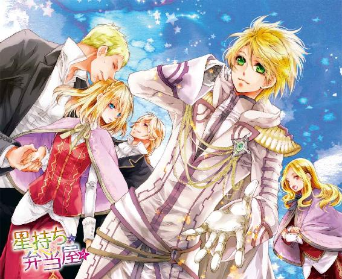
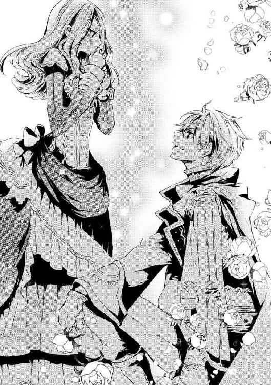

| 星持ちと弁当屋: 2 (一迅社文庫アイリス) | |
| 久吉 | |
| (2015) | |

イラストレーション ◆ すがはら 竜
星持ちと弁当屋２
「あのっ！ 離してください！ 連れが待っているんです！」
目が見えない状態で、見知らぬ人に手を引かれて歩かされるというのが、これほど怖いこととは思わなかった。
しかも周りは後夜祭を楽しむ人たちでごった返している。耳元を人の気配がかすめていくたびに、お腹のあたりがひやりとした。
何とか前を見ようと目を瞬くが、太陽を直接見たときのように、痛いほど眩しくて何も見えない。
「何なんですか！ これ!!」
「ああ、リリア。こすってはだめよ。ただ少し光の魔力でくらませているだけだから」
空いた方の手で目元を押さえて叫ぶと、優しく諭すような声がした。名前を呼ばれたこともだが、言われた内容に驚いて、思わず口が開いてしまった。
一体何が『ただ少し』なのか。星のある人ならば魔力は簡単に使えるものだが、光の魔力でこんなに長い間、目をくらませることができるなど聞いたこともない。
「どうして私の名前を......あなた誰なんですか。星持ち様ですか？」
後夜祭を一緒にまわっていたアルドさんが私から離れたあと、この見知らぬ美女に話しかけられて連れ出されるまで、いくらも時間は経っていなかった。
一瞬の隙に、造作もなく魔力を操り、こうして持続させられるとなれば、一般人ではないだろう。
「少しあなたに頼みたいことがあって、調べさせてもらったの。ああ、私は残念ながら、星持ちじゃないわ。魔力の扱いが得意なだけ」
屋台で客引きをする高い声や、どこかから聞こえる弦楽器の音。たくさんの音が混じり合う中でも、その声は不思議と良く聞こえた。
「......魔力の扱いが得意な方が何の御用かわかりませんが、離してください。連れに心配をかけたくないので」
話しているうちに、最初の混乱からは随分落ち着いてきた。何をされるかわからない恐怖感が完全になくなったわけではないが、こうして私を好きにしゃべらせていることや、一応質問にも答えてくれることからも、敵意や害意は感じない。
「〝アルドさん〟とデート中だったのよね。ごめんなさい。あまり手間はかけさせないわ」
「......」
声には出さずに済んだが、掴まれた腕ごしに動揺がしっかり伝わったのだろう。美女が可笑しそうに喉を鳴らすのがわかった。
「心配しなくても、少しゆっくりお話ししたいだけなの。話が終わればきちんと送って行って差し上げるわ。戻ってから、デートの続きを楽しんだら良いのではない？」
「そんな勝手なこと......！」
忙しいアルドさんが作ってくれた貴重な時間。私が今着ているサーモンピンクのドレスも、緩く編んでもらった髪も、ライラや彼女のご家族のご厚意によるものだ。
――絶対に、こんなわけのわからないことのためのものじゃない。
苛立ちとともに力任せに腕を引くが、緩む気配もない。華奢な女性だったはずなのに、ここまで押さえ込まれてしまうのは魔力を使っているからかもしれない。
星持ちたちの卵に混じって、アカデミーで魔学を学ばせてもらっている私だけれど、所詮は教科書で覚えたことばかりだ。何の魔力をどうやって使っているかさえ、見当もつかないのが悔しい。
「勝手で結構よ。私はこの手を離す気がないし、あなたは私の魔力で目を開けることができない。......ついてくるしかないわ」
「なっ......！ だ、誰か......！」
ついてくるしかない、と言われて、はいそうですかと大人しくできるわけはない。ありとあらゆる抵抗を試みたが、思いに反して足はせかせかと前に進み、腕は外れない。大声を出せば周囲の人が見咎めてくれるかとも思ったが、何せ周りは騒がしすぎた。
助けを呼ぶ声は、誰にも拾われず消えてしまった。
――目を開けられないまま人混みを抜け、どのくらい歩かされただろうか。
ふと、身を包む空気が暖かくなった気がした。そのまま腕を引かれ、椅子のようなものに座らされる。
「......さあ、もう目を開けていいわ」
傍らから聞こえる声に、びくびくしながら瞼を持ち上げると、光沢のある淡い黄色の壁と天井が目に入った。
私は肘かけのついた、座り心地の良い椅子に座らされていた。視線を感じてそちらを見れば、笑みを含んだ青い瞳があった。
「............」
特に手足を縛られているわけではないし、身体の異常は瞼の裏が少しちかちかするくらいだ。気分が悪いわけでもないから、おかしな薬なども使われてはいなさそうだ。
瞬きをしたり、手足を確かめている私を見て、美女が微笑んだ。
「ああ、自己紹介がまだだったわね。私はイヴェンヌよ。イヴでいいわ」
「............」
にこやかに自己紹介されても、私にはこの人と知り合うべき理由もわからない。どちらのイヴさんか、何の目的でここへ連れてきたのか。
自然、眼差しも好意的なものからはかけ離れてしまう。
「いやね、そんな顔で見ないで。......あなたのことは、リリアと呼んでも構わないかしら？」
「............」
イヴは、頼みたいことがあって、私のことを調べていると言った。私の名前や容姿などは、別に秘匿されていることではないから簡単に調べられるものだろう。
だけど、アルドさんと私が今日後夜祭をまわっていることなど、どうやって知り得たのだろう。アルドさんの身近な人が、どれほど今日の予定を把握しているかはわからないが、私の身近な人では、ライラとそのご家族くらいしか私の予定は知らないはずだ。
「お話しするって、何についてですか。アルドさんのことですか」
聞いたことはないけれど、国の第一王子で一等の星持ち様となれば、誰かに狙われたり、取り込みたいと寄ってくる人がいたりするのかもしれない。
私をこうして連れて来ても、きっとアルドさんは誰かの思い通りになったりはしない。もちろん、私を助けに来てはくれると思うが、相手の言うことを聞くかどうかと言われれば、首を傾げてしまう。
この人はそこまでわかっているだろうか、とイヴを睨むと、ふふ、と笑われる。
「アルドさん、のことじゃないわ。そんなに気になるのかしら？」
「............」
当たり前だ。
今回のデートは、奇跡のような偶然が重なり合ってできている。
新年を王都で過ごすのも初めてだったし、そこにアルドさんがいて、しかも二人きり、となれば、こんな機会はもう二度とない。
他の人にとっては取るに足らないことかもしれないが、私にとっては大事なことなのだ。
せっかく誘ってくれたアルドさんに心配をかけたり、こんな誘拐事件に巻き込まれたりして、苦い思い出にしてしまうのは絶対に嫌だ。
遠くの方では、お腹の底に響くような断続的な音が聞こえる。後夜祭の最後で最大の見どころと言われている花火が上がったのだろう。
アルドさんは今頃探してくれているのだろうか。目を離さなければ良かったと、気に病んではいないだろうか。
その姿を思い浮かべただけで、そわそわとお尻のあたりが落ち着かない気分になった。
「まあ、あれこれ説明するよりも、見てもらった方が良いでしょうね。......こちらについてきて」
イヴは身を翻し、扉を開けて廊下へと促してきた。調度品から予想はついていたが、それなりの大きさの屋敷らしい。廊下に敷き詰められた絨毯も、飾られている花器や絵画にも手とお金がかけられているのがわかった。
「入って」
廊下をいくらも歩かないうちに、イヴは足を止めた。招き入れられた部屋には、窓辺の椅子に一人の女性が掛けていた。
黒髪に青銀の瞳の女性。四十代くらいだろうか？
ゆったりと椅子に腰掛け、ぼんやりと外を眺めている。
「あなたには、彼女を治してほしいの」
「治すって......。私、医者でも医療師でもないですけど」
医者は魔力を使わず、医学の知識や薬を用いて傷や病を治す。医療師は魔力で傷や病を治す。医学には全く縁のない弁当屋であり、星を持たない私には、どちらも無関係だ。食餌療法とかなら、できることはあるかもしれないが。
「彼女は、身体にはどこにも異常がないの。精神が壊れてしまっているだけ」
自分のことを言われているのに、黒髪の女性はぼんやりとした視線を外に投げるばかりだ。
イヴが静かに女性に近づき、手を握る。
「アナスタシア様、イヴェンヌです。今日はお客様に来ていただきました」
イヴの声かけにも、女性は反応しない。握られた手にも力が入っているようには見えず、されるがままだ。
そっと女性の手を離したイヴは、私を振り返る。
「あなたの〝心〟を、アナスタシア様に送ってほしいの」
「えっ!? 私が？ 〝心〟を使える医療師を呼んだ方が良いと思いますけど」
一般市民では呼ぶためには色々と煩雑な手続きが必要な医療師だが、ここはきっと貴族のお屋敷だ。イヴも、アナスタシアと呼ばれたこの女性も、身なりが良く、長く日に当たったり重いものを運んだりしているようには見えない。
数少ないと言われる〝心〟の使い手も、簡単に呼べるだろう。
「呼んだわ。医療師だけじゃなく、この国で確認されている〝心〟を使える星持ちほぼすべてをね。今の医療師長も、彼女に〝心〟を送ったけれど、効果がなかったわ。正攻法ではもう無理なのよ」
じゃあ尚更私じゃないでしょう！ と思わず叫びそうになる。
師長は私の師匠だが、習ったのは〝心〟を垂れ流しにしないことや、狙った〝心〟を食べ物に込めることだ。直接人に対して意図的にやるのは危険だと言って、禁じられているのに。
師匠ができなかったことを、不肖の弟子の私ができるわけがない。
無理だ、と言おうとするが、イヴに遮られた。
「もし、あなたが彼女に何らかの影響を与えられたら、今後起こるすべての煩わしいことから、私が必ず守ってあげる」
今後起こるすべての煩わしいこと？
パイがこげたとか、師長に辞書でぶたれたとか、そんなことじゃないだろうな。
もう、今この状況が煩わしいというのに、今後もあるというのか。
「......煩わしいこととは、何でしょうか」
嫌々ながら聞くと、イヴは少しだけ困ったように眉を下げながら微笑む。
それは聞き分けのない子どもに呆れながら言い含めるような――なぜか感情を逆撫でされるようなものだった。
「面と向かってはっきりと言われたことはないでしょうけれど。星がないあなたが、魔力を――それも使い手が少ないと言われる〝心〟を使えるというのは、とても特殊で奇異なことなの。中には星見台の教義に背くと考える者もいるし、研究対象として並々ならぬ興味をあなたに抱く者も多いのよ」
その上、とイヴは瞳を閉じて小さく首を振る。ゆるやかに巻かれた香色の髪が揺れるのに合わせ、夏の高原のような香りがした。
「その希有な存在を、国の第一王子が気にかけている――あなたが煩わしいことを呼び込んでしまう要素は、ざっと挙げただけでもこのくらいはあるわね」
「............」
「現にあなた、王太子妃候補者に恨みを買って刺されたそうじゃない」
イヴのことばに思わず、かつて傷があったところをそっと押さえる。ライラや師長の迅速な治療のおかげで痛みも痕も残らなかったが、思い出せば何となく痛いような気がするのだ。
一体どこまで知っているのかわからないが、随分とイヴは私の周辺に詳しいようだ。
私に星がないことも、〝心〟が使えることも、王太子妃候補者のいざこざに巻き込まれたことも、アカデミーの中でさえ大っぴらにはされていないのだ。
星見台につてがあるのか、独自の情報網があるのか。
沈黙したままの私に、イヴはひたと視線を定めた。強い意思を秘めた、大きな青い瞳は射抜くようだ。
「あなたには、選ぶまでもないことだと思うわ。やるだけやって、効果がなかったら私も諦める。でもやらずに逃げ帰ることは......許さない。身勝手なことを言っていることは、わかっているわ。でも......どうかお願い」
イヴは言いながら、どこかが痛むような顔をした。
このアナスタシアという女性は、イヴにとって大切な人なのだろう。手段は褒められたものではないが、イヴも私に強要することを望んでいるわけではないのかもしれない。
そこまでしても、可能性はすべて試したいということなら。
ほう、と一つ息を吐き出せば、イヴの肩がぴくりと動くのが見えた。
「わかりました。......でも、どうなっても責任は取れませんよ」
頷くイヴを確認してから窓辺の女性に近づくと、花のような優しい香りがした。目鼻立ちも整った美しい人なのに、黒髪はどことなく艶がなく、青銀の瞳にも光はない。
――からっぽの、きれいな器を見ているみたい。
労働を知らない白くほっそりとした手を握る。冷たく、乾いた手だった。
「はじめまして。私はリリア・ブリットと申します」
温もりが移るように、握手をするような形で少し力を込めて握る。
私が送れる〝心〟なんて、たかが知れている。
確実に、安全に送ることができるものとなると、誰かに向ける好意や何かに感動した気持ちくらいだ。
そして今回は好意を抱けるほど彼女を知らないので、後者しかない。それも、なるべく最近のものの方が確実だ。
目を閉じて思い返す。
空が綺麗に晴れていたこと、食事がおいしかったこと、屋台での買い物が楽しかったこと。
――それに。
聖祭事で舞う、光り輝く細氷。
そして、池でアルドさんが見せてくれたもの。
今まで生きてきた中で、あんなに綺麗なものは見たことがなかった。
あっという間に消えてしまう、儚いけれど強い光。
そして、励ましてくれた手の温かさ。あのときだけは、私だけを映していた灰色の瞳。
――すごく、すごく、うれしかった。
思わず頬が緩んでしまったとき、手の中で何かが動く感触がして、ハッと私は目を開けた。
今、手が動いた？
「っ！ アナスタシア様！」
少し離れたところに立っていたイヴが駆け寄ってくる。耳元で呼びかけながらアナスタシアさんの腕に手をかけ、軽く揺さぶる。
だが、何度呼びかけても、アナスタシアさんがそれ以上動くことはなかった。
やがてイヴは、そっと息をついて私の方を見た。
「......あなたと、契約を結びたいの」
「契約？」
私の体温で少し温かくなった手を離して、首を傾げる。
「アナスタシア様が反応を示したことは、初めてだから。あなたの可能性にもう少し賭けたいの。アカデミーにいる間でも、私と契約すれば必要な分、外出が許されるわ」
だから、しばらくここへ通ってほしい、とイヴは頭を下げた。
「え......」
てっきりまた脅しめいたことを口にするかと思っていたので、正直面食らってしまう。
どうしよう。
気持ちの上ならもちろん答えは『嫌』だが、どう答えたら良いのか。
私がもし断っても、イヴは私に危害を加えたりはしないだろう、という予感はした。本当に私を思い通り動かそうと思うのなら、もっとやり方はあるはずだから。
――でも、断ったとして。もしかしたら自分にも何かできたかもしれないのに、とあとで気にかけたりしないだろうか？
星がない私に〝心〟が使えた不思議。それを見つけてもらった縁。
――でも、明らかにこれは面倒ごとだ。しかも予感が確かなら、かなり厄介な部類の。それにもし失敗したら、どう責任を取ったら良いのか。
あれこれと考える私を、イヴがじっと見つめていた。
はぁ、とため息をついて頭を振ってはみたものの、決められなかった。今、どちらを選んでも後悔しそうだ。
「......師長の許可が得られれば、お受けします」
もうこうなったら丸投げだ。そもそも師長がちゃんと結果を出していれば、弟子の私がこんな目には遭わなかったはずだ。
アナスタシアさんの治療に来たことがあると先程イヴが言っていたし、師長が危ないと判断すれば断れと言うだろう。
「......ありがとう」
ほんのり目元を染めたイヴが嬉しそうに微笑んだ。それはどこか悲しい、強い願いのこもった美しい笑顔だった。
＊
先程別れた屋台の前へ戻ると、アルドさんが待っていた。目が合うと、顰められていた眉が緩むのがわかった。
「ごめんなさい、アル。ちょっと彼女を借りたわ」
アルドさんが口を開く前にイヴが悪びれずに言う。一度緩んだはずのアルドさんの眉間が、また静かに皺を刻んだ。
「......リリアには護衛がついていたはずだが」
「ええ。ついていたわね。まさか、私があんなのにひけをとるとでも？ 大体、本当に守りたいなら、何があったとしても、そばを離れるべきではないと思うけれど」
やや大げさに驚いて見せてから、優雅に口元に手を当てたイヴは、ころころと笑う。
静かに怒りを湛えるアルドさんを見ていると、私まで落ち着かない気持ちにさせられてしまうが、イヴは一向に気にした様子がない。〝アル〟と呼びかけたところを見れば、親しい間柄なのだろうか。
「――イヴ、俺のことはともかく......」
アルドさんが口を開いたそのとき、どん、と一際大きな音がして、空に大輪が咲いた。ぱらぱらと小さな音とともに、花火の残滓が降ってくる。
そろそろ祭りの終わりが近いのかもしれない。
「あの！ ご心配をおかけしてすみませんでした。私なら、大丈夫です。......せっかくの時間なので、花火を見に行きたい......です」
思い切り水を差す発言だとわかってはいるが、アルドさんの怒りの原因は、私の身を案じてくれたからだ。自分のせいでアルドさんが誰かと喧嘩するのは、嫌だった。
それに、こんな風に出かけられることなど、もうないかもしれないのに。
「そうね。アルの文句はあとからゆっくり聞くわ。今からなら最後の花火にも間に合うでしょう。デートの続きを楽しんで」
そもそも誰がここまで邪魔をしたのか考えれば、張本人が何を言う、と腹も立つが、今それを言い出したらきりがない。アルドさんを仰ぎ見ると、仕方がない、とばかりため息をつき頷いてくれた。
またあとで連絡する、と言い置いてイヴは人混みに消えた。
その背を見送るアルドさんは何か言いたげだったが、私の視線を感じたのか、「行こう」と軽く背を押してくれた。人でごった返している中、ゆっくりと広場へ向かう。
「あの......。本当にすみませんでした」
きっと責任感の強いアルドさんのことだから、気を揉んだだろう。王都に慣れない私だから、迷子にでもなったのではと思われたかもしれない。改めて詫びれば、アルドさんは首を振る。
「いや、リリアにこそ怖い思いをさせた。いざというときのため護衛が動けるようにはしてあったのだが......」
「護衛って......どこに？」
イヴとの会話でも確かそんなことを言っていた気がする。だが、周囲を見回してみても、祭りを楽しんでいる様子の人ばかりで、そのような雰囲気の人はどこにもいない。
「二人きりを邪魔されるのは心外だからな。離れたところにいる」
「......そう、ですか」
ことばのままの意味かどうかはわからなかったが、ここまではっきりと言われれば、どうにもいたたまれない。会話を中断し、足元へ集中することにした。
ふと、隣を歩いていたアルドさんが私の後頭部の髪に触れた。
「......ほどけている」
「え！ どこですか？」
イヴに連れて行かれたとき、ほどけたのかな？
慌てて触ってみるが、ライラのお母様に結い上げてもらった髪は、何がどうなっているのか鏡なしにはわからない。
「じっとしていろ」
言われて手を下ろすと、アルドさんが再び髪に触れた。
痛くないようにしてくれているのか、優しく引かれて結われていく髪が妙にくすぐったい。
異性に髪を触られる経験がそもそもないし、さらに人目がある場所というのがどうにも恥ずかしい。道行く人は花火に夢中だが、見られていないだろうか？ 怖くて視線を上げられない。
ほどなく、アルドさんは手を離して私の顔をのぞき込んだ。
「これで帰るまでは大丈夫だろう。......似合っている」
ほんのりと笑みを描く唇は、至近距離でまともに見られるようなものではない。昼間も何度も思ったが、自分がアルドさんにとって特別な存在なのではないかと、勘違いしそうになる。
「すみません......ありがとうございます。......それにしても、こんな複雑な髪を結い直せるなんて、意外です」
ごまかすために、慌てて視線をそらして早口で言うと、アルドさんは苦笑した。
「妹が小さい頃は、落ち着きがなく無鉄砲で。木の枝に引っかけたり転んだりして、結い直してやることがあった」
「へえ、妹さんがいらっしゃるんですね」
そういえば、カティーラ国王には王子殿下が二人に、王女殿下が一人いらっしゃると習った気がする。
「さっき会っただろう。聞いていないのか？」
「え、さっき!? イヴ......さん、ですか」
さも当然のように言われ、素っ頓狂な声が出た。気にした風もなく、アルドさんは頷く。
「母親が違うから、あまり似ているとは言われないが、妹だ」
「えーと、じゃあエディくんのお姉さんにあたる？」
「ああ。イヴとエディは同じ母親だ。......仲は非常に悪いが」
そう言われて想像してみれば、確かに仲は悪そうだ。お互いが言い分を譲らず、なぜ自分に従わない、と憤慨している姿が目に浮かぶ。
「大変ですね、お兄ちゃん」
イヴとエディくんの喧嘩は収拾がつかないだろうなと、つい笑ってしまう。それでも、長男であるアルドさんは根気よく仲裁役をしていそうだ。
苦労性のお兄ちゃんは、苦笑するばかりだった。
後夜祭の最後は、花火師と星持ちが協力しあって作り上げる興行で締めくくられる。
ライラからその話を聞いたとき、花火だけでも滅多に見られない素晴らしいものなのに、そこに星持ちが加わったらどうなるのかという期待で興奮したものだ。
人の波を縫いながら進み、やっとのことでたどり着いた広場の小高いところへ、二人で並んだ。
まばゆい光が夜空を照らし、同時に、身体の深いところからせり上がるように音が響く。
「......イヴに、何を言われた」
花火に見とれていたので、一瞬何のことかわからなかった。
少し考えて、引き離されていた間のことを聞かれているのだと気づく。
「あー......。えっと」
イヴには屋敷を出る際に、このことは他言しないようにと強く言われていた。アナスタシアと呼ばれる女性があそこにいることも、〝心〟の治療が必要なことも、決して誰にも知られてはならないと。
「私からは......。あとで自分から説明すると言っていました」
「......すまない」
目を伏せたアルドさんが小さく詫びた。
何のことだろうと首を傾げると、数拍迷ってからアルドさんは口を開く。
「また......、こちらの事情に巻き込んでしまった。俺の家のことを考えれば、こうして出かけることも良くないことだとわかっていたが......」
音とともに昼間のように広場を照らす白い光。見る間に色を変えて勢いよく飛び散っていく。
花火だけであれば、きっと光はここまで強くない。最後の最後、手元に落ちてくるぎりぎりまで、霧雨のように細かな光の粒が闇を照らしていた。
まるで、流れ星が砕けて降り注いでいるようだ。
途切れたことばの先を待っていたが、なかなかアルドさんは口を開かなかった。どうしたのだろうと隣に立つアルドさんを仰ぎ見れば、花火が映り込むその瞳の中には、私が見えた。
「――もう、退く気はない」
一際大きな花火の音に続いて、どっ、とわいた歓声。音にかき消され、アルドさんが言ったことばが良く聞こえなかった。
え？ と聞き返そうとしたところを、そっと引き寄せられた。
見れば、盛り上がった人たちが、最後の花火があがるとともに、服を脱ぎ出したり酒をかけあったり、大変な騒ぎになっている。私の隣に立っていたおじさんも、ものすごい雄叫びを上げて、木のゴブレットが割れそうなほど周囲の人たちと乾杯を繰り返している。
巻き込まれたら大変そうだ。
「......時間切れだ。送っていこう」
「あ......。はい」
そうだった。これから一度ライラの家に戻って、アカデミーへ帰らないといけない。外出が許されるのは新年祭の間だけなのだ。
祭りの終わりを告げられ、何とも言えない寂しさが襲う。
「......また、連れてこよう」
手を引いてくれるアルドさんのその瞳に、ほんの少し寂しさが見えた気がしたのは、私自身のものを映し込んだせいなのかもしれない。
＊
ディルス公爵家に送ってもらい、ライラとご両親に簡単な挨拶をしてアルドさんは帰っていった。
忙しい人だから、しばらくは会うことも難しいだろう。
あ、でももしイヴの屋敷に通うことになったら、アルドさんに会える機会があるかもしれない。
王女殿下に頼んで王子殿下に会わせてもらう......と考えるととんでもないことだが、無理なお願いを聞くのだから、ご褒美をもらっても良いはず。
アカデミーに戻る前に着替えを、と再び公爵夫人の部屋へ通されると、ライラと公爵夫人が揃って口を開いた。
「リリア、似合っている」
「まあ、本当。殿下、良い趣味ねぇ」
二人の視線は私の髪へ向けられているようだが、何のことだろう。戸惑っていると、ほっそりした公爵夫人の手が私の後頭部へ差し向けられた。
「その髪飾り、贈っていただいたのでしょう？ 新年祭での贈り物は、この一年ずっと一緒にいられますようにと願いが込められているのよ。雪の結晶の意匠も、素敵ねぇ」
言われるまま手を伸ばすと、指先に冷たい金属が触れた。髪を崩さないようそっと引くと、六角形の雪の結晶を象った髪飾りがあった。
「え、いつ......」
贈られた覚えがない、と言いかけて、ハッと気づく。
あのときか。髪がほどけていると結い直してもらったとき。
「あとでゆっくり聞かせて」
「......！ ライラだって。今日どこで誰と何してたのか！ 教えてよ」
今日はライラも特別な時間を過ごしたはずだ。私の話を隠すつもりはないが、ライラの話も聞かせてもらわないと。
「......相手は、まだ内緒。でも楽しかった。露店をまわって買い物をして......花火も見た」
ほんのりと微笑むライラは、とても愛らしい。
掲げて見せてきた小さな袋には蔦模様が描かれている。王都で有名な菓子店のものだった。
「あ、それ私も買った。師長のお土産にしようと思って」
「......そう。クッキー好きだものね」
――何とか相手を吐かせようと馬車の中でもはしゃいだせいなのか、今日の特別な体験のせいなのか、その日はアカデミーへ戻ってからも、なかなか寝つくことはできなかった。
＊
「行ってこい。講義をいくつか免除してもらえるよう俺からも学長へ伝えておく」
後夜祭の翌日。
イヴからの頼みごとの話をエリク医療師長にしたところ、あっさりとそう言われてしまった。
......これは、あれか。かわいい子には旅をさせろということか。師長なら、お前は俺が守る！ と言ってくれると思ったのに。
突き放すなんて、ひどすぎる。
「師長は、私がどうなってもいいんですね！」
お土産で渡した香辛料の入ったクッキーをかじりながら、とりあえず文句を言ってみる。
私の淹れた課題のお茶を飲みながら、師長は眉間の皺を一層深くした。あの溝へ、そのうちペンでも挟めるようになるんじゃないか。
「阿呆。どうもなりはしない。あいつも無茶苦茶な奴だが、王族としての責任感も自覚もしっかりある。お前を危険な目に遭わせたりはしないだろう」
「......そうじゃなくて。身分の高そうな女の人だったし。うっかり悪化させちゃったりしたら、私の命が危ういんじゃないかと思うんです」
お前のせいで！ なんて責められてからでは、遅いと思うのだ。イヴはやるだけやってだめだったら......などと軽々しく言っていたが、私が一番信じられないのは私自身だ。
「まあな。何せ、元がつくとはいえ、王妃殿下だからな」
「......は？」
師長のことばが、一瞬意味を成さず、右耳から左耳へ通り抜けて行った。
王妃殿下？ 元？
「あの人が王妃殿下って......どういうことですか？ 王妃様は数年前に亡くなられていますよね？ あ、でもアルドさんとはお母さんが違うって言っていたから......」
王妃殿下は確かに数年前、亡くなっている。国中が喪に服す期間があったことを覚えているから間違いはないし、エディくん自身もそう言っていた気がする。
ではアルドさんの？ と思ってから、いやそれはないだろう、と即座に否定する。
だってアルドさんのお母さんは......。
私が考えていると、何も言わずに立ち上がった師長がおかわりのお茶を淹れ、手渡してきた。勧められるがままお茶に口をつけると、宥めるような優しい〝心〟が流れてきた。
「......えぇ？ そんな、すごい話なんですか」
なるべく落ち着いた状態で話を聞けるように〝心〟を込めたということは、相当重い話なのか。
そうであってほしくないという希望を込めて、押し殺した声で聞けば、師長は肯定も否定もしなかった。やや乱暴な仕草で、私の向かいへ腰を下ろす。
「お前がアナスタシア様と関われば、いずれ知るはずの話だからな」
胃がきゅっとなり、血の気が引いていくのを、師長が送ってきた〝心〟の魔力がたちまち静めていく。さすがはアカデミーが誇る医療棟の長。国で最高と謳われる医療師。その妙技に惚れ惚れしてしまう。
伝え聞いたことも多く含まれるから、と前置きしてから師長もお茶を飲む。
「これは、アルドヘルムの出生にも関わる......王家の昔話だ」
現カティーラ国王レオニートには、唯一の妃がいた。流れるような黒髪は夜空の煌めき、青銀の瞳は宝石よりも眩く、他国にもその美しさが知れ渡るほどの妃だった。
妃が褒め讃えられたのは外見の美しさだけではない。心優しく、真摯に民を思う姿に、多くの支持が集まっていた。
レオニートが即位し一年ほど経った頃、王妃の懐妊が発表された。落ち着いた治世。目立った戦もなく、不作や天災もない、平穏な年だった。
「ところが、王妃が第一王子出産とともに、亡くなったと発表があった。それと同時に王宮では、ある噂がまことしやかに囁かれるようになった」
「......アルドさんに聞きました。ルーベントさんの血まみれ、の噂ですよね」
ルーベントさんが、なぜ緋翼の君と呼ばれるのか、以前話してくれたことを思い出す。
「そのときは、アルドさんのお母様を、ルーベントさんが......手にかけたという噂だと聞きました。......アルドさんはそれを信じていないとも」
迷いながら口にすれば、師長は頷いてくれた。手の中のお茶はいつの間にかぬるくなってしまっていたが、込められた〝心〟は変わらない。
「公には、王妃は出産時に亡くなったことにされている。だが真実は違う。〝心〟の影響を受け、その心をばらばらにしてしまっただけだ。ルーベントは王妃と懇意にしていたことを理由に、〝心〟を送り込んだのではないかと疑われ......アカデミーに軟禁されている」
「............じゃあ、あの人は」
〝心〟の魔力で壊れてしまった人。黒髪に青銀の瞳。アルドさんのお母さんだというのなら、きっと四十代後半くらいの美貌の人。
「そうだ。公には葬儀も行われ、後添いの妃も迎えられているから、あくまでも元、だが......アナスタシア様は王妃だ」
「――師長、それを知っていて、私に受けろって言うんですか......」
身分が高いとは思っていたが、まさかの王妃様。知らずにアナスタシアさん、なんて頭の中で呼んでいたのが、誰にも知られなくて良かった。
半ば脱力しながら抗議すれば、わざとらしく師長は左の眉を持ち上げた。
「ほぉ。今これを知って、お前は受けないという決断ができるのか？ 相手が王族だからと差別して、自分ができるかもしれないことをせずに、アルドヘルムの母を見捨てることができるとでも？」
「............」
無関係な人が相手でも、自分にできたかもしれないことをせずに背を向けるのは、何となく良心が咎める。
それなのに、相手がアルドさんのお母さんと言われたら、余計に無理だ。こんなにアルドさんには気にかけてもらったり助けてもらったりしているのに、知らん顔ができるわけがない。
私がそういう結論を出すということは、師長にはお見通しだったということなのだろう。
何ていうか、悔しい。
返事の代わりに師長を睨めば、鼻で笑われた。馬鹿にされていると他の人なら思うのかもしれないが、仕方がない奴だと呆れながらも、いざというときは必ず助けてくれる安心感を含んだ笑いだった。
「小難しいことをお前は考えなくて良い。そもそもこれは親世代の――ルーベントや国王陛下の確執が根底にある。アルドヘルムや、ましてやお前が背負うようなものではない」
精一杯やってこい。そう背を押されれば、自然と頬が緩んでやる気が出てくるから、不思議なものだ。
＊
「屋敷への訪問は、週に一度。週末の夜だけね。......ありがとう」
アカデミーの学長からの許可証に目を通したイヴは、美しい仕草で礼をした。
師長の許可を受け、学長にも相談したところ、外出は週に一度が限度だと言われたのだ。私自身、あまりにアカデミーを空けて落第するのも嫌なので、良い妥協点だったのではないかと思う。
「私は、具体的にはどのようにさせていただいたら......」
イヴに淑女の返礼をしてから問えば、なぜかとても嫌そうな顔をされた。
「それ、どうにかならないかしら？」
「え？ それ......ですか？」
王族のお屋敷に相応しい服など持っていないから、私が今着ているのはアカデミーの制服だ。髪も乱れていないと思うし、何のことを言われているのだろう。
「その、礼やことば遣いよ。使い慣れない様子があからさまで、見ていて落ち着かないわ。借り物の靴で無理矢理歩いているみたい」
「......それは何というか。イヴさんとは違うので」
付け焼刃なのは私自身が一番わかっている。話し方も礼儀作法も、アカデミー入学前にミンティ先生に習ったことがほぼすべてなのだ。いくらミンティ先生が星持ちの卵たちを育てることに熟達しているとはいえ、一般人の私がわずか半月で魔学と礼儀作法を自分のものにできるはずはない。
「私も、公の場以外ではこんな感じだから、ここではいつも通りにして。〝イヴさん〟もだめよ」
「......はあ、わかりました」
私の答えに満足そうに頷いたイヴは、そのまま屋敷で働く人を紹介してくれた。執事さん、給仕などを中心に行うメイドさん、料理人。
これで全員よ、とイヴが振り返るが、そこには十人もいない。これほど大きな屋敷なのに、この人数で賄えるものだろうか。
「この屋敷の性質上、雇い入れている人間は最低限なの。もちろん、その分少数精鋭よ。期待していてちょうだい」
にっこりと笑うイヴに、紹介された人たちも親しげな笑みを浮かべた。
こんな温かな雰囲気のお屋敷なら、通ってくることも続けられそうだな、と少しだけ気が楽になった。
＊
「こんばんは。ようこそおいでくださいました」
「こんばんは。お邪魔します」
イヴの屋敷の玄関ホールを入ってすぐ、出て来たメイドのアンナさんは、こうしていつもうれしそうに迎えてくれる。亜麻色の髪を揺らしてきれいな礼をとったアンナさんは、まだ少女と言っても良いほどの年齢だろう。だが、洗練されたその動きは、私には到底真似できそうにないほど素晴らしい。
こんなに歓迎してくださって恐縮だ、と以前アンナさんに言ったら、「お客様がいらっしゃるのは珍しいことですので、皆うれしいのです」と微笑んで教えてくれた。こうした出迎えにも、出される料理にも、歓迎してくれる気持ちがにじみ出ていて、くすぐったいようなうれしさがある。
「イヴェンヌ様がお待ちですので、どうぞ。......案内はよろしいですか？」
「はい、大丈夫です。ありがとうございます」
上着を受け取りながら聞いてくれたアンナさんに、軽く手を振って案内を断る。
こういう大きいお屋敷では、執事やメイドが客を案内するのが当たり前だが、私にとっては居心地悪いことこの上ない。しかもここで働く人たちは、少数で王族が住まう屋敷を管理しているからとても忙しい。
貴重な時間を使わせるのも申し訳ないなと思い、屋敷の中に慣れてきた頃、可能であれば案内をなくしてほしいと伝えたのだ。アンナさんには、そんなことはできないと強く抵抗されてしまったが、イヴからの口添えもあって、今ではこうして一人で歩かせてもらっている。
廊下を進んで行けば、品の良い美しい調度品が脇に飾られているのが見える。飾られた花のものなのか、焚かれた香なのか、甘い香りが漂ってきた。
窓際には暖をとるための火石がいくつも置かれているが、廊下はやはり冷えた。そろそろ雪が降るのかもしれない。
「こんばんは。リリア・ブリットです」
たどり着いた部屋の扉を軽く叩くと、すぐにイヴが扉を開けてくれた。光沢のある生地を重ねた濃紺のドレスを纏った彼女は、月光の下で咲く花のように美しい。
「いらっしゃい。早速始める？ それともワイン飲む？」
イヴの誘惑に、思わず喉が鳴る。
夕食は必ず抜いてくるように毎回言われているので、お腹も空いていた。それにイヴが用意してくれる食事もお酒も、今まで口にしたことがないほどおいしいのだ。
......決して私が意地汚いせいではないはずだ。
「......もう。終わってから、いただきますっていつも言っているじゃないですか。やめてくださいよ、誘惑するのは」
そうだった？ ととぼけて首を傾げるイヴの瞳には、楽しそうな色が躍っていた。口を尖らせている私を見て、面白がっているのだろう。
屋敷への訪問を重ねる中、大っぴらに話すことのできない共通の秘密や、ともに食事をしたりお酒を飲んだりする時間が、私とイヴとの距離を随分縮めていた。
もちろん、あくまでも相手は王女殿下だから、どうしても一線は引いておかなければならないけれど。
「アナスタシア様、こんばんは」
窓際の椅子に座ったアナスタシア様に近づき、そっと手をとった。
白魚のようなほっそりした手は、確かに年齢を重ねているが美しい。爪もきれいに磨き込まれている。いつ見ても羨ましい。
......実は、まだ誰にも言っていないことがある。
アナスタシア様にこうして触れていると、彼女から何かが流れてくるのだ。はじめはぼんやりした靄のようなものだった。通い続けるうち、次第にそれははっきりしてきて、色々な心情を映し出した。
庭で駆け回る二人の男の子を愛しいと思う気持ち。
優しく触れてくる男性の手に泣きたくなる気持ち。
年配の夫婦を労る気持ち。
頻繁に出てくる二人の男の子が、大きくなったり小さくなったりすることから、時系列もばらばらなようだ。どれも霞がかかったようにぼやけていて、しっかりと像を結ぼうと目を凝らすと、たちまち霧散してしまうのだ。
これは何なんだろう。彼女の記憶？
でも、こうして流れてくるということは、これは〝心〟だ。
アナスタシア様も〝心〟を扱える人だったのだろうか。
考えても、答えは見つからない。首を振り、〝心〟を紡ぎ直す。
――アナスタシア様、三十年近く眠って、そろそろ退屈じゃないですか？
季節はこれから春を迎える、とても良い頃ですよ。
暖かくなったら、アカデミーの裏の森へ山菜を探しに行こうと思っているんです。やっぱり一番は薄く衣をつけてカラッと揚げるのが良いですよね。山菜を揚げたものは、すぐにくたっとなってしまうから、弁当には向かないんですけど。塩漬けにするのも良いですね。
――アナスタシア様、あちらでイヴが待っていますよ。グラスにワインが入っているのに、ほとんど減っていない。
イヴって、口では豪快で大胆なことを言うのに、実は結構繊細ですよね。アナスタシア様のことを大切に思って......心配しているのが、ここへ来るとすごく伝わってきます。
私も、目を覚ましたあなたと、色々な話がしてみたいです。あの男の子たちは誰ですか、とか。お好きな食べ物は何ですか、とか。私に作れそうなものであれば、ぜひ食べていただきたいなと思います。
あとは――アルドさんのこともお話ししたいです。王子殿下としても、星持ち様としても――すごく素敵な人なんですよ。
とりとめのない〝心〟を私から流す一方、今日もアナスタシア様からは優しい〝心〟が流れてきた。
今までも何度か感じた、二人の男の子への温かい気持ちだ。
二人とも髪色は薄いようで――やや年の離れた兄弟のようにも見えた。誰なのだろう、この男の子たちは。
しばらく続けると、めまいがしてきたので〝心〟を流すのを止めた。
一度、師長に自分の限界を知っておけと言われ、とことんやり続けさせられたことがある。
そのときは、十回ほど〝心〟を込めたお茶を淹れたあたりで軽いめまいがした。それでも〝心〟を流していると、二十回を超えたあたりで鼻血が出てのぼせたようになった。そこで師長がやめるよう言ったので、それ以上はわからない。
〝心〟の鍛練を繰り返すたび、持続時間は少しずつ延びている気がするが、私の場合はめまいが限界の知らせのようだ。鼻血は危険信号。
人によって色々な兆候があるらしく、皆自分の限界の兆しを知り、魔力を調節するそうだ。
「ご苦労様。どうぞ座って」
私がアナスタシア様の手を離したのを見て、イヴがソファを勧めてきた。
移動すると、グラスが置かれ、なみなみとワインが注がれた。空気に触れたワインから、芳醇な香りが漂ってくる。
「失礼いたします」
待ち構えていたかのように、アンナさんが恭しく礼をして、皿を置いて行った。皮が香ばしく焼かれた白身の魚に、つやつやのトマトや香草が美しく色を添えている。他にも炒られた木の実、燻製にされた薄切りの肉やチーズ、黄金色に焼かれたバゲットもあった。いつ見ても彩りの素晴らしさにため息が出る。もちろん味も抜群だから、さすが王族の料理人なのだろう。いつか調理場にお邪魔したいな。
口の中でワインの渋みと甘味を楽しんでから、イヴに聞いてみた。
「そういえば、アナスタシア様は〝心〟を使える人なんですか？」
「......聞いたことがないけれど」
一口大に切られた果物を口に運びながら、イヴは怪訝な顔をした。
アナスタシアさんの手を握ると流れてくるものがあること、二人の男の子が頻繁に出てくることなどを話すと、ますますイヴは困惑の色を濃くした。
「私だけじゃ判断がつかないわ。昔の話に詳しい人に聞いてみて、来週報告するわ」
イヴはそれきりその話には触れず、グラスを傾けた。
その後もあまり会話が弾まないまま、まだ早い時間にアカデミーへ帰ることになった。
＊
毎週末、イヴの屋敷へ行く習慣が加わっただけで、アカデミーでの生活は、特に変わりなく過ぎていった。懸命に講義を受け、予習復習をし、ライラと語り、食事をとる。
変わったことといえば、サリエラがいなくなったことで取り巻きの令嬢たちが解散したことくらいだろうか。
「でもさ、取り巻きをしていた子たちは、サリエラが〝心〟で何をしていたかは知らないんだよね？ どうやって説明されたんだろう」
ライラが淹れてくれた紅茶を飲みながら、ふと浮かんだ疑問を口にした。
サリエラがやったことは、もちろん許されることではない。ただ、彼女自身に惹かれて取り巻きの令嬢たちはそばにいたのだろうから、なぜサリエラがいなくなったか納得のいく説明はほしいだろう。
「父であるエイリー公爵の不正により、爵位を失ったと説明があっただけだと思う」
爵位を失っても、アカデミーに居続けることはできる。ここは身分を問わない学び舎だからだ。だが実際は、貴族の中でも最高位である公爵の娘が、その身分を失ってからも平気な顔で在学できるわけがないという解釈を、皆はしたらしい。
「爵位を失うって......相当大変だよね。生活水準を落とすのも、お嬢様にはつらいだろうし」
「......エイリー公爵は、爵位を失っただけで済んだ。でもサリエラは腕輪をはめられることになるし、きっと国外追放の処分が下ると思う」
腕輪、というのは未来永劫魔力を使えなくなるという、あれのことだろう。
爵位を失っただけでなく、魔力を奪われ、生まれ育った国を追われる――。公爵家令嬢として何の苦労もなく今まで過ごしてきたサリエラには、ただ生きていくことさえかなり難しいだろう。
「確かに、ね。〝心〟を使って、悪いことをしたんだけど......」
処分が重すぎやしないか、と思うのだ。
サリエラに操られていたナージェの治療は、長くかかると聞いている。巻き込まれた私からしても、到底許せるものではないのだけれど。
ライラは黙って耳を傾け、私の作ったプリンを食べている。
「私さ、実は魔力が使えるってわかったとき、ちょっとうれしかったんだけど。〝心〟って、星見台からどう思われて、どんな風に扱われているかが見えてきて、複雑」
星見台は星持ちを管理するとともに、星持ちでない一般の人を守る役割も担っている。
今回の厳しい処分も、〝心〟で人心を惑わすことを許すわけにいかないという意思表示なのだろう。
「......私の母も〝心〟を使える」
「えっ？ そんな話、聞いたっけ？」
卵の黄色と飴色をスプーンにのせ、ぽつりとライラがつぶやく。
ライラのお母様を思い出すが、ふんわりとした、笑顔のかわいい優しい人という印象しかない。
私が〝心〟を込めてデザートを作ったときも、そんな話は出なかったと思う。
「母は〝心〟を使えるということを隠しているから。〝心〟は、使えるというだけでは罪にはならないし、どう使うかが問題のはずなのに、星見台はそうは考えていない。その結果、自分が〝心〟の使い手であることを隠す人が出てくる」
「うん......、魔力も道具と考えれば、使い方の問題だよね。じゃあ、〝心〟だけが嫌がられるのは、どうして？」
悪用しようと思えば、どの属性の魔力だって凶器だ。ほとんどの人が不自由なく魔力を使えるとは言っても、星持ちと一般人の間ではそよ風と嵐くらいの歴然とした差がある。〝心〟だけが忌避されるのは不自然な気がした。
「それは......。私も父から聞いた話しか知らないのだけれど」
そう前置きして、ライラが教えてくれたのは、数十年前、一人の星持ちが辿った悲しい軌跡だった。
＊
カティーラのとある子爵家の三男として、フェドールは生まれた。
剣術にも長けていた彼は、アカデミーを優秀な成績で卒業したあと、国の魔術騎士団へ入団した。魔術騎士団とは、その名の通り、剣術と魔術に秀でた者によって構成される騎士団のこと。星持ちの中でも羨望を集める花形だ。
フェドールは〝心〟を含むあらゆる魔力を自在に操り、歴代の星持ちの中でも抜きん出た存在だった。
あるとき、西の国との国境付近できな臭い動きがあるという情報が入った。だが、まだきな臭いというだけで、決定的なものではない。先制攻撃を仕掛けるべきか、相手の出方を探るべきか。
国を守る魔術騎士団である彼に下った命令は、西の国へ潜入し、敵情を探ること。
西の国には数年前、カティーラの王女であるナターリアが嫁いでいたため、全面戦争を始める前に彼女を取り戻すことも必要だったのだ。
命懸けの潜入捜査の見返りに、彼はナターリアの降嫁を求めた。身分から言えば決して叶う恋ではなかったが、長年想ってきた人に手が届く可能性にフェドールは胸を躍らせた。
だが、西の国へ潜入した彼は、そこでナターリアの身に何が起こったかを知ってしまう。
和平の証として嫁いだはずの彼女は、敵国の下賤な者として侮蔑され、地下の薄暗い部屋につながれ、ただ生きているだけ、ただ息をしているだけの存在になっていた。
美しく愛らしかった面影は永遠に失われていた。
光を失ったナターリアを見つけた彼の行動は速かった。
牢番を造作もなく昏倒させたフェドールは、動かないナターリアを腕に抱いて玉座へとって返した。
「この国は、終わる」
低く良く響く声が聞こえた、と思った次の瞬間には、断末魔の声が複数上がった。
フェドールから〝心〟を流し込まれた騎士たちが、王や大臣に剣を突き立てたのだ。的確に急所を狙った剣は、次々と骸を積んでいった。
たちまち王の間は血の臭いに溢れ、立っている者は騎士たちとフェドールだけとなった。
血が滴る剣を掲げる騎士たちの瞳には、何も映らない。
この国の王は、独裁的に国政を推し進めすぎた。騎士たちも要職に就いている者たちも、多かれ少なかれ不満を持っていたため、崩すのは簡単だった。
大国が、ガラガラと崩れていく音を背で聞きながら、フェドールとナターリアは消えた。
＊
「正規の方法で行ったことであれば、フェドールは英雄になれた。でも、さすがにそのやり方はまずかったのだと思う」
彼がどこの誰かはカティーラだけが知っていたが、当時の国王は口をつぐんで彼を追う連合軍に加わったという。正式に宣戦布告を行わないうちに、他国を滅ぼしたなどと知られては、まずいことになるからだろう。
真実が露見する前に、彼を回収もしくは処分しなければならない。失うには惜しい力だったが、過ぎた力は身を滅ぼす――。
「それで......どうなったの？」
「連合軍が二人を見つけ出したときには、フェドールは自分に〝心〟を向けて、壊れていたと伝わっている。......ナターリア王女も助からなかったと」
「......そ......うか」
なんて救いのない話だ。
物語で良くあるように、王女様を助け出して降嫁してもらって、めでたしめでたしではないのか。
「魔術騎士団にいたときの彼は、自分の力を制御して無闇に力を揮ったりしなかった。でもずっと思ってきたナターリアの身に起こったことを知って、箍が外れてしまったのだと思う」
持っている力をどう使うかを決めるのは、自分。力が忌避されるものになるのか、人を助けるものになるのかは、それ次第。
そういうことなのだろう。
「カティーラでも周辺国でも、〝心〟の魔力の使い方を教えなくなった理由は、そこにあると言われている。誰にも教えられなくても使える人も中にはいるけれど、少しでも〝心〟の使い手を減らすように。この話自体も、口伝で一部の星持ちに伝えられているだけ」
そんなことをしても意味はないのに。
嘆息して、ライラが紅茶を飲んだ。
実際、サリエラのように誰にも教えられなくても〝心〟を使い、悪用する人もいる。〝心〟の教育をしないことが解決策にはなっていないのは確かだ。
私が星を持たないのに〝心〟だけ使えるのはなぜだろう。
私はこれをどう使っていったら良いのだろう。
ぼんやりと考えていると、ライラがふと私の手に触れた。薄氷色の瞳が、柔らかく弧を描いた。
「リリアは、間違えたりしない。大丈夫」
「......うん。ありがとう」
流されるまま、ここまで来てしまったけど、そろそろ自分で考えて決めなくてはいけない気がする。
......そんな余地は残されていないのかもしれないけど。
＊
『アナスタシア様が〝心〟を使えたかどうか調べてみる』とイヴに言われてから、一週間が経った。
昨夜から降り始めた雪が膝のあたりまで積もっていたせいで、寮の玄関からアカデミーの正門まで行くのに、普段の倍近くかかった。イヴの屋敷から迎えが来る時間には十分間に合うように出発したはずなのに、ぎりぎりになってしまった。
雪が踏み固められたところは凍っているので、いつも通りに歩けばあっという間に服を濡らすことになってしまう。
私のいた村では、雪が降ることはあってもここまで積もることはなかったので、気分がうきうきする。人目がなく時間があったら、雪だるまでも作りたいところだ。
「こんばんは、サルマンさん。お迎えありがとうございます。......すごい雪ですけど、馬車は大丈夫ですか？」
サルマンさんはイヴの屋敷の御者を務める陽気なおじさんだ。頬を冷気で真っ赤に染めながら、サルマンさんは袋に詰めた魔石を見せてくれた。
「雪は魔力で避けたり溶かしたりしながら、進むから大丈夫ですよ。ただ、恥ずかしながら、私はあまり魔力の扱いが得意ではないのでね。こうして魔石を使わせてもらっています」
「そうなんですね。寒い中、ありがとうございます」
最近ごく当たり前のように魔力を使う人が周りにたくさんいたので、一方的に親近感を感じてしまう。
サルマンさんに手を引いてもらい馬車に乗り込むと、そこにはイヴが乗っていた。
「こんばんは」
「えっ？ どうしたんですか？」
イヴは深紅のドレスを着ていた。ふんわりと広がるスカートには控えめだが繊細な刺繍がされ、ところどころ宝石らしき輝きも縫い止められている。
いつも下ろしている髪も上半分を結い上げ、後ろ髪は緩く巻かれている。
普段あまり意識はしていないが、こういう格好をしていると、どこからどう見ても王女様に見えるから不思議だ。
「今日は一緒に行きたいところがあって。ついて来てくれる？」
「......はい」
こういう変則的なことが起きたときは、あまり良いことがあった例がないし、正直気乗りはしない。ただ、週一度の契約をしている以上、断れないのだろうなと思う。
「そんな顔しないでよ。ちょっと会ってほしい人がいるだけだから」
私の渋い顔を見て、イヴが苦笑する。
高貴な人たちの、ちょっと......だけ、は信じちゃいけないということを痛いほど知るのは、それほどあとのことではなかった。
馬車が通る道は、私の知っている道ではなかった。だが、舗装された道がより滑らかなものになり、大きな建物が増えて来るにつれて、嫌な予感がむくむくと膨らんできた。
私の内心の焦りは置き去りに、やがて馬車は大きな跳ね橋を渡り、巨大な門をくぐった。
「あのっ......。ここって......」
胸いっぱいまで大きくなった嫌な予感や焦りは、もはや確信に変わってしまった。目の前にそびえ立つのは、白亜の豪邸、などではない。どこからどう見ても、口の回り始めた子どもにだってわかる。
「お城......ですよね？」
馬車が走る道は白い煉瓦が敷きつめられ、雪を宿した樹木や大きな噴水を、いくつもの光石が浮かび上がらせていた。
奥には高さの違う円錐の屋根をのせた塔がいくつも立ち、渡り廊下で結ばれている。素焼きの煉瓦で作られた、歴史を感じる建物だ。
鎧を着た人たちがあちこちに立っているのは、騎士の人だろうか？
「ええ。来たのは初めて？」
「当たり前でしょう！ お城なんて来たことあるはずないじゃないですか」
あっさりと肯定されて、思わずイヴに言い返す。
一般人は王宮なんて一生縁はない。国王陛下が何かの行事で一般人に顔を見せるときだって、バルコニーの下から門までは貴族がひしめいていて、一般人はその後ろからよくて豆、もしくは砂粒のような国王陛下しか見られないらしい。
......あぁ、踏み入れちゃいけない一歩を、今まさに踏み出した気がする。
流されないようにと決意したのに、現在進行形で流れて来てる！
苦々しい思いでいるうちに、馬車が入り口らしきところで停まった。
馬車が停まるとまず、イヴが先に降りた。
エスコートを待たず、素早く、だが優雅に降りていくところが彼女らしい。
馬車を降りない、という選択肢は当然ない。仕方なく降りようとしたところ誰かの手が差し出された。
「あ、大丈......」
親切なその手を断ろうと口にしかけ、顔を上げたところ、喜色を浮かべた灰色の瞳とぶつかった。
「手を」
「......は、い」
手を差し出しながら、そのまま顔を覆ってしまいたい羞恥に襲われた。
最後に会ったのは新年祭だから、一月近くは経っている。
それがまさか、こんな不意打ちみたいに再会することになるなんて、想像もしなかった。
激しく動揺する気持ちが手から伝わらないよう、必死に〝心〟を押しとどめる。
「......お久しぶりです。新年祭では......髪飾りをありがとうございます。知らないうちに髪につけられていて、びっくりしました」
「ああ、喜んでもらえたなら、うれしい」
いたずらが成功した子どものように、アルドさんが微笑む。
こっそり髪飾りをさしたり、こうやっていきなり出迎えたり、案外人を驚かすのが好きな人なのだろうか。
「......やだ、驚いた。大げさな話じゃなかったのね」
先を行くイヴが、こちらを振り返り、片目を瞑って見せた。
何が、と聞こうとしたところ、アルドさんに軽く手を引かれる。
「身体が冷える。部屋へ行こう」
何かごまかされたような気もしながら、そのまま客間へ案内された。入り口から遠くない部屋だったので、賓客をもてなすための部屋ではないのだろうが、四人家族が生活したとしても余りある広さだ。あちこちに扉があるのは、別の部屋とつながっているのか、寝室や浴室がつけられているのか。
落ち着いた赤茶の絨毯はとろけるように柔らかく、テーブルやソファの肘かけも顔が映るほど磨き込まれ、埃一つ見当たらない。さすが王宮、と言いたくなるような贅を尽くした部屋だった。
どうぞ、と勧められてソファへお尻を乗せると、アルドさんが隣に来た。ソファは三人ほどがゆったり座れるほど大きいのに、何となく距離が近い気がする。
正面から見つめられるよりは、横にいてもらった方が緊張はしないけれど。緊張感の元が横にあるか正面にあるかの違いしかないとも言える。
「ちょっと、近いわよ」
「そうか？」
テーブルを挟んで対面に座ったイヴが、片眉を器用に持ち上げながら言ってくれたが、アルドさんは取り合わず、テーブルの脇に置かれたワゴンから茶器を取り出した。
その姿を見て少し違和感があって、すぐ気づく。
私の知る貴族のお屋敷は、大体こういう場面ではメイドさんがお茶を用意してくれていた。王宮にはたくさん使用人がいるはずだから、ここにイヴとアルドさんしかいないのは変だ。
私の視線に気づいたのか、イヴが笑う。
「人払いをしてあるのよ。私もアルも、この程度のことは自分でやる方が良いの」
「ああ......なるほど」
イヴの屋敷でも確か、「あとはやるから良い」と人を下がらせてしまうことが多かった。それは彼女の屋敷で働く人が少ないせいだと思っていたが、それだけが理由ではなかったのか。
「今日リリアに来てもらったのは、会わせたい人がいたからなの。ただ少し予定が立て込んでいて。待ってもらうことになってしまうのだけど」
「私は......構いませんけど」
アルドさんは、たまたま顔を見せに来てくれたのだろうか。
ちらりと視線を向けると、そっと微笑んでくれる。
「俺も、同席させてもらうことになっている。茶を......淹れてもらえるか」
「そうね！ 私も、リリアの〝心〟入り、飲みたいわ」
食事も〝心〟が込めてあるかどうかで、味が全く違うのよね、とイヴが同意を求めれば、アルドさんも頷く。
「リリアの〝心〟は特別だからな」
「......っ、褒めすぎです」
熱くなった頬を隠すようにしながら、茶器を手に取る。
見たこともない銘柄の茶葉もあったが、良く知る茶葉を見つけたので、瓶を開ける。炒ったばかりのものらしく、香ばしい匂いが鼻をくすぐっていった。
温められたポットに茶葉を入れ、ゆっくりと湯を回し入れながら〝心〟を込める。
今朝雪を見たときに感じた気持ち。手袋の上で踊り、消えていった六角形の結晶。木漏れ日の眩しさ、寝起きに飲んだ紅茶の美味しさ。
「どうぞ」
差し出せば、二人ともがほんのりと目元を緩め、飲んでくれた。
自分の淹れたお茶、自分の込めた〝心〟がその表情を作ったと思えることが、とてもうれしかった。
「お茶だけでも、本当に違うわ。おいしい。......ねえ、アルはアカデミーに入る前のリリアのお弁当、食べたことあるのよね？ 初めて食べたときはどんな感想を持ったの？」
イヴの突然のことばに、お茶が変なところへ入りそうになる。初めてアルドさんが私の弁当を食べたとき、というのは、新年祭で出かけたときに聞かされた、あの恥ずかしいアレということか。
「......そ、れはちょっと......」
あの声を、あの眼差しを、こうやって少し思い出しただけで顔が熱くなるのに、今もう一度、しかもイヴの前で聞かされることなど、堪えられそうにない。
やめてほしいという思いを込めてアルドさんに視線を向ければ、わかったというように「ああ」と小さく頷かれる。
「教えることはできない。もったいないからな」
「ええ!? 何それ！」
私とイヴの叫び声が見事に重なった。二人分の叫び声はそれなりに大きかったのに、言われた方のアルドさんは、静かに微笑むばかりだ。
「俺が何を感じ、何を思ったかは、俺だけのものだ。他の人間に教えることがもったいないと思うだけだ」
「......本当に、これが兄なのかと思うと、色々と考えさせられるわ。ね？ リリア」
「......私からは何とも申し上げられません」
からかうような視線に俯けば、イヴは声を上げて笑う。
姉弟とは言え、イヴとエディくんの容姿はあまり似ていない。だが、こういう笑い方は良く似ていると思う。いたずらをされても、無理難題をふっかけられても、結局はその笑い声で許してしまいそうになる憎めなさは、天性のものだろう。
「まあ、アルはつついても面白くないし、リリアがかわいそうなだけね。......待ち人はまだ来そうもないし、そろそろ始めてしまいましょうか」
肩をすくめたイヴが、ワゴンの中からボトルを取り出してきた。
軽く揺すると重い音がしたので、暗い色のボトルにはたっぷりとワインが入っているのだろう。
「ねえ、リリア。これミザン地方で作った今年のワインなのだけれど......何が合うかしら？ 良いものだから、しっかり合うものと一緒にいただきたいわよね」
歌うように、どこか試すように、イヴが聞いてきた。
ミザン、と言われて、気候と土壌を思い出す。あまり雨の降らない地方で、土は良く肥えていたはずだ。そこから作られる葡萄は、甘味が強い。
「......ミザン地方の葡萄は甘味が強いですが、奥には渋味もあるので......、干し無花果が良いと思います」
「甘味が強いのに、甘い無花果？」
イヴもアルドさんも不思議そうに目を瞬かせた。甘い食べ物にはさっぱりとした飲み物、というのは一般的だしね。
「私は燻製したチーズに蜂蜜がいいと思うけど」
「それも良いですね。生チーズに岩塩でも良いと思います。あとは鹿肉の軽く燻製したものも合うと思いますよ」
私の答えに、瞳を輝かせたイヴがおもむろに立ち上がる。
「全部用意してもらうわ！」
颯爽と、でもどこか優雅な足取りでイヴが出ていくと、アルドさんが何とも言えない笑みを浮かべてじっと見つめてきた。
「......イヴとはいつもああなのか」
「はい。『治療』のあとは、ワインの銘柄当てをしたり、どんな食事と合うかを考えたり......。くだらないことを話しています。私、銘柄当てはいつも負けちゃうんですけど、相性を考えるのは得意なんですよ」
おいしいものと、おいしいお酒。一緒に食卓を囲めば、自然と話も弾む。
それぞれの話はくだらないものでも、私とイヴの間に流れる空気は、そうやって作ってきたものだ。
「つまみとの相性は、どこで決まる？」
問われて少し考える。
素材の本来の味を活かすためには、足し算や引き算が必要だ。塩を加えれば台無しになってしまう場合もあるし、使い慣れた調味料が、相乗効果で思わぬ味になることもある。
元々持っている知識もあるが、実際のところは調理したり味見したりしながら覚えていった部分が多い。
「私が弁当に入れていた卵焼き、調味料は何が入っていたかわかりますか？」
アルドさんが客として来てくれていた頃、好んで選んでいた卵焼き。刻んだ野菜を入れて厚めに焼いた卵は、うちの看板料理の一つだった。
突然の問いに、アルドさんは宙を仰ぐ。
その視線の先で、私の味を思い出してくれているのなら、うれしいな。
「甘い卵だったから......砂糖だろうか」
「ふふ。砂糖はもちろん。あと、ほんの少しだけ、塩を入れているんです」
しっかりと溶いた卵液に、たっぷりの砂糖とひとつまみの塩。うちの卵には、調味料はそれしか入っていない。
塩？ と聞くアルドさんの目は、信じられないと言わんばかりだ。
その予想通りの反応に、つい笑ってしまう。
「作っている方としても不思議なんですけどね。砂糖だけではあの甘さは出せないんです。あと、果物に塩をつけると、より甘く感じるって言いますよね。対極にある味が、高め合うこともあるみたいです」
「......だが、その考え方から言えば、やはり甘味の強いミザンのワインには、塩味の方が合うのではないか？」
静かに私の話に聞き入っていたアルドさんは、矛盾に気づいたようだ。
飲み終わったカップをワゴンに片づけながら、私は頷く。
「はい。塩も合うと思いますよ。特に、精製の粗いものが、相性が良いと思います。ただ、ミザンのワインに関しては、前に鹿肉のワイン煮を弁当に入れられないか試したことがあって。無花果のジャムを隠し味で入れたら、風味がすごく良かったんです」
つい熱が入ってしまい夢中で話していると、途中でイヴが戻ってきた。
手には新しいワゴンがあり、青い瞳はきらきらと喜びに輝いていた。
「全部用意してもらったわ！ そしてついでに待ち人も」
「ついでって......」
イヴの後ろに苦笑しながら立っていたのは、背の高い金髪碧眼の男性だった。
ゆったりとした簡素な服に身を包んでいるが、見るからに生地は高級そう。がっしりした身体つきの中年男性だ。
――あれ？ この人どこかで......。
ふと頭に何か引っかかった感じがしたが、慌てて気を取り直す。イヴがこうして連れてきたということは、きっと高貴な人なのだろう。淑女の礼をしなければ。
慌てて立ち上がってゆっくり礼をして、顔を上げたところであっと気づいた。
色の薄い金色の髪、海の色を溶かしたような優しげな瞳。最近何度も見たじゃないか。
「――アナスタシア様の〝心〟に出てきた人」
小さい声で言ったはずなのに、静まり返った部屋に、私の声がやけに大きく響いた。
和やかだったはずの部屋の中の空気が、一瞬で凍りついたようだった。
金髪の男性も、アルドさんも、イヴも、食い入るように私を見ている。
「え......あの、申し訳ありません」
アナスタシア様の元へ通っているということは、アルドさんも知っているはずだが、今まで話題には出さなかった。そもそも最初から、誰にも言うなと口止めされていたから、この男性の前で口にしてはいけなかったのだろう。
「......いや、謝ることではない。どうか、詳しく話を聞かせてくれないか」
こわばった表情を解いた金髪の男性が、座るよう促してきた。
躊躇いながら私がソファに再び座ったのを確認してから、男性もイヴの隣へ座る。
「私はレオニートという。これらの父で......カティーラの国王をしている」
ことばが耳を滑って落ちてきたと同時に、すうっと血の気が引いた。
「こ......国王陛下......」
どこかで見たって、新年祭で祭事をやっていたのを見たんだ！ もっと早く気づけ私！
もう一度立ち上がって、しっかり礼をして名乗りを上げた方が良いのだろうか。
部屋が暑くてたまらないが、背中には冷たい汗が流れていく。どうしよう、どうしたら良い？
ひきつった頬のまま、悶々と悩んでいると、私の不審な様子に気づいたらしい国王陛下が笑って手を振った。
それは国王陛下の人柄を表すような、朗らかな笑いだった。
「ああ、畏まる必要はない。私的に話したいと思ったから、謁見ではなくこういう形をとらせてもらったのだ。国王としてではなく、アルドヘルムとイヴェンヌの父として話をさせてほしい」
「今回、父とリリアを会わせたかったのは、アナスタシア様の話をして......、昔の話をそろそろ私たちも聞かせてもらおうと思って」
国王陛下のことばを引き取りながら、イヴは持ってきた食材を並べ、ゴブレットにワインを入れる。国王陛下とアルドさんの前に一つずつ置かれたあと、私の目の前にも同じものが置かれた。
正直、国王陛下を目の前にして、食べる気にも飲む気にもなれないが、こうして用意してもらったものに全く手をつけないのも失礼にあたるだろう。
決意を込めて傾けたゴブレットの中身は、やけに味気ないものに感じた。
「前回治療にあたったとき、アナスタシア様は〝心〟を使える人だったのかと、リリアに聞かれたわね？ 父に聞いてもわからないと言ったし、ご両親もすでに亡くなっていたから、アナスタシア様の乳母をしていた人にまで確かめに行ったの」
少し慌ただしかったけれど、わかったことはたくさんあったわ、とイヴがつぶやく。
先週イヴの屋敷を訪ねてから今日までの間に、あちこち走り回らせてしまったのだろうか。イヴも王女殿下なのだから、王族としての務めがたくさんある中、無理をさせてしまったのなら申し訳ないな、と思う。
唇をワインで湿らせてから、イヴが続ける。
「乳母をしていた人によれば......アナスタシア様は幼い頃から〝心〟を使うことができたそうよ。そしてそれは厳重に隠されていた。今も昔も、〝心〟の使い手に対する星見台の偏見は根強いから、公爵令嬢としての未来に良くない影響があると考えたのでしょうね」
アルドさんも、国王陛下も、静かにゴブレットを傾けている。
驚いた様子は二人ともないから、事前に話をイヴから聞いていたのかもしれない。
「こんな、乳母に聞きに行けばわかるような簡単な事実さえ、今まで隠されたままだった。アナスタシア様自身のことも、アルが生まれた頃のことも、誰もが口にしてはいけないと避け続けてきたからこんなことになっているのよ」
一度ことばを切ったイヴが、アルドさんに視線を向けた。
国王陛下と良く似た青い瞳は、決して何も見逃すまいと見開かれている。
「アルは......噂のことがあるから、自分が王位に相応しくないと考えているのでしょう？」
差し込むようなイヴの声に、ゴブレットを持ったアルドさんの手がかすかに震えた。
静かに光る灰色の瞳だけは揺らがずに、イヴを見つめている。そこに、どんな感情が浮かんでいるのか、私には読み取れない。
「......父上も、口では否定していても、叔父上やアナスタシア様を信じきれない部分があるのでしょう？」
続いて問われた国王陛下の眼差しも、凪いだままだ。肯定も否定もしない。
しんとした部屋の中、火石が暖炉の中ではぜる音だけが聞こえる。
「アナスタシア様が目を覚ませば、すべてがわかるわ。......リリアがそのきっかけをくれる」
永遠にも思えるような沈黙のあと、長く、深い息を国王陛下がついた。
諦めとも、決心ともつかない、複雑な色のため息だった。
「......目を背けたまま、こんなところまで来てしまったからな」
自嘲するようにつぶやいた国王陛下は、一息にゴブレットのワインを飲み干して、ソファに深く座り直した。ゆるく組み合わされた両手が、膝のあたりへ落ちる。
「元々、アナスタシアは王太子妃候補として、私かルーベントのどちらかに嫁ぐよう育てられた公爵令嬢だ。見た目の美しさもさることながら、心根の美しい、未来の王妃に相応しいと皆に認められるような令嬢だった」
国王陛下の目は、膝の上に置かれた自身の指先に向いているようだが、実際はもっと違うものを映しているようだった。
遠く、取り戻せない、大切だったもの。
「今とそう変わりはしないが。あの当時も私を王太子に推す一派と、ルーベントを推す一派とが水面下ではありながら、対立を深めていた。今思えば......アナスタシアはその争いに飲み込まれてしまった一番の被害者なのだろうな」
「......どちらへ嫁ぐかということで、翻弄されたということ？」
イヴの手元で、蜂蜜をのせた匙が止まった。考え事をするときや、一生懸命になるときには、こうして彼女の手元は止まってしまうのだ。
「元々アナスタシアとルーベントは恋仲だったのだ。王太子と目される第二王子と、王太子妃の最有力候補者である公爵家令嬢......そのままであれば、幸せな結婚ができただろう。だが実際に王太子に任じられたのは第一王子である私、王太子妃に任じられたのはアナスタシアだったのだ」
「............」
自分の母親が、叔父さんと恋仲だったとはっきり聞かされて、子どもとしてはどんな顔をすれば良いものなのだろうか。
だが、アルドさんは表情を変えることなく、先を引き取る。
「そのため、叔父上が嫉妬心から〝心〟を使ったというのが、まことしやかに囁かれる噂の一つだ」
傾けたゴブレットの陰で、アルドさんの表情は見えない。以前ルーベントさんの血まみれの話を聞いた時も思ったが、こんな話をアルドさんの口から聞くことに、息が詰まって胸が苦しくなる。
「それだけじゃなくて、アルはあれも知っているでしょう」
「あれ......って？」
首を傾げれば、イヴは唇を噛み、向かいに座ったアルドさんを睨む。だが、アルドさんが口を開く前に国王陛下が遮った。
「あれに関しては......私が悪いのだ。あの日――アルドヘルムが産まれた日に、アナスタシアは〝心〟によって壊れてしまった。そして、私たちの周りで〝心〟が使えると確認されていたのは、ルーベントだけだった。ほんの一瞬だけ浮かんだ疑念が、不義を疑うことばになり――ここまでアルドヘルムに要らぬ痛みを背負わせることになってしまった」
本来なら、国をあげて祝われるべき第一王子の誕生の日。
子の誕生を言祝ぐはずのその唇が紡いだ、弟への疑惑のことばは、どれほどの人を傷つけたのだろう。
それはどんな日だったのだろう。暖かい春の日だったのだろうか。それとも今日のように、しんしんと冷える日だったのだろうか。
「アルドヘルム、お前は私の子だ。アナスタシアはルーベントを愛していたが、不義を行うことなどできない、清らかな女性だった。あの日私がアナスタシアを信じられなかったこと、ルーベントを信じられなかったことが、すべての原因だ」
国王陛下が固く瞳を閉じ、顔を伏せた。
国のこれからを決めるという、大きな局面で引き裂かれた恋人たち。通じ合うことがなかった夫婦。子どもにつきまとう噂。
ルーベントさんも、アナスタシア様も、国王陛下も、アルドさんも、誰もが不幸だ。
でも、聞いていて、言い様のない違和感があった。
アナスタシア様の〝心〟を思い出せば、違和感の正体にはすぐに気づくことができた。
「......あの、アナスタシア様がルーベント殿下と恋仲だったということは、間違いないのですか？」
「ああ、ルーベントはずっとアナスタシアに想いを寄せていた。二人が睦まじく過ごしているのも、多くの者が見ている」
淀みなく答えた国王陛下に、この先を言うべきか迷う。
間違っていない自信はある。
師長の特訓は本当に厳しかった。量を使うことができない私は、質で勝負するしかなかったから、師長に何度も怒鳴られながら〝心〟の使い方を身体で覚えてきたのだ。
その特訓のかいがあって、狙った通りのものを込められないことは今でもたまにあるが、込められた〝心〟を、読み違えることはもうない。
――それに、あんなにわかりやすい〝心〟。
でも、これから言うことの影響を思うと、躊躇ってしまう。何より、私ごときの言うことを信じてもらえるだろうか。
躊躇う私に気づいたのか、アルドさんがテーブルの下の私の手を握った。
いつの間にか冷えきっていた私の手へ、熱が送られる。そこには〝心〟は含まれていないのに、指先から優しく熱いものが全身に広がっていく。
アルドさんの方が、私よりもずっと苦しいはずなのに。
――本当に、どうしてこんなに優しくしてくれるんだろう。私にこんなに期待させて、どうするつもりなんだろう。
甘く疼く想いが漏れ出ないように、軽く握り返してからそっと手をほどく。
一つ息をしてから、国王陛下の瞳を見つめた。
「......私がアナスタシア様から伝えられた〝心〟には、二人の男性に対する思いが含まれていました」
一方は恋情。もう一方は親愛。
相手を思う意味では似ているが、前者は焼けつくような強さで、後者は包み込むような優しさで作られていた。
「アナスタシア様が強く想い、焦がれていたのは、金髪に青い目の男性......。国王陛下のことだと思います」
「そんなわけは......」
国王陛下は目を泳がせたが、今の時点では肯定も否定もできないはずだ。
真実を知っているアナスタシア様が目覚めていないのだから、あくまでも推測でしかない。
「もちろん、感じた〝心〟はすべてではないと思いますが、なぜアナスタシア様が〝心〟の魔力を受けたのかを考えると、もしかしたら、というものはあります」
「......自分自身に〝心〟を向けたということか」
ぽつりとアルドさんがつぶやく。何か思い当たる情景があるのかもしれない。灰色の瞳は軽く空を仰いだ。
「はい。私は見たことがないですし、経験したこともないですが、〝心〟の使い手が激しく動揺したり、絶望にとらわれたりしたときには、使い手に〝心〟が牙をむくと教わりました」
〝心〟を禁忌のものとするきっかけになった星持ちが、その最たる例だ。相手に伝え、相手の精神に影響を及ぼすだけでなく、使い方を誤れば使い手そのものが飲み込まれてしまう大きな力。
私が〝心〟を使えるということを、純粋に誇ることができない理由の一つがそれだ。自分に牙をむくかもしれない、目に見えない力。
「......私の師である医療師長は、正しい教育を受けていれば、余程のことがない限り、飲み込まれることはないと言っていました。逆を言えば、正しい教育を受けていなかったアナスタシア様は、親しい人たちとのすれ違いで絶望し、〝心〟の魔力を統制できなくなったのではないでしょうか」
「......だが」
可能性には目が向いたようだが、国王陛下はやはり納得がいかないようだった。
まあ、当然と言えば当然だろう。突然やってきた部外者にこんなことを言われても、三十年近く積み上げてきたものがこれだけの話で変わるわけがない。
「叔父上の言い分も、もちろんあるわよね。父上の言い分は『自分は愛されていなかった』だけど、叔父上はそう思っていないかもしれない」
ゴブレットを持ったままのイヴの手は、再度宙で止まっている。目線でそれを知らせれば、どこか照れたようにイヴはゴブレットを置く。
「ルーベントと......話す必要があるな」
国王陛下が重い口を開いた。三十年近くほとんど顔も合わせていなかったというから、簡単なことではないのだろう。
でも、ここでこのまま話していても、らちが明かない。
イヴの言うようにルーベントさんの言い分も聞いて、そしてできればルーベントさん自身が治療に当たることができれば、一番良いと思う。
アナスタシア様のことを知らない私が〝心〟を送るよりも、親しかったというルーベントさんの方が効果的に〝心〟を発揮できるだろうし。
「私も......立てた推測を師長と一度話し合ってきます。......色々と失礼なことを申し上げました。大変申し訳ありません」
家族同士の大切な話に、こうして嘴を容れること、畏れ多くも意見を述べること。招かれ、求められたからといっても、申し訳ない気持ちでいっぱいだった。
座ったままでできる最高の礼をすれば、国王陛下が微笑んでくれた。
それは確かにアルドさんやイヴと血のつながりを感じる、とても親しみに溢れたものだった。
「いや、このようなきっかけがなければ......前には進めなかった。心から、礼を言う」
「私からも。ありがとう、リリア」
大したことをしたとも思えないのに、こう改めて言われると、どう返して良いかわからない。口ごもりながら目を伏せると、アルドさんが手を伸ばしてきた。
手は私の手の甲へ柔らかく落ち、ぎゅっと力が入れられた。大きく厚い手が、指が、その存在感をじわじわと伝えてくる。
「......アルドさん？」
先程手を握られたのは励ますためとして、これは一体どういう意味があるのだろう。
そもそも、普通お父さんや妹がいるところで、こんなことするものかな？
ちらりと視線を送るが、二人とも気にした様子はない。恥ずかしいと感じるのは、私が世慣れていないせいなのかもしれない。
「リリアが前を向く力が、人へも伝わる。それが多くの人を救う。......リリアにしかできないことが、あっただろう」
後夜祭に出かける前、池の畔で言われたことばが、脳裏に再び響いた。
どこか得意げなその笑顔が、ほんのりと胸で温かく灯った。
「師長、顔色悪いですね」
「......人のことを言えるような顔か」
予想もしなかった国王陛下との対面の翌日、講義を終えた私は医療棟を訪ねた。
アカデミー内のどの建物よりも南に位置する医療棟は、どこの窓からもしっかり陽が入るように建てられている。師長の部屋の窓からも夕日が差し込んでいるが、赤らんで見えるはずのその顔はどことなく青白い。ここのところ急患が多かったと聞いているから、無理をしているのだろう。
私がせっかく心配して声をかけたというのに、師長は忌々しそうに顎でしゃくってきた。自分の頬に触れてみても、顔色は当然わかるわけもない。
――昨日寝られなかったからかな。
「私、わりと図太いと思うんですけど。国王陛下の気持ちとか......アルドさんが子どもの頃から今まで、どんな風に考えてきたのかとか......色々考えてたら、さすがに寝られませんでした」
昨夜は寮に帰ってから、出すぎた真似をしたなとか、もう少し言い方があったのかもしれないとか、一人で反省会になった。
アナスタシア様としては、隠し通したいものだったのかもしれないのに、私が勝手に暴いてしまったのではないか。このまま何事もなかったかのように、目を瞑っていた方が良かったのではないか、と。
また思い返して思考の海に沈んでいると、師長がお茶を淹れてくれた。
「......決めたんだろう。ここまで来たら、立ち止まるな」
師長が差し出すお茶を受け取り、口に含むと、思わずツンと鼻の奥が痛くなった。
労りの〝心〟、宥める〝心〟。怯みそうになる気持ちを鼓舞し、帰る場所を守ってくれる温かさ。
瞼からしょっぱいものがこぼれないように、急いで瞬きをする。
「......すっごい、強烈なお茶」
師長は何も言わず、微笑んだ。
お茶とともに並べられたお菓子も、私が好きなものばかりだった。蜂蜜に漬けた小ぶりの木の実、香草をのせて薄く焼かれたクッキー。
こういうことをさり気なくできてしまうこの人が、本当に憎い。
「お前の言う推測は......恐らく正しいだろうな。ルーベントが〝心〟を送るほどの接点は、アナスタシア様が王太子妃になってからはなかった。他に〝心〟を使えることを隠した者が身近にいた可能性もなくはないが......」
「現実的じゃないですよね」
〝心〟は直接触れるか、食べ物や飲み物に込めるかしないと、効果は現れない。
しかも一度や二度では一時的な影響しか期待できない。もしアナスタシア様に危害を加えようと思うのなら、毒でもナイフでも、もっと別の直接的な方法をとるだろう。
「ただ、ルーベントがどう考えるかは、わからないが」
「国王陛下は、近日中に話をすると言っていました。なかなか腰は重いようでしたけど。......三十年近くまともに話したこともないなら、当然ですよね」
思い出しながら言えば、指で顎をこすりながら師長が頷く。
「それはもちろん......」
師長が何かを言いかけたそのとき、扉を叩く音がした。
「......急患、でしょうか？」
そうでないことを祈る、と片眉を持ち上げた師長が立ち上がり、扉を開けに行った。
どうせほとんど帰ってこないという理由で、師長の部屋はさほど広くない。その上余計な物は置いていないから、座った状態で身体を乗り出せば、扉を開けて誰かと話している師長の背中が見えた。
「......お前、どうして」
扉を開けた師長の陰になっていて、訪ねてきた人物は見えなかった。
だが、続いて聞こえた声が、私を凍りつかせた。
「急患がいないって聞いたからお茶でもしようかと......来客中？」
師長の肩越しにこちらをのぞき込んできた藍色の瞳が、私に留まった。すっと細められたそれは、見えない力を持っているようで、静かな圧迫感を与えてきた。
「............ご......こんにちは」
ごきげんよう、と言いかけて、相手の機嫌が全然宜しくなさそうだったので、慌てて引っ込める。私の不格好な挨拶には答えず、ルーベントさんの視線はゆったりと私の上をなぞっていく。
「......ああ。君が来ているなら、ちょうど良いや。僕も話に入れてよ」
前半部分は私に、後半は師長に言いながら、ルーベントさんはするりと師長の脇を抜ける。
しなやかな獣のように歩くルーベントさんの顔には、確かに笑みが描かれているはずなのに、なぜかとても怖い。急速に手足が冷え、感覚がなくなっていく。
「おい、ちょうど良いって何だ。リリアは俺と話を......」
「僕らに関係する話でしょう？ 僕が聞いたって問題ないはずだけど」
「......！」
どうしてそれを知っているのだろう。昨日私が王宮へ呼ばれたことも、そこで話したことも、今日師長に相談しにくることも、ルーベントさんが知るはずはないのに。
先程まで師長が座っていた隣へ、ルーベントさんがふわりと腰を下ろす。重みを感じさせない、羽根のような動作だった。
「今朝方、兄上から伝令が来たんだよ。会って話がしたいと。今までこんなことはなかったのに、って調べたら、どうも君がうろちょろしているらしいって」
ルーベントさんはアカデミーに軟禁中とは言え、王弟殿下であることに変わりはない。支持する人も少なくないそうだから、そういう人から情報が入ってくるのだろう。
「ねえ君さ、アナスタシアに会ったんだよね？ 彼女からどんな〝心〟が流れてきたの？ どうして今更兄上が動き出したのか......僕にも教えてよ」
「......それは」
今ここでルーベントさんに会うことは予想もしなかったことだけれど、言い分を確かめる良い機会だ。
だが、私がここで確かめたとしてどうするのだ。国王陛下はルーベントさんと会って話そうとしている。それだけで十分じゃないかとも思える。
迷いながら、そっとカップのお茶を飲んだ。唇に触れたところから、大丈夫、できる、と師長の〝心〟が、折れそうな決意を支えてくれる。
昨日アルドさんが握ってくれた手の温かさを思い出せば、心は自然と決まった。
すれ違い続けた人たちのため、その事実を静かに受け止め続けてきたアルドさんのため、その円環を壊そうとするイヴのため。
――できることはやると、決めたじゃないか。出しゃばったと反省するのは、あとからにすれば良い。
「......昨日、国王陛下にお会いしてアナスタシア様の話を聞いてきました。国王陛下がおっしゃるには、アナスタシア様はルーベントさんと恋仲だったのに......国の決定に逆らえず愛のない結婚を強いられ、王太子妃になられたと。ですが私は、アナスタシア様が国王陛下のことを想っていらっしゃると、その〝心〟から読み取りました」
国王陛下へ向ける、浮足立つような恋の色。ルーベントさんへ向ける、慈しむような愛の色。どちらも偽りのない〝心〟だったと思う。
だが、どちらの人にも彼女の想いは受け取ってもらえなかった。それが、今の状況を作り出しているのではないかと思うのだ。
テーブルの向こう側から飛んでくる視線からは、何の感情も読み取れない。いつもは人を食ったようにへらへらと笑っていることが多いルーベントさんだが、こうして表情を消していると、普段の彼がどれだけましか――痛いほどわかる。
今すぐ、口を閉じて逃げてしまいたい。私には関係のないことだと、知らん顔をしてしまいたい。
――それでも。
「私は、イヴェンヌ王女殿下に依頼され、アナスタシア様を目覚めさせるために力を尽くすと約束しました。そのために......ルーベントさんの知っていることや考えを、教えていただきたいんです」
「別に、どうということもないけれどね。今まで誰にも聞かれなかったから話さなかっただけだし」
肩をすくめて軽い口調で話すルーベントさんだが、やはりいつもとは様子が違った。
このルーベントさんが本当の姿で、これを知られないようにおどけた話し方や表情があるのではないかと、ふと思う。
「君がアナスタシアから〝心〟を伝えられたように、彼女は兄上のことが好きだった。僕のことは、親しい幼馴染としか思っていなかった」
「......ですが、国王陛下も周辺の人たちも、ルーベントさんとアナスタシア様が仲睦まじく過ごされていたと......」
「そうだね。アナスタシア自身が兄上に想いを告げたことはないし、彼女の両親は、娘に王太子妃になってほしかったから。僕が王太子と目されるようになってからは、アナスタシアは僕へ想いを寄せるように努力してくれていたよ」
でも、実際王太子になったのは、兄上だった。
ぽつりと落ちたことばは、驚くほど空虚に聞こえた。
当時のことは、いくらたくさんの人の話を私が聞いても、想像の域を出ない。ルーベントさんがその決定をどう受け止めたのか――今思い返してどう思うのか、それはルーベントさん自身のものだ。
「アナスタシアが兄上に嫁ぐと決まってからは、顔を合わせることも数えるほどしかなかったし、まともにことばを交わしたことさえないよ。僕としては、元々の彼女の思いが通じて良かったと思ったし、兄上もアナスタシアの思いに応えていけると思ったから」
実際は、そんな風に簡単に言い表せるようなことではなかったはずだ。
ルーベントさんがアナスタシア様の思いに気づくほど彼女のことを見ていたのなら、ルーベントさんの思いがどこにあったかなどは考えるまでもない。
国王陛下は、弟の恋人を奪ってしまった罪悪感。ルーベントさんは好きな人の幸せのために身を引いたつらさ。それらが兄弟を分かち、アナスタシア様を大きな溝に落としたのか。
「......アナスタシア様に、気持ちを聞いたことはありましたか？」
私のことばに、ルーベントさんが眉を顰めた。不快さを隠そうともしない表情だった。
「聞かなくても、彼女の〝心〟からは、僕への親愛しか感じ取れなかった。僕が〝心〟を読み違えることなど、あり得ない。アナスタシアは兄上に誤解され続けた悲しみから〝心〟を自分に向けたんじゃないかと思うよ」
「......確かに、それもあるかもしれませんけど。〝心〟で伝えられるのは、あくまでも感情の一部でしかないはずです。ルーベントさんとより親密になる以前は、国王陛下に想いを寄せていたかもしれませんが、気持ちは変わるものでしょう。ルーベントさんと親密になってからの感情が誰に向いていたかなんて、わからないのではないですか」
〝心〟はすべてではない。何度も師長にも言われたことだ。
それ以上に、ことばを尽くしても、人はすれ違う。使っていることばが同じでも、含まれるものが違うなんてことはよくある。生まれ育った環境が同じだったとしても、似たような価値観だったとしても、別の人間なのだから。
それを埋めるのは、ともに過ごす時間や温かい抱擁なのではないか。ことばにならない想いは、そういうところで伝えるものだ。
でも、この件に関して、国王陛下もルーベントさんも何もしていない。
アナスタシア様は仕方ないとしても、目をそらして三十年というのは、些か気が長すぎる気がする。二人とも、忘れたことは片時もないはずだ。それなのに、こんなところまで何もせず来てしまったなんて。
いや、国中の〝心〟を使える星持ちを呼んだとイヴは言っていたから、治療という意味では、手を尽くしてきたのだろう。
でも兄弟が顔を合わせることもことばを交わすこともほとんどなかったというから、それで誤解が解けるわけがない。
「熱のない愛情が、異性間で抱くものに相当しないと信じておられるようですが、そんなもの人それぞれでしょう。アナスタシア様がルーベントさんを真実愛していたとしたら、それを信じてもらえなかったことも、〝心〟の魔力を乱すほど、つらいことだったと思います」
ルーベントさんは、口を開かなかった。だが、先程まで何も映していなかった瞳の色が変わってきた。
諫めるような口調で、ルーベント、と師長が呼ぶが、剣呑な色は消えない。
いやに光る瞳に見つめられ、どくどくと心臓が速い拍動を刻み始めるが、こんなところでやめるわけにはいかない。
万が一、命が危険になればきっと師長が助けてくれるだろう。血まみれ話に新たなエピソードが加わることは避けられるはず、多分。
ぐっと拳を握れば、指が滑る。汗をかいているせいだ。
「互いの気持ちをろくに確かめもせずに、目をそらし続けた結果が、今でしょう。兄弟が離れてしまったことも、アナスタシア様が三十年近く眠っていることも不幸ですが、アルドさんが一番とばっちりじゃないですか」
アルドさんの王位継承順をどうするか。それは彼が生まれたときからずっと懸案事項だったそうだ。
アルドさんが間違いなく国王陛下の子なら、エディくんやルーベントさんと同じ。カティーラでは、王位を継ぐのに生まれた順番は重視されないためだ。
もしアルドさんがルーベントさんの子であったら、現国王の甥となるため、継承順は下がってしまう。エディくんを王太子に推す白翼派と、ルーベントさんを王太子に推す緋翼派は、そこを密かにアルドさんの立太子反対理由として挙げてきたそうだ。
密かにと言っても、同じ王宮にいるのだから、絶対に噂は入ってくる。まだ少年だったアルドさんがそんな話を聞いて胸を痛めていたかと思うと、想像しただけで何とも言えない思いになる。
アルドさんのことだから、きっと誰に何を言われても、静かに受け止めてきたのだろう。けれど、表に出ない柔らかなところへ傷がたくさんついていたはずだ。
「......君は、僕にどうしろって言うわけ」
ふてぶてしさを感じるような言い方だったのに、それはなぜか、迷い子が途方に暮れているような声だった。ルーベントさん自身が迷い、悩み、いまだどこへも行けないでいるからなのだろうか。
「......アナスタシア様に起きていただかないと、あれこれ推測しても始まらないです。部外者の私が通い続けるよりも、ルーベントさんが国王陛下と協力して治療にあたった方が、絶対に効果が出ると思います......よね？」
確認する意味で師長へ目線を向ければ、軽く頷いてくれる。
「アナスタシア様が何を思い、どう考える人なのかを知っているお前が治療にあたった方が、当然早いだろう。......そもそも、リリアの〝心〟は、鍛練中のものだ。星持ちですらない、鍛練中の人間に簡単に先を行かれて、お前は何とも思わないのか？」
あえて、ルーベントさんをたきつけるような言い方をした師長が、口角を持ち上げた。これまでのやりとりを見る限り、悪友という表現がぴったりの二人だからこそ、こういう口のきき方が許されるのだろう。
じっと師長のことばに耳を傾けていたルーベントさんが、いつもの笑みを浮かべた。
「......言うね」
たった一言だったけれど、それまでの重苦しい空気が散っていくような響きがあった。ルーベントさん自身の気持ちが、固まったのだろうか。
「君の言いなりになるわけじゃないけど。僕だってアナスタシアがこのままで良いなんて思っていないから......兄上と会ってくるよ」
「......はい。よろしくお願いいたします」
ルーベントさんの大きな決断に、謝罪も感謝もそぐわない気がして、迷いながら淑女の礼をした。
＊
「......ただいま」
「おかえり、リリア」
萎える足を引きずって寮の部屋へ戻ると、ライラが迎えてくれた。
もう夜も遅い時間なのに、寝ずに待っていてくれたらしい。
適度な距離感を保ちながら、こうしてさりげない優しさをくれるライラが、本当に好きだと思う。
「なかなか戻ってこないから、心配した」
「......師長にちょっと相談に行っただけだったのに、ルーベントさんが突然来て。そのまま流れでつい話すことになっちゃって。......緊張した」
ライラが手渡してくれた紅茶を飲みながら大きく息をつくと、ライラが少し目を見開いた。
「それは......。お疲れ様」
「本当に。......出しゃばりすぎていないかが、すごく気になって」
自分で決めたことでもあるし、できることを精一杯、最後までやり切りたかった。ただどうしても、部外者だということが私の足を止めようとしていた。
「今まで、膠着状態だったことが、リリアが介入したことで大きく変わった。過去をほどいて前を向く、良いきっかけになったと思う」
ライラが言ってくれることばは、昨日国王陛下からもらったものと似ていた。少しだけほっとする。
「......アナスタシア様の治療は、リリアが続けるの？」
ライラがそっと首を傾げると、さらりと金の髪が肩を流れた。薄青の瞳には、他の人であれば見逃すほどの不安が揺れていた。
「ううん。私はもうやらないと思う。ルーベントさんと国王陛下が会って......、改めて治療方針を決めるんじゃないかな。〝心〟の使い手としてもルーベントさんの方が上だし、親しい人からの〝心〟の方が効果は大きいから......」
そもそも、私にアナスタシア様の〝心〟が流れてきたのはなぜだろう？
師長もアナスタシア様の治療には行ったことがあると言っていたのに、彼女が〝心〟を使えるということは知らなかった。他にも何人かの星持ちが定期的に通っていたのに。
ど素人の私が、何か変則的なことをしてしまい、たまたま刺激になったとか？
......あり得そうな話だ。
「......今回のことで、リリアに選択肢が与えられる。そのときがきたら、選んで」
「選択肢？」
何のことかと問い返すと、ライラがカップを置いた。少し迷うように目を伏せてから、口を開く。
「アナスタシア様が実際目覚めるかどうかにも関係するから、どうなるかはまだ不明だけど、リリアのしたことに対して褒賞が期待できる」
それはつまり、褒美をとらす、ってやつ？
私のことばにライラが頷いてくれる。
「弁当屋を閉めてアカデミーにリリアが入ることになったのは、星見台の決定によるもの。つまりは星見台の説得に国が一役買えば、弁当屋を再開できる可能性もある」
「......本当？」
星見台と国は別の機能を持ち、それぞれが独立した権力だ。干渉することは難しいが、意見を伝えることは可能だということだろうか。
ただ、弁当屋に戻るために国が意見をしてくれるとしても、何だかすっきりしない。危ない奴だけど国が言うなら仕方ないか、と思われるよりは、星見台にもきちんと認めてもらってから戻りたい。
私自身、〝心〟の魔力にそこまで執着はないから、魔力を封じる腕輪をはめれば話は早いのでは？ と思ったこともあった。
だが、魔力を封じる腕輪をはめるとなると、どこからどう見ても犯罪者なのだ。村にいた頃は身近にいなかったから知らなかったが、腕輪をはめた人に世間の目はかなり厳しい。腕輪には魔力を封じるとともに、見せしめの意味もあるのだろう。そんなものはさすがにつけたくない。
「......星見台にも、国にも納得してもらって......弁当屋に、戻れる日が来るのかな」
思わずつぶやいたことばに、私自身がそれを信じきれない気持ちがあることに気づく。
こんなに遠いところまで来てしまって、どうやって戻ったら良いのか。本当に戻れる日が、来るのだろうか。
私の不安に気づいたのか、ライラが励ますように手に触れてくる。
「簡単なことではないかもしれないけれど。リリアがそうしたいなら、私もできる限り力を貸す。......まずは、できるだけ早い卒業を目指そう」
「......頑張って勉強する」
正攻法で卒業までにどれだけ時間がかかるかはわからないけど。
ライラがにっこりしてくれたから、何となくできそうな気がした。
＊
緊急の伝令が来たのは、リリアと父を会わせた夜からちょうど一月後。アルドヘルムが国のはずれの町で依頼を終え、宿を引き払おうというときだった。
「アナスタシア様が、目を覚まされました」
言いながら頭を垂れたのは、〝耳〟と呼ばれる王家直属の諜報員の一人だった。
わざわざ諜報員がこうして動くということは、極秘かつ迅速に伝達を行いたいという意思が透けて見えた。
「......そうか」
特に、何の感慨もないはずだったが、こぼれた声はひどく頼りなくかすれて聞こえた。
その手に抱かれた記憶がない母。
見た目だけは自分と似ているが、どんな声をしているのか、どんな笑い方をするのか、悪いことをしたらどんな風に叱ってくれるのか。その欠片さえ、自分には一度も与えられなかった。
想像の世界で、何度も母を描いては消し、そのうち考えることをやめてしまった。
ちょうどその頃、父が新しく妃を迎えたこともあり、母へ思いを馳せる時間は格段に短くなった。
母とことばを交わしたい、本当の意味で会いたいという気持ちはいまだ消えない。
だが、幼い頃のように無条件で母を求める気持ちはない。そして、幼い頃にはなかった怖れる気持ちもある。
目を覚ました母は、自分の姿を見て何を思うのだろう？ 眠りにつく前の母よりも、随分年嵩な息子を見て。
信じられないと忌避するのか。涙ながらに抱き締めるのか。
「――アルドヘルム殿下」
気遣わしげな〝耳〟の声に、我に返る。目の前に人がいたというのに、深く思考に耽ってしまっていたらしい。
「......すまない、少し考え事をしていた」
苦笑混じりに〝耳〟に言うと、男は目を伏せてゆるゆると首を振った。
「いえ......」
ことばを濁した男の眉が、ほんのわずか、気遣わしげに寄せられた。
短く切られた薄い金の髪に、特徴のない顔立ち。中肉中背の身体つき。どこへ混じっても違和感を抱かせないことが、〝耳〟として動くことの絶対条件だから、彼らを見分けるのは難しい。
だがふと、アルドヘルムは思い出した。
「ああ......。あなたはずっと母上についてくれていたのだったな」
元々この男は、母の実家から王家へ献上された者だと聞いている。姿こそ滅多に現わさなかったが、アルドヘルムが母の顔を見に行くときには、必ずと言って良いほど彼の気配は近くにあった。
「母上が目を覚ましたのは、リリアが？」
「いえ、ルーベント殿下が施術されました。その方にきっかけはもらった、とのことでしたが」
父と叔父は実に数十年ぶりに顔をつきあわせ、話をしたらしい。
すべて穏便には当然いかなかっただろうが、数日にかけて当時の思い、現在の思いを互いに話し合った。
そして、母の治療に叔父があたることになったのだ。
母が眠りについた当時、叔父は不義を疑われていたので、治療のためとはいえ母に近づくことは許されていなかった。
国中の〝心〟の使い手を招いたと言いながら、一番身近で優秀な〝心〟の使い手は、母に会うことも叶わなかったのだ。
――彼女が投じた一石が、大きく波紋を広げていく。
「わかった。ありがとう。すぐに向かうと伝えてくれ」
アルドヘルムは、ゆっくりと息をついてから表情を作り、〝耳〟へ告げた。
思うところはあるだろうに、おくびにも出さない優秀な〝耳〟は、静かに頭を垂れて部屋を出ていった。
扉が閉まると、知らずため息が出た。
リリアがきっかけをくれる、とあの夜イヴは言ったが、この現状を見る限りきっかけどころではなかったらしい。
リリアをアカデミーに送らせたあと、イヴは父とアルドヘルムに宣言した。
『私とリリアは契約を結んだの。リリアは約束を果たしてくれたから、私もこのカティーラの王女として約束を果たすわ』
誰が敵になろうとも、リリアを守る盾になる。彼女の想いを果たせるように、煩わしいものから守り通すと。
『......一国の王女として、それが許されると？』
父の声は低かったが、どこか面白がるようでもあった。
父の思惑を正確に読み取ったイヴは、つんと顎を上げて父を睨んだ。
『心配しなくてもリリアは国家の転覆を謀ったり、身分不相応な富を願ったりもしないわ。さっき実際に会ってみて、父上だって十分わかったでしょう？ 私は、リリアが望む道へ進めるよう手助けをしたいの』
『......望む道、か。なるほどな。それでアルドヘルム、お前はどうする』
イヴの宣言に苦く笑って、父はこちらに向き直った。
何を、とあえて言われなくとも聞かれていることは良くわかったが、真っ向から尋ねられるとは思ってもみなかったので、アルドヘルムは内心ひどく狼狽えた。
『俺は......』
――何かをこんなにほしいと思ったのは、初めてだった。
持てる力を使えば、きっと彼女を手に入れることはできる。だが、彼女は自分を見限るだろう。
富も権力も望まない彼女だからこそ、アルドヘルムがそれを行使すれば、今抱いてくれている好意は消えてしまうだろう。
権力者がその力をもって、市井の娘を召し上げる。権力者が権力を屑のように扱い市井へ下りる。どちらもひどく軽蔑されそうだ。
王の子であること、王位継承権をもつこと、星持ちであること、見た目が好ましいこと。それらを理由に寄せられる好意はたくさんあった。
だが、彼女の好意は違った。
まっすぐに向けられる見返りを求めない好意は、眩しかった。憧れとも尊敬ともつかない〝心〟を受けとるたび、ひどく恥ずかしかった。自分にはそんな価値はないのにと、何度も思った。
果たすべき責務ばかりが大きくて。自分がどこからきたのか、どこへ行くのかさえわからないのに。
そんな自分を想ってくれる。
劣等感につぶされそうになりながらも、俯かない姿に。逆境の中でも折れず腐らず凛と立つ姿に。
いつからかなど、わからない。
だが、もうこんなにもほしい。
「俺は――」
どこか人の悪い笑みを浮かべる父の相貌を見据え、アルドヘルムは踏み出すことを決意した。
その決意が、彼女を苦しめることになったとしても。
もう退くわけにはいかなかった。
「まずは修了しやすいものからやると良い」
ライラが私の目の前に、数冊の教科書を積み上げた。
一番上のものを手に取り、ぱらぱらとめくると、几帳面な字で書き込みがしてあり、ところどころよれたり汚れたりしている。良く使い込まれた教科書だった。
「リリアは今回のアナスタシア様の治療にあたって、いくつか講義が免除されているから......半年後の卒業試験を目指せると思う」
「半年後の!?」
できるだけ早い卒業を目指して、とライラが言っていたのは一月前のことだ。それがまさか半年後を指すなんて、誰が想像できるだろう。町や村の学校ならともかく、ここは才能のある人でさえ、卒業するのに十年かかるという天下のアカデミーなのだ。
びっくりして声を上げると、なぜそんな驚くのか、とライラが不思議そうに首を傾げた。
「リリアがここにいる理由が、〝心〟をうまく使えるようになることだから、現状、ほとんど問題ない。あとは必要な学科を修了して、口頭試問さえ通れば卒業できる。半年あれば十分間に合う。アナスタシア様のところへも行かなくて良いなら、時間はある」
ライラはちなみに学科、実技ともにほぼ修了しており、半年後の卒業試験を待っている状態だ。
「口頭試問って......何するの？」
「簡単な面接みたいなもの。魔学の理論を上げながら持論を展開したりする」
「............」
何というか、それはもう、面接とは言わない気がする。面接と言うからには、「アカデミーを出たら何がしたいですか？」とか、「あなたの魔力の長所と短所を述べてください」とか、そういうことに答えるんじゃないのか。
ぶつぶつと文句を言ってみるものの、ライラは全く取り合ってくれない。
「半年間、頑張ろう。私もできる限り協力するから」
にっこり笑ったライラに、何とも言えない、嫌な予感がした。
＊
「ヴァシリー・ワルーエフの循環論とか、ヴァレリー・ワシーリエフの併存理論とか、似ているものが多すぎて、覚えきれないんです。ライラは根気よくつき合ってくれるんですけど、本当に容赦がなくて」
通信機に向かって泣きつけば、静かな、でもとても楽しそうな笑い声が返ってきた。
『なかなか苦労しているようだな。リリアに合った方法をうまく掴めたら、楽になるだろうが......』
「ライラも、同じようなこと言っていました......」
王宮で会ってからまだ一月ほどしか経っていないのに、アルドさんは依頼を受けてあちこちの町を飛び回っているらしい。
移動にも時間がかかるだろうし、一等の星持ちであるアルドさんが請け負う依頼は簡単なものではないだろう。身体を壊したりしないか心配だったから、こうして通信でこまめに元気そうな声を聞かせてもらえると、少し安心できた。
話題はアルドさんの依頼の話や、私の勉強に関する相談が多い。
ライラも、アルドさんも、それこそ天才と呼ばれるような人たちなので、私が暗記で躓くのは、正直意味がわからないだろう。
暗記自体はそれなりに得意だけれど、膨大な量を覚え続けておくとなると、かなり厳しい。頭の引き出しにしまわれている情報も、整然と整理されていないせいで、いざ取り出すときに違うものを引っ張り出すことも良くある。
『身元保証人としては、このまま放っておくわけにもいかないな』
「......申し訳ありません」
恥じ入る気持ちで詫びれば、なぜかアルドさんは笑った。
顔は見えないからはっきりとはわからないが、苦笑とは違った笑い声のように聞こえた。
『俺に教えられることは教えよう。来週のどこかで......出て来ることはできるか？』
「え!? 来週って......。でもアカデミーを勝手に出ることは......」
突然のことばに、一瞬頭が真っ白になる。アカデミーを出て来られるかって聞かれたんだよね？
アカデミー生の外出が、ごく限られた理由のみ許されるということはアルドさんも良く知っているはずなのに、突然どうしたんだろう。
『イヴの屋敷に通っていた頃の契約が、まだ使える。アカデミーの学長にも報告はしていないし、契約終了の話をする、という名目なら昼間の外出も許可が出るだろう』
「ああ......なるほど」
良く考えれば、明確に『契約を終える』とイヴから言われたわけでもないし、学長からもらった許可証はまだ有効だということなのだろう。
『卒業に追われている中、焦る気持ちもあるだろうが......勉強のためと思えば、外出も負担にはならないか？』
「はい。お気遣い、ありがとうございます。でも、アルドさんこそお忙しいんじゃないですか？」
予定が空いているからこそ、勉強を教えてくれると申し出てくれたのだろうけど、忙しい人の休息時間を奪うことになってはいないかが気になった。
「構わない。俺にも気分を変えることが必要なときもあるから」
気遣いをありがとう、と先程私が言ったことばを返されれば、どちらともなく笑い声が上がった。
＊
妙に浮足立つ一週間は、あっという間に終わってしまった。
「できた。似合っている」
「ありがとう、ライラ」
ライラに手伝ってもらって編んだ髪は、緩くまとめて左肩に流してある。
着ているのは胸の下に切り替えのある淡い菫色のワンピースだ。
「でも、良かったのかな。こんなのもらっちゃって」
くるりと鏡の前で半回転すると、スカートの裾が柔らかく広がった。
日中アカデミーの制服で外出すると目立つだろうから、とアルドさんから大きな箱が届けられたのはつい三日前のことだ。
箱の中は、この菫色のワンピース。ライラに強く勧められて着てみれば、恐ろしいほど身体にぴったりだった。
滑らかな着心地のしっかりとした生地なのに、身に着けていることを忘れるほど軽いのが不思議だ。作りこそ派手さはないが、きっととても良いものなのだろう。
「着て来てほしいと贈ったのに、別の服で行ったらアルはがっかりすると思う」
「う......ん。そう......かな。でも勉強をみてもらうっていうことなのに......」
釈然としない気持ちだったが、待ち合わせの時間も迫っているし、ぐずぐずしているわけにはいかなかった。半ば強引に、ライラに背を押されて送り出された。
待ち合わせの裏門に行くまでに、誰ともすれ違わないと良いなと思う。どちらかというとこじつけたように取った外出許可だし、こんな格好をしていたら遊びに行くと思われても仕方がないからだ。
幸いにも、誰とも顔を合わせないまま、門の脇に佇む長身の影を見つけることができた。
待ち合わせの時間よりは早く着いたはずなのに、さすがというか何というか。
「お待たせしました、すみません」
いや、と首を振るアルドさんは、詰襟の白いシャツに、丈の短いマント姿。初めて見るものだった。
王族としての正装も、星持ちとしての格好も魅力的だけど、どちらかというと近寄りがたい雰囲気があるから、ついまじまじと見てしまう。
「......いつものも素敵ですけど、今日の格好は何ていうか親しみやすい感じですね」
「リリアが明るい格好をしているのに、暗い色の格好は目立つからな。......リリアも、良く似合っている。着てくれてうれしい」
ことば通りに綻ぶ目元に、顔が熱くなった。
裏門とは言え、人気が全くないわけではないから、誰かに聞かれていたらと思うとどうにも恥ずかしい。
「いえ、あの。......こんな良いものを贈っていただいて、ありがとうございます。とても素敵で......うれしいです」
早口で何とかお礼を言う間に、持っていた荷物を奪われ、空いた手はそのままアルドさんの左手へ持っていかれてしまう。
「えっ、あの！」
「行こうか。こうしている時間も悪くはないが、時間には限りがあるからな」
反論の隙間もないまま、乗せられてしまった馬車は、緩やかに走り出した。
＊
馬車が止まったのは、アカデミーからそれほど離れていない町の、大通りから少し離れた一軒の店の前だった。先に降り立ったアルドさんが、手を引いて降ろしてくれる。
「勉強が終わったら、少し行きたいところがある。......順調に終われば良いが」
「......はい。お手柔らかに、お願いします」
どこかからかうように口角を上げるアルドさんに、深々と礼をした。
何かを学ぶことは、嫌いじゃない。できなかったことができるようになることも、うれしいし。その上、教えてくれる人がアルドさんとなれば、もちろんやる気にもなる。
だが一方で、呆れられてしまったらどうしようと不安にもなる。きっとアルドさんは馬鹿にしたりしないだろうけど、どうせなら良いところを見せたいと思うのは、高望みしすぎだろうか。
手を引かれたまま入った店は、昼間だというのにほの暗く、お客さんらしき姿がない。それどころか、店の人さえ出てこないのは、どういうことだろう。
「昔から懇意にしている人の店だ。ゆっくりできるように、人払いを頼んである」
庭へ出よう、と手を引かれそのまま店の奥の扉をくぐれば、ぱっと視界が開け、昼間の強い光でいっぱいになった。
「わぁ......すごいお庭！」
そこは、庭と言っても良いのか迷うほどの、一面の緑だった。
人が作り上げたというよりは、植物が自然に生えてくるのに任せたかのような、野性味あふれる庭だ。足元の芝はさすがに刈ってあるが、明確な花壇もなく、樹木も草花も無造作に葉を広げ、花を咲かせ、にぎやかな色の洪水が起きている。
「何ていうか、素朴だけど力強くて......こういうの、好きです」
観賞用の花だけではなく、お茶として楽しめるハーブや、そのままサラダに入れられる野草もある。もしかしたら、お店の方で使ったりしているのだろうか。
良いな、こういう自給自足ができそうなお庭。必要な分を必要なときに手に入れられるというのが、何より魅力的だよね。
「リリアなら、気に入ると思っていた。あちらに座れるところがある」
アルドさんが指さす先には、木陰に置かれたテーブルと椅子がある。その脇には、あらかじめ用意してもらっていたのであろう、茶器と茶菓子もあった。
椅子に座ると、ちょうど目線にはあふれる緑と花があり、まるで花束の中に飛び込んだような気分になる。
「......今日は、教科書を持ってきたか？」
カップを温めながら、アルドさんが聞いてきた。頷きながら、ポットへ手を伸ばすが、今日は勉強に専念するように、と止められてしまう。
「教科書は、今日は使わない。......リリアは、理論を覚える際、どうやって覚えている？」
「えっと......理論を提唱した人と、その理論を絡めて覚えられるように、何度も書いたり読んだりしています」
梢を揺らす風は柔らかく、心地良い。周りに誰もいないことも相まって、アルドさんと向かい合って座っていられる今が、どうしても現実のもののように思えない。
うれしいけど、怖い。楽しいけどつらい。この気持ちを何と言い表したら良いのだろう。
「やり方としては、悪くない。だが、物事を覚えるときには、情報と情報をつなぐ糸が、できるだけ太い方が良い」
例えば、とアルドさんがくるりと左手を返す。
一瞬だけ襟元の星が光ると同時に、掌には丸い透明な球が生み出された。球の真ん中には、赤々と燃える炎がある。
「これを何と言うか、わかるか？」
「......対火対風の法則......提唱した人は......」
燃え上がる炎を風の壁で抑えてあるのだから、対火対風の法則のはずだ。
提唱したのは確か、エリなんとかさんだった気がするが、自信がない。視線をうろうろさせていると、アルドさんが微笑む。
「この対火対風の理論は、エリザヴェータ・イヴァノヴァという、女性の星持ちが発見し、提唱したものだ。この理論を彼女が提唱したのは十七のとき。その三年前に、イヴァノヴァ家は焼失している」
「え......火事の体験から理論を見つけ出したってことですか？」
掌から透明な球をかき消したアルドさんが頷く。
「ある日の深夜、燃えあがった炎は、魔力によってつけられたものだった。水をかけても一向に勢いが衰えず、瞬く間にエリザヴェータの家を焼き、近隣の屋敷も次々に焼いた。その当時は、火には水、という考え方しかなかったから、水で消せないものはもうどうしようもないと、人々は黙って見ているしかなかった」
ポットにお湯が注がれ、茶葉の香りが立ち上る。蓋をして、アルドさんはゆっくりとポットを揺らす。
「あ、もしかしてその火事って」
「そうだ。のちにイヴァノヴァの大火と呼ばれる、歴史的にも大きな火災だった」
ふと歴史で習った中に、そんなものがあったような気がして口にすれば、肯定が返ってきた。
確か、王都の外れで起きた大火災で、三十人以上の人が亡くなり、十軒以上の家屋敷が焼失したはずだ。
「エリザヴェータは、その火災で幼い兄弟や親しかった隣人を失ってしまった。火が大きくなる前に消すことができていれば、兄弟は助かっただろうし、近隣の家屋敷まで燃え広がることもなかったと彼女は深く後悔した。そして彼女は、相対する魔力のみに焦点を当てるのではなく、様々な方向から力を抑える方法を考えた」
「はぁ......」
思わず深い息を吐いてしまう。
対火対風の理論は、文字通り火に風を用いてその威力を増減させるというものだ。小さな火を大きくしたいときは、風を送り込めば良い。逆に威力を抑えたいときには風の壁を作って閉じ込めてしまえば良い。
「失われた命や、思い悩んだ人々の歴史から理論は生まれている。すべての理論の成り立ちを知るのは困難だが、覚えきれないものだけでもこういった背景を知ることで、記憶することにつなげられるだろう」
「......はい。しっかり覚えられました。アルドさん、教え方がすごく上手ですね」
頷くと、少し考える風にしてから、アルドさんが微笑んだ。
「はねっかえりの妹や、突拍子もない弟よりも、リリアの方が教えやすいということだろうな。生徒によって、教え方に差が出てしまうのも仕方がないことだ」
想像すれば、すぐに思い浮かんだ。イヴにも、エディくんにも、きっとたくさん手を焼いたのだろう。
「それは、ありがとうございます。不肖の生徒ですが、よろしくお願いします」
笑いながら目礼すれば、アルドさんも笑って頷いてくれた。
＊
そろそろ終わりにしよう、と言われたときには、太陽は真上にきていた。随分夢中で話をしていたらしい。気づけばお茶も飲み終わっていたし、お腹もすいた気がする。
「......何だか、頭の中がまだぐるぐる回っている気がします」
アルドさんは記憶力も抜群だが、情報の整理能力が何よりすごい。
物事を関連づけて覚えておくこと、必要なときにはいつでも引き出せるようにしておくこと。たったこれだけの時間で私ができるようになるわけはないが、考え方はだいぶわかったような気がする。
「随分こつを掴んだようだな。......リリア、移動する前に、話がある」
茶器を片づけていた私に、アルドさんが向き直った。
先程までの寛いだ様子はかき消え、灰色の瞳にはどこか緊張感があった。
いい加減に聞いて良いものではないのだろう。私も手を止めて、正面からアルドさんの視線を受け止めた。
「......先日、母は〝心〟の影響下から抜けた」
「えっ!? 影響下から抜けたって......目を覚ましたってことですよね？」
文字通り眠っていたわけではないが、表現としてはこれが一番しっくりきた。頷いたアルドさんは、思い返すように、テーブルに落ちている木漏れ日へ視線を投げた。
「叔父が治療にあたって、わずか二週間後のことだった。......父も叔父も、心中は穏やかではなかったと思う。本来なら、母が目覚めたことをリリアにもすぐ知らせるべきだったが、母の存在はあまりにも隠されてきたから、通信機や手紙を使うことができなかった。不義理をして申し訳ない」
「私は構いませんけど......」
国王陛下とルーベントさんが、手放しで喜べないのも、当然と言えば当然だろう。二週間で解決してしまうということは、つまりは、つまらないすれ違いさえなければ、この三十年近くの悲しい時間は生まれなかったのだ。その事実が、二人を苦しめるのだろう。
「魔力で身体の状態は維持していたが、現在の母は歩行も、食事をとることさえも自力では困難だ。それらの訓練に父と叔父がなるべくつき添い、三人で話をしていると言っていた」
その様子を聞く限り、時間はかかっても三人の関係は良いものになっていきそうだ。
安堵する一方、どうしても気にかかって、私は黙っていることができなかった。
「......アルドさんは、大丈夫ですか」
アナスタシア様は、アルドさんと初めて会ったとき、どう思っただろう。
アルドさんは、どんな気持ちで目覚めたアナスタシア様と会ったのだろう。
そのときのことを想像するだけで、震えるような怖さが胸に広がった。
しばらく視線を伏せていたアルドさんが、苦笑するように唇を歪めた。
「表向きは......少しずつ打ち解けていっていると思う。母としても、内心は複雑だろうが......。手を尽くさずに無駄な時間を過ごすのは、もう十分だという見解は共通しているからな」
気遣いをありがとう、とアルドさんの右の手が、テーブルの上にあった私の指の上へ落ちる。私は否定も肯定もできず、無言のまま首を振った。
簡単なことじゃないのは、考えなくてもわかる。
血がつながっていれば、無条件に愛があるわけじゃない。一緒に過ごした時間もなく大人になってしまったアルドさんが、お母さんと関係を築いていくにはとても時間がかかるだろう。
――どうかこの優しい人が、つらい思いをしませんように。どうか痛みや悲しみを、何でもないことのように受け止めるのではなく、泣いたり怒ったりできますように。
〝心〟に込めないように、慎重に祈ることしか私にはできなかった。
＊
行きたいところがある、とアルドさんに連れて行かれたのは、店から少し歩いた、町の中心部だった。
昼時ということもあってか、通りにはたくさんの人がいた。
店先で賑やかに客引きをする人、食べ歩きをしながら会話を楽しむ人、駆け回る子ども。どれもそれほど珍しい光景ではないはずなのに、どこか違和感を覚えた。
「......あ、匂い」
ふと足を止めれば、アルドさんが「わかったか」と笑った。
先程勉強のためお邪魔した店ではあまり感じなかったが、町のあちこちから強い花の香りがするのだ。決して嫌なものではないが、様々な花の匂いに囲まれて酔ってしまいそうだ。
「この町は、花の栽培と販売で成り立っている。普段からあのように、皆が花を楽しむ習慣もある町だ。花を活かした食べ物や小物も特産品として多くあるが......。リリアは興味があるだろうか」
アルドさんがあのように、と視線で示す先には、胸元や髪に花を飾った人たちがいた。大ぶりのものもあれば、野草のように小さなものもある。
「あります！ すごく。花を使った料理もしたことはありますけど、飾りに使うかサラダに入れるくらいで......」
「では、昼食の店を探しながら、いくつか見てまわろう。気になるところがあれば、遠慮なく言うように」
どこか仰々しい口調に笑えば、アルドさんも優しげに微笑んでくれた。
酸味が強い花で作ったソース、大きな花弁で薄切りの肉を巻いて煮込んだもの、茎を塩漬けにしたもの。どれも初めて見るものばかりで、目移りしてしまう。大抵の店は、どんな味がするの？ と聞けば、「食べてごらん」と勧めてくれる。
「！ 酸っぱい。これ、何の花ですか？」
「イェスタのジャムを入れたケーキだよ。最初は酸っぱいんだけどね。噛んでるうちに、甘味が出てくるよ」
店先でおばさんに勧められた蜂蜜色のケーキは、口に入れると、香りを裏切るような唾液を誘う酸味があった。ところが咀嚼しているうちに、言われた通りどんどん甘味が出てくる。蜜に漬け込んだケーキのように、じわじわと甘味が口の中に広がっていく。くどい後味になりそうな強い甘味だったのに、舌の上に残ったのは、爽やかな香りだけだった。
「すごい！ 不思議でおいしい！ 一口で何回も楽しめるんですね。イェスタの花って......あの川べりとかに生えてる小さな花ですよね？ こんな酸味のあるジャムになるんですか」
「確か、紅茶に入れて飲む地域もあった。味が変わる不思議なジャムと言って、高値で取引されていたはずだが......」
アルドさんのことばに、店のおばさんは「こりゃあ物知りな兄さんだねぇ」とからから笑った。
「煮込むのにこつがいるからね。店で買うと高いんだよ。そのせいで、ここらじゃあんまり流行らない。だけど、これは私がむしってきたイェスタから作ったもんだ。まじりっけなしなのに、こんなにお手頃！ 兄さん、かわいい恋人はこれが気に入ったみたいだよ？」
「こっ......！」
違う、と否定しようとしたのに、お金を払うアルドさんに気を取られたおばさんは、もう聞いていない。満面の笑みでケーキを包んで渡してきた。
「ありがとうね。楽しんでいきなよ！」
「行くぞ」
おばさんに目礼して手を出してくるアルドさんは、いつも通りといった様子だ。
――私だけが気にしていて、恥ずかしがってる？
店で物を売る人が「かわいい」と客を褒めるのも、男女連れを「お熱いねぇ」と冷やかすのも、商売のうちだ。そこに深い意味なんてない。
私だって、お客さんの健康状態を気にしたり、新しい髪形を褒めたり、毎日していたじゃないか。真に受ける方がどうかしている。
どこか腹立たしくて、差し出された手には気づかない振りをして、隣に並ぶ。
「リリア？ どうかしたか」
「......何でもありません。時間がもったいないし、行きましょう」
不満そうな顔を見られないように背けた視線の先では、切り花を売っていた。一見、茎を短めに処理した普通の切り花に見えるが、がくのところにピンがつけられていて、ブローチや髪飾りとして留められるようだ。
「いらっしゃい。装飾用の切り花はいかが？ 摘んだばかりの花が色も香りも一番だけどね。花粉が服を汚したり、すぐに萎れてしまってはいけないだろう？ その点うちの花は長持ちするよ」
にこにこと店主が勧めてきたのは大輪の薔薇だった。ベルベットのようにしっとりとした花弁は紫。朝露に濡れていたら、まさか加工されているとは思えないほどのものだった。
「えーと......薔薇は私には......」
どう考えても、これを髪に飾ったら、私は花に負けるだろう。きっとお店の人は、今日の菫色のワンピースに合わせて紫の薔薇を勧めてくれたのだろうが、こんな大輪の薔薇は、もっと目鼻立ちのくっきりした美人に似合うものだ。そして、他の慎ましい花に比べて、価格も豪華だ。
「リリアの花はあるか？」
「えっ？ まだそんなに暖かくないですよね？」
驚いてアルドさんを振り返る。リリアの花は、私の名前の由来になった初夏に咲く花だ。色は白、黄、赤と多彩で、花弁が外にくるりと巻いているのが特徴。薔薇ほどの豪華さはないけれど、凛とした美しさがある、私の一番好きな花だ。
「運が良いね、お客さん。今年初めてのリリアの花だよ」
まさかあるはずがないと思っていたのに、得意げな顔で店主が出してきたのは、確かにリリアの花だった。
緩く外側に巻いた花弁は白く光り、とろけるような艶があった。大きさこそあまりないが、風にも雨にも折れまいとする強さが見えるようだった。
「ではそれを。......リリア、髪と胸元のどちらが良い？」
私が花に見惚れているうちに会計を終えたアルドさんが、振り返った。
一瞬何を言われたかわからずきょとんとしてしまったが、リリアの花をつける位置を聞かれたのだと気づく。
「えっ？ 私ですか!? いや、でも......」
アルドさんの手元のリリアの花は、とてもきれいだ。だが、花を贈られるということが気恥ずかしかったし、加工しているために花としては高価なことも気になった。
「――あれ、リリアの花なんて、あったんだね」
ふいに背後から聞き覚えのある声がした。誰だっけ、と振り返った先には、陽光に輝く金の髪と、春の柔らかさを宿した碧の瞳があった。
「エディくん......と、マデリーン!?」
想像もしなかった二人に思わず声を上げる。マデリーンの方もまさかこんなところで会うとは思っていなかったのか、驚きを隠せない様子だ。
軽装のエディくんに合わせたのか、マデリーンは落ち着いた浅黄のドレスを着ていた。動きやすそうなものだから、訪問用のドレスなのだろう。緩く編んだ髪には、小ぶりの真紅の薔薇。エディくんの胸元には白い薔薇があった。
「リリア。久しぶりだね？ ......兄上も、一月くらい会っていなかったね」
数か月前の新年祭で姿は見かけたものの、まともに顔を合わせるのは半年ぶりのことだ。
あの頃よりもエディくんの背は随分伸びていて、丸みがあった少年らしい頬も大人の男性のものへ近づいていっている印象があった。
一月会っていない、と言われたアルドさんの方は、ほとんど表情を変えずに頷くだけだった。この兄弟にとっては、特に珍しいことではないのかもしれない。
「お久しぶりです。エディくんは背が伸びましたね。何ていうか......お二人、お似合いですね？」
「......っ！ な、何を......」
前半はエディくんに、後半はマデリーンに言えば、あっという間にマデリーンの白磁の頬に朱がのぼった。
マデリーンはどことなく幼い印象があると思っていたが、こうしてエディくんと腕を組んでいると、大人の女性の階段をしっかりと登りつつある淑女として見える。心なしか、いつもの気の強さも隠れている気がした。
「それはどうもありがとう。兄上も、相手の名前の花を贈るなんてね？ ......大体リリアの花なんて、王宮の温室でしかまだ見られないかと思っていたけど」
「運が良かったのだろうな。花もこうして、相応しい者に身に着けてほしいのかもしれないな」
「えっ、ちょ、ちょっと！」
アルドさんは答えながら、私の髪にリリアの花をさしてきた。慌てる私を見ていたエディくんの形の良い眉が、わずかに上がったような気がする。
何かを言いかけて、一度口を閉じたエディくんは、どこか嫌そうに息を吐いた。
「......兄上って、そんな人だったっけ。......リリア、頑張ってね」
「？ 何のことですか？」
そんな、が示すことが何なのかわからず聞き返すが、エディくんはぺろりと舌を出したきり、何も言わない。
アルドさんを振り返っても、「何のことだろうな」ととぼけられてしまった。
「ああ、はいはい。勝手にやっておいてよ。僕たちは、もう行くよ。せっかくアカデミーを抜け出せる貴重な機会だから。......大事にしないとね」
「......はい」
エディくんが振り向くのに対し、マデリーンは俯きながら、蕾が綻ぶように微笑んだ。エディくんとこうしていることが、本当にうれしいと思っているような、こちらまで温かくなるような笑みだった。
エディくんたちと別れてすぐ、見つけた店で買い求めたサンドイッチを手に、広場の中心にある噴水のへりに腰かける。
本当は座れるような店が良いかと思って探していたのだが、売られていたサンドイッチがあまりにおいしそうで立ち止まっていたのを、アルドさんに気づかれてしまったのだ。
丸く焼いたパンに、大きな一枚肉。野菜が少しはみ出していて不格好なのも、とても魅力的だ。
簡単に食前の挨拶をしてからサンドイッチにかぶりつく。
甘いたれを絡めた肉と、しゃきしゃきの葉野菜が口の中で合わさり、肉の香味が鼻に抜けた。後味が少し辛いのは、野菜の間に食用の花が入っているからかな？ パンにも麦の粒が練り込まれていて、食感も風味も良い。
――おいしい。こんなの初めて食べた。
一緒にアルドさんがいなかったらパンを開いて、中の具材がどうやって味つけされているか、どの順で挟まれているか調べたいくらいだ。
「そういえば......エディくんとマデリーンは、恋人同士というわけではないんですよね？」
広場には薔薇をあしらったオベリスクがいくつも置かれていた。それを見ていたら薔薇を髪に飾っていたマデリーンを思い出したのだ。
「ああ、前にも話したとは思うが......本人同士の問題よりも、エディラードが王太子になるかどうかというところが、関係してくる話だからな」
「えーと......マデリーンのおうちが、エディくんを王太子に推していて、そのままエディくんが王太子になれば問題ない......でしたっけ」
新年祭に出かけたとき、確かそんな話を聞いたはずだ。
頷いてから、アルドさんも一口、サンドイッチを食べる。決して小さな一口ではないはずなのに、口の端にたれがついたりしないところは、どうやって真似したら良いのだろう。
念のため、こっそりと横を向いて自分の口元を拭っておく。
広場では弦楽器が賑やかな曲を奏で、たくさんの人たちが歌って踊っている。きゃあ、と悲鳴が聞こえてそちらを見れば、男性に抱え上げられた女性がくるくると回っていた。
「互いの想いだけでは、家同士の問題は解決しない。......俺としては、母のような経験をする人は、できるだけ生みたくないが」
そうか。どこかで聞いたような話だと思えば、アナスタシア様たちの話に似ているのか。
あの二人の姿を見る限り、エディくんもマデリーンのことは大切に想っていそうだが、マデリーンの家が、あくまでも王太子妃を輩出したいと望むなら、エディくんが王太子になるかならないかで、二人の行方も変わってしまうのだろう。
「王族や貴族の方って......大変ですね」
「そうだな。ただ、それほど特別なことでもないのかもしれない。家族を養うこと、職務を全うすること......。形や規模が違っても、根本は同じものも多い」
王様であれば、国を発展させ国民を守ることが仕事。農民であれば田畑を耕し良い作物を作ることが仕事。自分の仕事に責任を持って向かい合い、その結果が誰かを喜ばせたり、自分の食事につながったりする......。
「一緒にしちゃうのは失礼な気もしますけど。そう思うと、何かぐっと身近に思えますね」
想像したこととともにそう答えれば、それは良かったと、アルドさんは微笑んだ。
＊
足が痛くなるほど町を歩いてまわり、気づいたときには両手はお土産でいっぱい。空は茜色に染まっていた。「そろそろ帰ろう」と促されて馬車に乗ってしまえば、あっという間にアカデミーの裏門へ到着してしまう。
何度経験しても、こうして別れるときは、どんな顔をして良いかわからない。
寂しい、もっと一緒にいたいという気持ちを、そのまま顔に出しても良いものか。
それともやはり、笑顔を見せた方が良いのか。
「今日は、ありがとうございます。初めて食べたものもたくさんあったし、このリリアの花もとてもうれしいです。勉強もこつを教えてもらったから、何とか頑張れそうな気がします」
勉強の仕方、初めて食べたもの、髪にさしてもらったリリアの花。どれもが特別に感じるのは、町特有の花の香りに酔わされたからではない。
どこかぎこちない表情になっている自覚はあったが、笑顔を選んで言う。
手を引いて馬車から降ろしてくれたアルドさんの表情は、夕日で良く見えない。
ふと、伸びてきた手が、リリアの花に触れる。その指は髪には触れていないはずなのに、直接触れられたように首筋が震えた。
「花が美しくある時間も、こうしてともにいる時間も......限りあるものだから、惜しいと思い......際限がなくなるのだろうか」
「......どういう、意味ですか」
花は枯れるから、咲いている姿を楽しめる。人は別れるから、一緒にいる時間を愛おしく思える。そういうことなのだろうか？
私の問いに、アルドさんは微笑むだけで、答えてはくれなかった。
＊
「リリア、これでどうかな」
「わ！ すごい。ありがとう、ライラ！」
ライラが言いながら見せてくれたのは、アルドさんにもらったリリアの花をガラスの中に閉じ込めた置物だ。
花を水の玉で包んでから、熱して溶かしたガラスで囲んだあと、少しずつ中の水を抜いていって作るらしい。
「これでは場所をとるから、本当は押し花にできたら良かったのだけど。......私も勉強になった」
花をいつまでも楽しむには、乾燥させるのが一番だ。良くある方法としては、日陰の窓辺につるしておいたり、本の間に挟んでおいたりするものだが、リリアの花は水分が多いらしく、それらの方法ではうまく乾燥させられないらしい。
「ううん。栞にするには少し大きいくらいだし。これだったら長く飾って楽しめる。ありがとう。お礼は何が良い？」
下に台座がつけられたガラスの玉を掲げて持ちながらライラに言うと、にっこり笑ってくれた。
「リリア、アルと出かけてから本当に頑張っている。進度も理想的だと思う。だから、それは私からのご褒美」
「本当？ ライラにそう言ってもらえるとちょっと自信が出てくるな」
アルドさんと出かけた日から、一週間。瞬く間に過ぎてしまったと感じるのは、それだけ無我夢中だったということなのだろう。
今までは一日かかってやっていた勉強が、半日もかからずに終わる。わかり始めると面白い、できるようになってくるともっとやりたくなる。
その良い循環ができつつあるのを、ライラにも認めてもらえてうれしい。
今までは寮の部屋で勉強することが多かったのだが、一度に色々なことをつなげて覚えようと思うと、すぐに調べられる図書館で勉強した方が、手間が省ける。
ライラにもらった置物を大事に枕元に飾って、今日も図書館へ行くことにした。
寮と図書館をつなぐ回廊を歩いていると、道の真ん中に数人が立ち止まっているのが見えた。美しく巻かれた髪や所作から見て、貴族の令嬢たちらしい。
彼女たちがああやって数人で固まって行動するのは、社交界にあまり顔を出せない分、横のつながりを気にしているからだと以前ライラに教えてもらったのを思い出す。
アカデミーにいても、社交界のことまで気にしなきゃいけないなんて、貴族のお嬢様も大変だ。
「白翼派は実質マデリーン様お一人が、王太子妃候補ですものね。羨ましい」
「そうですわね。他家のご令嬢はまだお小さくていらっしゃるし......。こうして仲良くしてくださる方がゆくゆくは王妃殿下に、と思うとうれしいですわ」
壁際に寄りながら通り過ぎようとしていたとき、ふと耳に入ってきたいくつかの単語に、歩みが止まりそうになる。
白翼って、エディくんを王太子にしたい派閥だったよね？ 王位継承の話をしているのかな？
話は聞きたいけれど、立ち聞きしていると知られるのもまずいし、と思っていると、ころころと朗らかな笑い声がした。
「あら、失礼？ 良くお話がわからなくて。つい笑ってしまいましたわ」
私の方からは顔が見えなかったけれど、声でわかった。マデリーンだ。
しかも何だか怒っている。私にいつも説教してくる口調とは違うが、わいて出る静かな怒りが隠せていない。
「え......。何を......」
「......わたくしは、わたくし自身の希望で、白翼派の王太子妃候補者として名を連ねております。それは、王妃としての地位や権力がほしいからではなく、エディラード殿下をお慕いしているからです。エディラード殿下をお慕いし、支えて差し上げたいと思うからには、殿下がいずれ負う責任も、ともに負う覚悟でおりますの。それが王太子妃であれ、王弟妃であれ、わたくしにとっては、大きな変わりはありませんわ。それを羨ましいとおっしゃるというのは......あなたもエディラード殿下を慕っておいでなのかしら？」
ゆっくりと、説いて聞かせるような口調には、人に有無を言わせない強さがあった。
令嬢たちが羨ましいと言ったのは、王太子妃......ゆくゆくは王妃という輝かしい未来のことだろう。誰の妻であるということや、重い責任を負うなんてことを羨ましがっていたわけがない。
マデリーンに正面から切り返された令嬢たちは、そんなことを言われるとは予想もしなかったのだろう。ことばもなく、足早に立ち去っていった。
「......それで？ あなたはいつまでそこにいらっしゃるの」
「あ......すみません。立ち聞きするつもりはなかったのですけれど」
令嬢たちの背中に視線を投げていたマデリーンが振り返り、私をじっと見る。そこには先程感じた冷たい怒りは見られなかったが、何となく身構えてしまう。
「存じ上げております。あなたは淑女としては色々と不足するものがある方ですが、人として恥ずかしいことはなさらない方でしょう」
はあ、と返事をしながら、どんな顔をして良いかわからない。
普段あれだけ淑女たるものはとお小言をいただいているので、手放しで褒めてもらえるとは思ってもいないが、何ていうか、微妙な褒めことばだ。
視線を彷徨わせていると、マデリーンが持っている本から栞が抜け落ちそうになっているのに気づく。
赤いリボンがつけられたそれは、少し黄色が混じっており、中央には紅白の薔薇が押し花になって閉じ込められていた。
「あ、これ。あのとき飾っていた花ですよね？ 良いなぁ。リリアの花は水分が多くて押し花にできなかったんですよね......」
小ぶりな薔薇は、マデリーンとエディくんがお揃いで飾っていた薔薇だろう。私も本当ならああいう形にして持って歩きたかったな。
「......！ 見てはいけません!!」
羨ましい気持ちで眺めていたのに、マデリーンは鋭く叫ぶと、慌てて栞を挟み直し、ローブの中へ本ごと隠してしまう。
感じの悪いその隠し方に、つい目を眇めてしまう。
「......まさか、見たら減るとか言うつもりですか」
「......っ、......失礼いたしますわ」
からかうように言えば、みるみる耳まで赤くなったマデリーンはそそくさと寮へと戻って行く。そのかわいらしい仕草を、微笑ましく思う一方、真っ黒なものが胸に広がった。
「良い、な......」
王妃になることが羨ましい、と言う令嬢たちに、エディくんを好きだから、支えるために責任をともに負うだけだ、と言い切ったマデリーン。
好意をそのまま口にできるだけの覚悟が、マデリーンにはあるのだ。もちろん、公爵令嬢という彼女が生まれ持った身分のせいもあるのかもしれないけれど、王族になろうというからには、やはり覚悟というか、特別なものはあると思う。
ただ、王妃様になりたいからではない。エディくんを好きだから、その先の苦労を苦労と思わない。
――そう言い切れる強さが。その決意が。
私には眩しすぎた。
＊
「これで今日の講義は終わります。......ああ、リリア・ブリットさん、あとで私の部屋へ来てください」
講義の内容をまとめていた私は、自分の名前が呼ばれた気がしてノートから顔を上げる。私の視線を受け、そうだ、と言うように髭に覆われた顎がわずかに上下した。
「......はい、わかりました」
私の返事を確認した講師は、先に出ていく。慌てて荷物を持って追いかけると、廊下の途中で待っていてくれた。
「あのような形で呼び出して申し訳ありません。少し込み入った話がありまして......」
講義のときも常々思っているが、この魔学基礎講座の講師を務めるアリスター・マカスキル氏はどうにもやっぱり聞き取りにくいしゃべり方をする。もっとも、大きな体格に豊かな髭と髪、となれば、これで大きな声で溌剌と話されたら怖いのかもしれない。
「どうぞ、そこへ座って」
招き入れられたマカスキル先生の部屋は、雑然としていた。物を脇に避けながら私が示されたところへ座ると、マカスキル先生はちょうど正面へごそごそと座った。先生は随分と長身だから、こうして向かい合って座っても顔を傾けないといけなかった。
「......私は、星見台との連絡役も務めていてね。長く待たせてしまいましたが、このほどあなたの〝心〟の力についての仮説が立ったので、知らせます」
「......はい」
弁当屋を閉めることになったきっかけは、私が〝心〟を使えると星見台に知られたことだ。アカデミーに入ってから全く音沙汰はなかったが、それなりに色々と事態は進んでいたらしい。
「その前に、あなたが〝心〟についてどう考えるか......聞かせてもらえませんか」
「どう、と言われましても......。〝心〟は厄介な力だとは思いますけれど、使う人次第だと思います」
それはどういうことでしょうか、と首を傾げるマカスキル先生に、いつかライラと話していたことを思い出しながら説明する。
「〝心〟が禁じられる原因になった星持ちも、うまく力を扱えているときは英雄として皆に認められていたと聞きました。間違えたのは使い方で、力の存在が間違っているわけではないと思います。使い方さえ間違えなければ......何かを見てうれしかった気持ちを直に伝えたり、優しい温かさで気持ちを落ち着かせてくれたり、素敵なこともたくさんできる力だと思います」
私の顔をじっと見つめていたマカスキル先生が、ふと息を吐いた。ため息とは少し違う、溜まっていた力が抜けるようなものだった。
「あなたの考えは良くわかりました。これなら問題ないでしょう」
「問題ないとは？」
尋ねると、マカスキル先生は二、三度瞬いてから、「あなたの回答次第では、処遇が変わったのです」と小さな声で言った。
「処遇って......どういうことですか？」
「星見台としては〝心〟を禁じている以上、使えるとわかっている人間を、好きにさせておくわけにはいきません。あなたの人間性に関しては、複数から保証すると報告が上がってきてはいますが、直接確かめるように星見台から言われていたのです。場合によってはルーベント殿下のように軟禁ということもあり得ました」
「............」
あまり深く考えずに答えたことだが、とんでもない結果を生む可能性があったと聞かされぞっとした。鳥肌が立ってしまった二の腕をそっと擦る。
「あなたも知っているとは思いますが......星見台の教義では、魔力は父なる神が与えた星により生み出されているとされます。あなたのように星がない人でも、魔力を使うこと自体はできますが、生み出すことはできない。それなのにあなたは〝心〟を生み出せる......星見台は過去の文献や様々な研究者とともに、あらゆる可能性を探しました」
言いながらマカスキル先生が勧めてきたお茶は、今まで見たことがない色と嗅いだことがない匂いをしている。
「そして、ある仮説にたどり着きました。五要素に数えられない〝心〟は、星によって生み出される魔力ではないのではないかと」
「つまり、星の有無は〝心〟の素養には関係ないということですか？」
そういうことだね、とマカスキル先生は頷く。ずずっと音を立ててお茶を飲む姿を見ても、私は手をつける気になれない。気持ちの上ということと、見た目が危険、ということの両方があった。
「星を持つ人間は......星を介さずに魔力を使おうなんて、思いもしないんです。そもそも星を使わない、ということが感覚的にわからない。今回も立てた仮説を立証するために、ルーベント殿下にも協力を仰ぎました」
星の有無と〝心〟の素養の関係を確かめるためには、星を持っていて〝心〟を使える人に協力してもらうしかない。ルーベントさんは当然星があるから、もし彼の星が光らないのに〝心〟を生み出すことができると確認されれば良いのだろう。
「検証の結果、ルーベント殿下の〝心〟は星を介さずに生み出すことができました。......もちろん、回数としてはごくわずかで、十分なものではありませんでしたが」
「......何ていうか、少し気持ちが楽になりました」
特別なことができる、と言われるのはうれしい反面、重荷に感じる部分もある。なぜ自分に〝心〟が使えるのか、という疑問はアカデミーに入ってからずっと持っていたものなので、解答をもらえて、どこかほっとした。
「あとはあなた自身の手で口頭試問さえ受かれば、星見台としても文句は言えないでしょう。あなたが導き出した〝心〟との向き合い方や......あなたの身元保証人が、星見台にもアカデミーにも働きかけたことが、この結論につながったのです」
ありがとうございます、と顔を伏せたのは、感謝の気持ちを表すだけでなく、アルドさんがそんな風に動いていてくれたことを聞いて、だらしなく緩んだ顔を見られないためでもあった。
＊
アルドさんからの連絡は、一日おきのこともあれば一週間以上途絶えることもあった。一応こちらからもいつでも連絡して良いと言われているが、忙しい人だと知っている以上、なかなか通信機を動かすことができなかった。
マカスキル先生にされた話のような、特別な話題はほとんどなく、大抵はわざわざ通信機を使って話すようなことではない。どこの地域の何がおいしかったとか、どこの景色はどの時間帯が美しく見える、だとか。それぞれは小さなことなのに、声を直接聞かせてもらえることで、会えないことを寂しく思う気持ちはあまり感じずにいられた。
もちろん、理由の一つには、やることがありすぎて寂しいと感じる暇があまりなかったというのもあるだろう。
『いよいよ明日が口頭試問だな』
「............はい。もう何ていうか、今から吐きそうです」
アルドさんと出かけた頃は、口頭試問は半年先、と思っていたはずなのに。何もしなかったわけではないのに、ぼんやりと過ごしてしまったような焦りが迫っていた。
通信機に向かって弱音を吐き出せば、喉を鳴らす笑い声が返ってきた。
暗くなった部屋に、ほんのり光る通信用の魔石。その向こうからは低く心地よいアルドさんの声が聞こえてくる。
何となく、昼の明るい時間に聞くよりも、こうして日が暮れてから聞く方がずっと魅力的に聞こえた。
『心配することはない。リリアはここまで真摯に取り組んできた。必ず結果につながる。自信を持つことも大切だろう』
「だと......良いんですけど。必要な科目を揃えたのもついこの間なのに、もう口頭試問を受けなきゃいけないなんて」
今回卒業試験を受けるアカデミー生は全体の三分の一程度らしい。そのうちの、約六割が再試扱いになるというから、恐ろしい合格率の低さだ。
卒業試験は、実技修了試験と口頭試問の二つで構成される。
私は、実技修了試験は免除されているので、口頭試問さえ受かれば良い。大抵の人は実技修了試験で落とされるそうなので、ライラもアルドさんもこうして『大丈夫』と気軽に口にするが、そう簡単なものではないだろう。
『......今日ほど会えないことをもどかしく思う日はないな』
「......えっ!? な、何を......」
何を言われたか、気づいたと同時にカッと顔が熱くなる。今、会いたいと言われたんだよね？
『声だけでは、伝わらないものがたくさんあるだろう。......俺が何を考えているのか、リリアが何を思っているのか......。それを知ることができれば、なぜ俺が大丈夫と言うのか、理解してもらえるだろうと思う』
「............」
つまりは、ことばだけでは説得力がないし、顔を合わせた方が誤解を抱かずに済むということだろうか。
当然ながら、そこには艶っぽいものはないということで。......紛らわしすぎる。
「......アルドさんは、もう少し色々と考えて発言された方がよろしいと思いますよ！ ではおやすみなさい！」
何のことかと不思議そうなアルドさんを放って、やや一方的に通信を終える。
「もう、もう！ 恥ずかしい!!」
勝手に勘違いして舞い上がりかけたのは、私のせい。アルドさんは悪くはないのだけれど、何もあんな言い方しなくても良いと思う。
恥ずかしさといたたまれなさから、何度も枕を叩く。こんな状態で勉強になるわけもないとベッドに潜り込んでしまえば、あっさりと眠りに落ちてしまった。
＊
「ありがとうございました」
まだ緊張を残した、でもどこか安堵の色を浮かべたアカデミー生が目の前の部屋から出てきた。
頬も瞳も喜色に染まっているから、うまく受け答えができたのだろう。
私は、と言えば、額や背中にじっとりと嫌な汗をかいているのがわかる。
「ライラ、どうしよう。もうだめかも」
朝から飲み物しか口にしていないはずなのに、胃の中で何かが暴れている気がする。口の中がからからで、何か飲んだ方が良いと思うのに、もうそんな気力もない。
「大丈夫。口頭試問は受け直しができる」
私につき合って教科書をめくっていたライラが、あっさりと言う。ライラのこういうさっぱりとしたところは嫌いではないが、今は思わず泣きそうになった。
彼女の言う通り、口頭試問に一度落ちたあとは一年以内であれば、講義を受け直さずに再度口頭試問を受けられる。裏を返せば、口頭試問に二回受からなければ、振り出しに戻るということ。
いくらアルドさんにこつを教えてもらったとは言え、所詮は短期集中の詰め込みなのだ。一時的に覚えたものは、身についているわけじゃない。半年と思っていたから頑張ってくることができたが、正直、振り出しに戻ったら心が折れてしまう。
「次、リリア・ブリットさん、入室してください。所持品は一切持ち込まないこと」
試験官から声がかかると、教科書から顔を上げたライラが私を見て、そっと目尻を下げた。薄い青の瞳が、優しい色になる。
「一緒に卒業しよう、リリア」
「......やるだけ、やる。ありがとう」
ごくり、と唾を飲み下し部屋に入る。
もちろん入室時には淑女の礼だ。採点対象になるわけではないらしいが、何事も印象は大事だよね。
「リリア・ブリットです。よろしくお願いいたします」
顔を上げると、そこには五人の試験官が座っていた。一番端にはマカスキル先生がいたが、あとの四人は知らない人だった。贈収賄などの不正を防ぐために外部や星見台から試験官を招くこともあるそうだから、アカデミー外の人もいるのかもしれない。
複数の視線にさらされて、心臓が激しく音を立てる。大丈夫、大丈夫となるべくゆっくり呼吸をしながら無理矢理口角を上げた。
「はい。座ってください。......ではまず、グランデンの理論について、あなたの思うところを簡潔に述べてください」
――大丈夫。ここまでできることは全部やった。
大きく息を吸ってから、私は口を開いた。
＊
『やったじゃない。随分早く卒業が決まったわね！』
無事口頭試問に通ったことをイヴに報告したところ、思った以上に喜んでくれた。通信機ごしにも、高揚が伝わってくる。
私自身、合格の報せを受けたときはライラに抱きついて泣いたものだ。
もちろん、ライラは近年まれに見る高得点を叩き出し、卒業を決めた。私のことではないが、アカデミーを練り歩きたいくらい嬉しく誇らしかった。
私の成績は誇らしいものではなかったものの、卒業は卒業だ。これでようやく色々な肩の荷が下ろせる。
アルドさんは忙しいようで、まだ通信をすることもできないでいる。イヴに言ったことで伝わるかもしれないけれど、やっぱり直接言いたいな。
「ありがとうございます。でも、卒業後どうするかは星見台の決定を待つことになっていて」
危険人物扱いは免れたが、〝心〟の使い手は少ない。卒業したら、はいご自由に、というわけにはいかないのだろう。
もちろん、弁当屋の再開も未定だ。
『そうね......。星見台から通達がくるまでに少し時間がかかると思うわ。その前にリリアには王宮に来てほしいのよ』
「......なぜですか」
相変わらず何でもないことのように、仰天することをおっしゃる王女殿下だな。
......いや、騙し討ちで元王妃様に会わせたり王宮に連れて行ったりするより、随分ましなのかもしれないけど。
『今回、アナスタシア様の件にリリアが関わっていたことは内密だったのだけど、どこかから漏れてしまったのよね。今までアナスタシア様が亡くなったと思い込んでいた人たちにも』
どうなっているのだ、と貴族たちは不満を募らせているそうだ。
確かに、隠匿されていた事柄としては、かなり大きなものだ。政治に関わる者として、簡単には納得できないだろう。
『そうは言っても、あくまでも部外者に詳細な説明は必要ないわ。アナスタシア様は直接国政に関わってくる方ではないし。要は王家としてリリアにアナスタシア様の治療を依頼して、それをリリアが果たしたということが明らかにできれば』
勝手にしゃしゃり出たのではない、あくまでも王家からの依頼。そして医療師長からの紹介ということで、貴族のうるさい口を黙らせたいのだそうだ。
「......とっても気が進まないですけど、行くしかないんですよね」
きっと会議のような場で説明しなければならないのだろう。大まかなところは他の人がするだろうが、気が重い。
『大丈夫よ。誰かがあなたを攻撃するようなことがあれば、絶対に私が守るから』
ことばだけ聞けば、胸がときめくような殺し文句だが、なぜか言い様のない脱力感が襲ってきた。
＊
アカデミーの制服で構わない、とイヴには言われていたが、不意打ちだった前回はともかく、予告を受けていて制服で出かけて行っても良いものだろうかと迷う。村で暮らしていた頃は、清潔感があって自分に似合っていれば良いと思っていたが、それだけでは済まない世界があるのだ。
人は見た目でまず判断されるというから、身に纏うものも、所作も、ある意味自分を守る鎧のようなものだ。
これから赴こうという戦場で、制服はどれだけの効果を発揮してくれるのだろう。
「リリア、これを着て行って」
「え？ いいの？」
鏡の前で唸っていた私に、ライラが一着のドレスを出してきてくれる。
「今回はあまり大きな会議ではないし、制服でも十分だけれど。心配なら、訪問用のドレスで行ったら良いと思う」
ライラが貸してくれたのは、空色のドレス。生地がたっぷり使われているものだが、身頃に細かなレースが縫い込まれていて、繊細な印象があった。ふんわりとした袖とリボンのおかげで、豪奢というよりは清楚なドレスだ。
有り難くドレスを借りて支度をしていると、部屋の扉が叩かれた。
私はちょうど背中のボタンを留め終わったところだったので、ライラが応対に出ていく。
すぐに戻ってきたライラは、何とも言えない顔をしていた。
「......マデリーンが、話があると言っている。入れても良い？」
「マデリーンが？ 良いけど......何だろう」
アカデミー内で会ったときはほぼ必ず話しかけてくるマデリーンだったが、こうして部屋へ訪ねてくるのは初めてではないだろうか。
すぐにライラに連れられてきたマデリーンは、どこか決意を秘めたような目をしていた。あまり顔色も良くない。
「お忙しいところ、申し訳ありません。......どうしても、伝えたいことがありまして、参りました」
決然としたその声に、何とも言えない不安が広がる。早く本題に入ってくれと頼みたくなるような、嫌なものだった。
「......何でしょう？」
「今日の会議で、もし望むものは、と問われたら、爵位を願ってください」
「マデリーン、それは......」
ライラが声を上げかけるのを、マデリーンが強く首を振って制した。それは切羽詰まったような、余裕のない動作だった。
「このようなことを申し上げるわたくしは身勝手だと、どうぞ見下げていただいて構いませんわ。......選ぶ、選ばないはリリア・ブリット、あなたの自由です。それでも、これがきっと最後の機会です。良くお考えになって。爵位を賜ったあなたが、どういう道を歩くことになるのか、そこにどんな意味があるのか」
戦果を残したり、大きな研究を成し遂げたりした人が爵位を賜ることは、珍しくない。今回のアナスタシア様のことが、それほど大きなことだと言うのだろうか。
「......なぜ、それを私に？」
「わたくし自身の、身勝手からですわ。あなたの将来を思うなどと綺麗ごとは申しません」
マデリーンの赤茶の瞳は、どこか泣き出しそうに見えた。
そこには、どういうことかと問い詰めるのを躊躇ってしまうような危うさがあった。
「......おっしゃることは、わかりました。心に留めておきます」
私が頷けば、二対の瞳はそれぞれの複雑な色で伏せられた。
ライラに見送られて乗り込んだ馬車は、アナスタシア様のところへ通うとき用意されていた馬車とは違った。
いつものものも十分豪華な馬車だったが、絹のような布が張られた座席も、据えつけられた調度品も、別格だ。馬車の側面には、カティーラの国章と呼ばれる金色の大きな紋様が彫られている。
「......あの、これって私が乗って良い馬車じゃないですよね」
「今回は公に王家に招かれていますからね。落ち着かないとは思いますが、我慢してくださいよ」
今日も御者を務めてくれるサルマンさんは、苦笑しながら手を貸してくれた。
はあ、と微妙な返事をしながら、ふかふかの座席にそっと腰かける。ドレスに皺がつかないように、あくまでも浅く。
魔力を補助として使う馬車は、ほとんど揺れもなく音も静かだ。窓の外の景色は、飛ぶように行き過ぎていく。
そっと後頭部に手をやると、冷たい髪飾りの感触がした。
新年祭でアルドさんから贈られた、雪の結晶を象った髪飾り。せっかくだからつけていくと良いとライラに勧められたけれど、浮いていないだろうか。
――王宮に行ったら、アルドさんに会えるだろうか。遠目でもいいから、姿くらい見たいな。できればアカデミーの卒業が決まったことも言いたい。
ああでもない、こうでもないと妄想をしているうち、馬車は王宮に滑り込んだらしい。控えめなノックののち、馬車の扉が開かれた。
「到着しましたよ。......おや、あまり緊張されていないようですね」
「あっ......いえ、その」
......しまった。アルドさんのことを考えてにやにやしていたのをサルマンさんに見られた。
大事な会議の場で、高貴な方々に気味の悪い奴だと思われるのも切ないし、気をつけないと。
べちり、と頬を叩いて顔を上げると、イヴが満面の笑みで待っていた。
「リリア、久しぶりね！ アカデミーの卒業、おめでとう！」
深緑のドレスを纏って悠然と微笑む姿は、ただ美しいだけでなく品格と威厳に溢れていた。一分の隙もなく結われた髪の先から爪先まできらきらしている。
「ありがとうございます。今日は......お招きありがとうございます」
卒業を喜んでもらえるのはうれしいけれど、王宮にはあまり来たくなかった、という私の想いをのせた台詞に、イヴが苦笑する。
「ごめんなさい。来たくなかったでしょうけど、少しだけ辛抱して。あとでアルと話す時間を必ず作るから」
申し訳なさそうなイヴの顔を見たら、来たくないと態度に出してしまったことが急に恥ずかしくなった。
「あ、いえ......。すみません。王宮に来たくなかったのは本当ですけど......。イヴやアルドさんには会いたかったです」
早口で詫びると、私も会いたかったわ、とイヴがにっこり笑って頷いてくれた。
イヴに導かれてたどり着いたのは、王宮の左翼の最上階にある部屋だった。
たくさんの長机と椅子が並んでいるので、予想していた通り会議を行う部屋のようだ。すでに二十人ほどが席についていて、こちらに視線を向けている。
面白がるようなもの、懐疑的なもの、侮蔑や嘲笑を含んだもの。
当然ながらあまり良いものはなかったが、ぐるりと見回すうちアルドさんとエディくんを見つけた。
国王陛下の横には、ライラのお父さんもいる。宰相を務める、ということに実感がもてなかったが、こうして国王陛下と並んでいると、氷の宰相と呼ばれるディルス公爵の威厳をしっかりと感じた。
私の視線に気づくと、エディくんは少しだけ口角を上げ、アルドさんは小さく頷いてくれた。
エディくんは純白、アルドさんは漆黒の正装で、イヴと同じく、近寄りがたいほどの眩しさに溢れていた。
その姿に、やはり遠い世界の人なのだと、どこか寂しい思いにはなったが、それでも他の参加者のように睨まれたりしないだけで今は救われる。
「リリア・ブリットさんをお連れしました」
イヴがそっと私の背を押しながら、紹介してくれる。意識して笑顔を作りながら、腰を落として深く頭を下げた。
虚勢も大事。気おされていると気取られないように、精一杯落ち着いて見えるように。浅い呼吸をしながら、礼から顔を上げた。
ひくりと引きつる頬を何とか気合いで持ち上げて、名乗りを上げた。
「リリア・ブリットと申します」
「よく来てくれた。そこへかけてくれ」
国王陛下がイヴと私に、手前の席を指し示した。
先日会ったときは寛いだ格好だったが、今日はかっちりとした詰襟に重そうなマントを羽織っている。うっすら光る髭や目尻の皺に、年月を経た魅力が浮かんでいた。
私とイヴが席についたのを見計らって、ディルス公爵が口を開いた。
「では、今回の議題、アナスタシア様の治療に、どのようにしてリリア・ブリット殿が関わることになったのかについて、イヴェンヌ王女殿下からご説明をお願いいたします」
ライラの前では子煩悩で気さくなお父さんという印象しかなかったディルス公爵だが、今はそんな面影はちらりとも見えない。
ざわついていた場の空気があっという間にピリッとした。
軽く頷いて、イヴが口を開いた。
「アナスタシア様はおよそ三十年前、原因不明の病におかされ、それ以来ずっと眠りについておられました」
やや低めのしっとりとした声が、部屋に響く。イヴの声の他には、紙が擦れる音さえ聞こえなかった。
「〝心〟の影響によるものだということはすぐに判明したものの、国中の〝心〟の使い手が治療にあたっても結果は出ませんでした。現在の医療師長も治療にあたりましたが、同様でした」
イヴはゆっくりと見回しながら続ける。
ディルス公爵もそうだけど、こういうとき用の声の出し方や話し方があるのかもしれない。ただ聞いているだけで引き込まれるような、しっかり耳を傾けなければいけないような気分になってくる、不思議な声だった。
「アナスタシア様が目を覚ますことは、王太子を決めるにあたってどうしても必要でした。......ここにおられる方々は、なぜなのか良くご存知でしょう」
どこか尖ったイヴの声に、何人かの視線が下がる。何か思い当たる節があってのことなのだろうか。
「そこで私は、医療師長に相談いたしました。そして、こちらにいるリリア・ブリットさんに治療をしてもらうことにしたのです」
「発言をお許しいただきたい」
イヴの斜め向かいに座った男性が、険しい顔で手を挙げた。小さな口髭をたくわえた、恰幅の良い男性だった。
男性の方を向いたディルス公爵が頷き、発言を促す。
「おことばですが、そのような得体の知れない者を、元とはいえ王妃殿下のそば近くに上げるとは、些か軽率な行為ではありませぬか」
それは私も思ったことだ。私自身、〝心〟の扱いには自信がなかったから余計に。
だが、師長に言われたように、知ってしまった以上は、元王妃様だからと差別してアルドさんのお母さんを見捨てることなど、できなかっただろうけれど。
イヴは口髭の男性のことばに、ゆっくりと、だがどこか凄味のある笑みを浮かべた。
「彼女は、兄が身元保証人となってアカデミーに通っています。そしてアカデミーでは医療師長に師事しています。......この二人の保証や推挙程度では、まだ彼女を信用するには足りないとおっしゃいますか？」
見るからに男性が怯み、もごもごと口をつぐんだ。
あなたは私が守る、と宣言した通り、私に向けられた否定的なことばにイヴは明確に敵愾心を露わにした。
ざわざわと漏れ始めた声は、イヴのその態度によって広がった動揺からだろう。
「お静かに。発言をする場合は、挙手をして許可を求めてください。......殿下、続けていただけますか」
ぽん、とディルス公爵が軽く手を打つと、再度場が静まり返った。
――ライラたん、と娘に飛びついていた男性は、私の見た幻なのだろうか。
「あまり知られてはいませんが、〝心〟の魔力には二種類あります。一つは相手の精神に作用するもの。もう一つは使い手の思いや記憶を送るもの」
アカデミーでは〝心〟についてほとんど教えないため、この場にいる人の中にも、知らなかった人がいたようだ。訝しげに顔を歪める人や、隣の人と囁き合う人がいた。
「精神に作用する方は熟練の技術を必要とし、医療師が主に使う〝心〟です。こちらの力が功を奏さないのであれば、もう一方を使ってはどうかと考えました」
イヴがぐるりと視線を巡らせ、最後に私を見てにっこりする。大きな瞳にはどこか楽しそうな光が躍り、今すぐ歌い出したとしても不思議はないほどだった。
「使い手の思いや記憶を送るには、アナスタシア様への気負いや畏怖があってはうまくいかないと思ったのです。なるべく、ありのままの素直な〝心〟を送ってもらうため、彼女には詳しい事情はずっと知らせませんでしたし、アナスタシア様を王族として敬うように求めることもありませんでした」
確かにアナスタシア様を王妃殿下として敬えと求められていたら、ご飯がおいしかったなとか、アルドさんの細氷が綺麗だったなとか、送っていたとは思えない。
王妃殿下というよりは、アルドさんのお母さんという思いで接したことが、結果として良かったということなのか。
「彼女に治療してもらうことを打診したのは私です。アナスタシア様に畏怖の念を抱かせないようにしたのも私です。彼女は私に招かれて、目の前の女性に〝心〟を送っただけです。今回の件に関しては、すべて私が、この国の王女として責任を負います」
私からは以上です、と締めくくったイヴは、音もなく優雅に腰かけた。
発言を、とディルス公爵の隣に座った男性が手を挙げた。許可を受けてから、男性は口を開く。
「ブリット殿に依頼をした経緯はわかりました。ですが、今まで効果がなかったことを、なぜ星持ちですらない者が成し得たというのですか」
あちこちから、そうだそうだ、と同意を示す声が上がる。
私もそれは思う。私の〝心〟は師長に言わせれば、『量は平凡、質もまだまだ』なのだ。長年目覚めなかった人を起こすほどの力があったとは思えない。
「それについては、私から説明しよう」
ざわついていた場が、ディルス公爵のときとは違う雰囲気で静まり返った。
今まで黙って目を閉じて聞いていたはずの国王陛下が、おもむろに口を開いたのだ。
参加者の視線が残らず向いたのを確認するように周囲を見回してから、国王陛下は深く頷いた。
「本人に聞くのが一番確実だろうと考えて、長い眠りから覚めたアナスタシアに、何がきっかけだったのかと尋ねたのだ」
アナスタシアさんは、〝新年祭の細氷の向こうに、わたくしのぼうやが見えたのです〟と答えたそうだ。
「それは、リリア・ブリット殿が送った〝心〟で間違いないな？」
まさかこちらに聞いてくるとは思っていなかったので、急に心拍数が上がったのを感じる。
明らかに私に聞いているのだから、発言の許可をとらなくても良いんだよね？
イヴをちらりと盗み見ると、軽く頷いてくれる。
「......はい。なるべく鮮明で安全なものをお送りするために、その前日に参加した新年祭の聖祭事の記憶を選びました」
嘘は言ってない。でも、あれは聖祭事の記憶だけじゃない。
後夜祭の前に、アルドさんが私だけに見せてくれた細氷の記憶の方が、確実に強かった。
細氷の向こうに見えたのが、国王陛下でもエディくんでもなく、〝わたくしのぼうや〟だったというのだから、聖祭事ではないだろう。
――どうか誰も気づかないでほしい。
私が細氷だけじゃなく、アルドさんに見惚れていたことなんて。
二人で過ごした時間を反芻して、温かくなる気持ちを、浮き立つ思いを送っただなんて。
直接〝心〟を受け取ったアナスタシアさんには、きっと気づかれてしまっているだろうが、どうかそれを誰にも――特にアルドさんに言っていないことを祈る。
「偶然ではあろうが、何のてらいもなく、ただ自分が感動した気持ちをそのまま送ったことが、長年凍てついていたアナスタシアを強く揺さぶったのだ。そこにアルドヘルムの姿があったことも大きな要因だろう。これは、他の者では決してできなかったことだ」
国王陛下がゆっくりと私と目を合わせる。蒼穹の瞳が、優しく細められた。
「我々の過去をほどく糸口を与えてくれたことを感謝する。ブリット殿がいなければ、愛しい妻と弟を永遠に失うところだった」
国王陛下が口を閉じると、しんとした空気が戻ってきた。
公の場で国王陛下にお礼を言われる光栄に身が縮むが、やってきたことに意味があったと認めてもらえることは純粋にうれしい。
そして、何となく、先程よりも私に向けられる視線がましになったような気がする。
「......では、経緯に関しての質問がこれ以上ないようでしたら、次の議題に移らせていただきます」
ディルス公爵が目配せすると、少し離れたところに立っていた人が、小さな箱を持ってきた。
掌に載るくらいの、布張りの薄い箱だった。
箱を国王陛下が受け取ると、ざわざわとどよめきが広がった。
え、何？ 何が入っているの？
「これは、王家の者が感謝や友愛を示すときに贈る褒章だ。イヴェンヌが自身の名でぜひ贈りたいと主張したのだが、話し合った結果、私とルーベントから今回贈らせてもらうことにした。受け取ってほしい」
イヴに促されて、国王陛下の前まで出ていく。
やばい、ドレスのせいもあって足がもつれそうだ。こんなところで転倒とか、冗談じゃないのに。
何とかたどり着いた国王陛下のすぐそばで、一度息を吸ってから、ゆっくりと話す。
「......謹んで、お受けいたします。ありがとうございます」
本当はこんなもの、いらない。さっきお礼を言ってもらっただけで余りあるのに。
でもこの場面で突き返すことほど不敬はないだろう。黙ってもらって帰って、箪笥の奥底にしまってしまおう。
震える手で箱を受け取ると、満足そうに頷いた国王陛下は、瞳を細めた。
「他に、何か望むものはあるか？」
突然話しかけられて、音にならない空気が私の口からこぼれたと同時に、数人が立ち上がった。
「陛下！ おことばが過ぎますぞ！」
「褒章だけでも分不相応です！」
たちまち場が壊れ、あちこちから怒号が飛び交う中、コン、と机の天板を弾く音がどこかからした。
ごく小さな音だったはずなのに、やけに響いた。音の出所を探した人は、もれなくディルス公爵の冷たい眼差しにぶつかって肩をすくめる。
「お静かに。陛下が発言をしておられます。発言をされたい方は挙手を。......発言をされる方がいらっしゃらないのでしたら、私から」
挙手をと言われても、発言を求める人はいなかった。場が静まったのを確認するように見渡したディルス公爵が、こちらを向いた。
「褒章には効力はありません。あくまでも名誉なだけ。これからのあなたの身を守る地位を望むのも良いですし、身を助ける財産を望むのも良いでしょう。ただ、叶えられないこともありますが」
口調は固く仰々しいままだったが、瞳には心配の色が見えた。
これが、ライラの言っていた『選択のとき』なのだろうか？
ほしがってもいいのよ、とディルス公爵夫人は言ってくれた。本当に？ 私がほしいものを言っても良いの？
迷うようにディルス公爵を見つめ返すと、肯定の意が見えた。
唇を湿してから、かすれたり震えたりしないよう意識しながら声を出す。
「......私は、王都から離れた小さな村で弁当屋をしていました」
胸がどきどきと鼓動を刻んでいる。間違えちゃいけない。私がほしいもの。私が手に取れるもの。
見失ってはいけない。私が、私にしかできないこと。
「裕福な生活ではありませんでしたが、村人のために料理をして感謝される日々は、幸せでした。誰かを憎んだり、憎まれたりしなくても良い、穏やかな生活でした」
アルドさんと出会ってから劇的に変わってしまった生活には、それまでには体験したこともなかった素晴らしいこと、楽しいことがいっぱいあった。今まで感じたことがない気持ちにも、たくさん出会えた。
――でも。
「私の願いは、ただ一つです」
声が震えそうになるのは、目にたまったもののせいか。それとも自分がこれから言う畏れ多いことのせいか。
「弁当屋に戻りたい。ですが、私は〝心〟を使うことができます。このために、自分の力を隠しながら生きていかねばなりませんし、星見台の管理下に置かれることになると思います」
〝心〟を使える以上、弁当屋の営業許可は出ないのではないかと思う。〝心〟は隠しておかなくてはならない力。
「私が国王陛下にお願いしたいのは、〝心〟を使える人が、他の魔力の使い手と同様に、力を隠したりせず、堂々と生きられる国にしていただきたいということです」
〝心〟が使えることを公にしているのは、私が知る限り医療師かルーベントさんくらいのものだ。
だが、隠しているだけで、実際はかなりの数、〝心〟の使い手はいるのではないだろうか。
「......なるほどな。だが、どうやってそれを行うというのだ？」
黙って聞いていた国王陛下が、どこか面白がるように眺めてきた。こういう表情をすると、本当にイヴとそっくりだ。
「まずはアカデミーで〝心〟を他の魔力同様に教えること、使い方さえ誤らなければ他の魔力と同じ安全なものだと教えることから始められると思います」
隠すからいけないのだ。かつて国も自分も滅ぼしてしまった星持ちの話だって、隠したりせずに公にすれば良かったのだ。
道具には罪はない。道具を扱う人に罪があるのだ。道具を隠したって、悪いことをする人はするものだろう。
「あとは......星見台を使って、地道に知らせてまわる......とか......」
言いながら段々尻窄みになってしまう。......何と表現したら良いだろう。
アカデミーに行くことができるのは、星持ちになることを期待された、ごく限られた才能のある人だけだ。
そうではなく、星持ちでない一般の人にも〝心〟のことを知ってほしい。そんなに怖いものじゃないし、悪いものでもないと知ってほしい。
「馬鹿なことを。事実、〝心〟は人を操れるだろう。軽々しく広めて良い力ではない！」
私の斜め後ろに座っていた男性が声を荒げた。厳めしい顔つきの、がっちりとした体型の中年男性で、普段であればこんな怖そうな人に怒鳴られれば畏縮していただろう。だが今は苛立ちが勝った。
「......それが、そもそも偏見です。〝心〟を知らないから操られるのです」
「どういうことだ！」
声にはしないものの、同じ疑問を持っている人も何人かいるのだろう。続きを待つようにいくつもの視線がこちらへ飛んできていた。
「魔力には作用、反作用があります。相性のいい魔力も、そうでないものもある。〝心〟には相対する魔力はありませんが、自分に向けられた〝心〟をそらす方法はいくつかあるのです。火だけを操れば、人や物を焼くことになる。水だけを操れば、作物の根を腐らせてしまう......。歴史の中で複数の魔力が研究され、使われてきたのは、それぞれの持つ作用の違いから、単一のものだけを扱っては不都合があったからだと思います」
アルドさんに教えてもらった、様々な理論の成り立ちを思い出す。同意を求めるように視線を向ければ、肯定を含んだ笑みが返ってきた。
「公に〝心〟について教えないから、限られた人以外は防ぎ方も知らない。研究をしようという人もほとんどいない。だから悪意を持った〝心〟の使い手に操られてしまう......ただ、それだけのことだと私は思うのです」
しん、と静まり返った場には、記録を取るペンの音だけが響いている。
弁当屋を続けたい。そのためにも、〝心〟を偏見なく皆に知ってほしい。
もし望むものを聞いてもらえるとしたら、そう言おうと決めていた。
マデリーンが言うように、もし爵位を願ったなら。今目の前にぶら下げられた幸運を使えば、あの人に手が届くのかもしれない。
――でも。
誰かのために分不相応な地位に上がるのは、私のしたいことじゃない。地位や権力に相当する責任を私は負える自信がないのだ。
誰に間違っていると言われたとしても。アルドさんがこうやって認めてくれると思うだけで、前へ進めるような気がした。
＊
「......疲れただろう。少し休んでいくと良い」
会議を終えて通された客間で、アルドさんがお茶とお菓子を勧めてくれながら微笑む。
私の希望が叶えられるかどうかは、あの場では返事はしてもらえなかった。確かに、いくら国王陛下とは言え、星見台が関わってくることに簡単に許可は出せないだろう。
まだ、嫌な緊張感が残っていて、肩から背中にかけて重いものが乗っているような倦怠感があった。
腰かけた柔らかなソファは心地良い。このまましばらく目を閉じてしまいたかった。
――でも、伝えるべきことは、きちんと伝えないと。
居住まいを正してから、アルドさんに頭を下げた。
「あの、アルドさんのおかげで無事にアカデミーを卒業することが決まりました。......今まで身元保証をありがとうございます」
直接顔を見たら言おうと決めていたことばだったが、実際に口にしてみると別れのことばのようで、裂かれるような鋭い痛みが走った。
自分で言ったことばで泣きそうになるなんて、どうかしている。
「ああ。リリアが一生懸命に取り組んだ結果だろう。良く頑張ったな。おめでとう」
優しい灰色の瞳が、私だけを映している。
それがどれほどうれしいことなのか、どれほどつらいことなのか。
きっと、今の私にしかわからない。
「すぐには、リリアの希望は叶えられないと思うが......。時間がかかっても果たせるよう、俺も力を尽くす」
「......ありがとう、ございます」
自分自身で願ったことのはずなのに、一瞬目の前が真っ暗になった。
願いが叶い、私が弁当屋に戻れば、きっとこうして会うこともなくなる。星持ちとして、王族として、忙しく飛び回るアルドさんは、すぐに私のことなど忘れてしまうだろう。
――夢を見ていた時間は、これで終わり。歪な関係は清算されて、すべて元通り。
それが正しいのだと思う。私はちゃんと正解を選んだはずなのに。
適当な笑顔を繕って口に運んだお茶は、何の味もしなかった。
＊
荷物はあまりなかったはずなのに、来たときよりも随分多くなってしまった。望んだ場所ではないとはいえ、少し振り返っただけでたくさんの出来事があった。それに関係するかのように、持ち物が多くなるのも当然と言えば当然か。
壊れ物は服の間に入れながら、鞄に詰め込んでいく。昔から荷造りは上手くなかったから、すぐに鞄は限界まで膨れ上がった。
あと少しで鞄の口が閉まるかも、という瀬戸際のところで、短く扉を叩く音が聞こえた。
両手を離せずに躊躇っていると再度強めに二度。返事の間さえ待てないほど、せっかちな来客らしい。
「はい！ 開いていますから、どうぞ！」
今この鞄から手を離すわけにはいかなかった。朝から必死になって詰めた中身が、確実に飛び出てしまう。
行儀が悪いとは知りながら、鞄を押さえたまま声を上げた。
私が叫び終わるやいなや、勢いよく扉が開き、冷たい声が飛んできた。
「あなたは、一体何を考えていらっしゃるの？」
淑女らしさから言ったら、かなり際どい勢いで入ってきたのはマデリーンだった。
頬は怒りのためからか真っ赤で、手入れの行き届いた髪もどこか乱れている。もしかしたら走ってきたのかもしれない。
「......何のことでしょうか」
面倒だな、という思いが、そのままことばに乗っていった。遠からず来るとは思っていたが、こうして来てみると想像以上に気が重く、煩わしかったのだ。
「とぼけないでください！ わかっておられるでしょう？ 爵位を願うことが、アルドヘルム殿下と結ばれる最後の機会でしたのに、なぜ願わなかったのですか」
「......そうですねぇ」
鞄から視線を外さずに、適当に相槌を打つ。
私のその様子に、マデリーンは拳を固く握った。私がなぜ爵位を選ばなかったのかが、心底わからないのだろう。
密やかにこみ上げる笑いを、私は噛み殺した。
その真っ直ぐなところが、羨ましい。そして、妬ましい。
自分の気持ちを正直に言いたかった。縋れる可能性があるのなら、手に入れたかった。
でも、マデリーンのように前を向く力は、責任を負える強さは、私にはないのだ。
「爵位を願えとおっしゃいましたけれど。爵位には、領地がもれなくついてきますよね？ 弁当を作るしか能がない私に、領地の管理ができると思いますか？」
「そ......れは！ 補助の人間をつければ可能です」
私のことばに一瞬ひるんだものの、すぐにマデリーンは反論した。
そんな簡単なものなのだろうか。そしてその場合、実質補助の人が領地を管理するということだから、私はお飾りの領主ってことだね。
口調がいつものものになってしまっていることに気づいたが、もう構わない。きっとマデリーンと会うのも、これが最後だろう。
「では、管理できたとして。そもそも王子様と結婚したいから爵位をもらう、なんて不純な動機で管理される領地領民が哀れじゃありませんか？ きちんと管理さえできていれば問題はないかもしれないけれど、どちらかと言えば知りたくない事実ですよね」
マデリーンの頬が悔しそうに歪む。こうしてすぐに思いが顔に出てしまうところも、彼女の幼さのせいなのだろう。
「それに。アルドさんに纏わる噂が払拭されたことで、王太子にはどちらがなっても良いはずでしょう。......私には、アルドさんの隣に立つ資格はない」
アルドさんが王太子になりたくなかった理由の一つは、自分に纏わる不義の噂だ。今回アナスタシア様が目覚めて、間違いなくアルドさんは国王陛下の子であると認められた。
これからアルドさんが歩んでいく道は、これまで以上に光り輝くものだ。
王太子になったとすれば、国王への道。エディくんが王太子になったとしたら、王兄として国王と国を支える道。
貴族の令嬢として生まれ育ってきたマデリーンは、私以上に身分にともなった責任の重さを実体験で知っているはずだ。口をつぐんだまま、じっと私を見ている。
「......あなたが胸を張って口にできるような覚悟は、私には持てないんです。地位や権力には、それに見合った重い責任がある。私は与えられる爵位に見合うだけの責任を負えないし、そんな状態でアルドさんの隣には立てない。私とアルドさんの道は......重ならない」
いつの間にか手を離していた鞄から、荷物がこぼれている。
アルドさんがくれたペン、髪飾り、本......。もらったときにはとてもうれしかったはずなのに、今これを見るのがとても悲しいのはなぜだろう。それぞれの物に、たくさんのことばと思いが蘇って、目をそらしてしまいたくなる。
マデリーンに言われる前も、本当は何度となく考えた。もし私が私のまま、アルドさんと同じ道を歩けたら、と。もしこの想いを告げたら、アルドさんは答えてくれるのだろうかと。
――でも、道は見つけられなかった。
私は弁当屋。アカデミーに通ったって、ただの一般人だ。
アルドさんはどんなに近くにいても、カティーラの王子様。どうやっても、道はない。
「......あなた」
呆然と私を見つめていたマデリーンが、そっとハンカチを差し出してきた。
それを見て、初めて自分が泣いていたことに気づかされる。花模様が刺繍されたそれを受け取るか少し迷ったが、有り難く借りて濡れた頬を拭いた。
「......アルドヘルム殿下は、納得されないと思いますわ」
マデリーンの怒りは落ち着いたようだが、私の答えを飲み込んだわけではなさそうだ。その証拠に、赤茶の瞳には不服そうな色が浮かんで見えた。
「アルドさんは、希望が叶えられるよう尽力するとしか言わなかったです」
「......それはきっと......いえ、何でもありませんわ」
マデリーンは途中でことばを切り、俯いてしまう。そのまましばらく考えるように沈黙していたが、やがて顔を上げた。
「リリア・ブリット。わたくしは王太子妃になるための努力を、これまで以上に続けていきます。あなたが、あなたの道を貫けるよう祈っていますわ。どうか、あなたに星の導きがありますように」
膝を折り、正式な礼と別れの挨拶をしたマデリーンには、気品と強い意志が溢れていた。
少し前なら、こうして言われる型通りの挨拶に、私に星の導きなんてないし、と卑屈な気分になっていただろう。
でも、なぜか今はマデリーンの祈りがそのまま胸に染みてきた。
「......ありがとう。あなたがエディくんと並んで立つ姿を見られるよう、私も祈っている。あなたに星の導きがありますように」
礼をとっていたのでマデリーンの表情は見えなかったが、当然ですわ、と答えた声はかすかに震えていた。
エディラードが成人を迎える新年祭まで、あと数か月というときのことだった。
王宮のみならず、国そのものが浮き足立ち、行く年を送り来る年を迎えるための準備に走っていた。
しかも今回は新年祭の最終日に立太子の礼も予定されていたため、当然のごとく祭りの規模は大きくなった。経済効果はもとより、王家に新しい風が吹くのを心待ちにしていた国民の熱気が目に見えるようだった。
国民の期待に応えたい、などと殊勝なことを言うつもりはないが、エディラードなりにできうる限り時間をかけて準備してきた。それでも新年祭と立太子の礼の準備となると、綻びはどうしても出てしまうものだ。一つ一つ穴を探して埋める作業が、随分と長く続いている気がした。
その日もエディラードは、宰相であるディルス公爵と祭事の打ち合わせをしていた。
祭事の際の席順に、異議を申し立てた貴族がいたためだ。ここ数年の功績を鑑みると席順がおかしいらしい。
それぞれの内容は、このように些末なことばかりだ。だが昼も夜もなく押し寄せるそれらに、いい加減すべて投げ出したくなる気持ちも出てきた。
もちろん、目の前のこの男がエディラードの逃亡を許すとは思えなかったし、何より、情けない姿を見せて嘲笑を受けることだけは、避けたかった。記憶力も良く、執念深い宰相は、きっと長きにわたってねちねちと『重要な行事の際に、与えられた仕事さえ満足にできなかった』と言い続けるだろう。
「エディラード殿下、お客様がいらっしゃっております」
手元の書類から顔を上げ、客の訪れを告げる従者に軽く頷きながら、意外と遅かったなとエディラードは独りごちた。
行動力のある彼女のことだ。いくら王家から出される公式なものとはいえ、素っ気ない書状一枚で、与えられた話をただ飲み込むわけはないだろうと思っていたのだ。
「ちょうど良いですね。そのまま、少し休憩なさってください。本番に倒れられては意味がありませんからね」
隈がうっすら見える顔に言われたくない、と腹の中で毒づいて、エディラードは客室へ向かった。
「久しぶりだね、マデリーン。元気だった？」
挨拶のために立ち上がった彼女を手で制し、エディラードは親しみに溢れた笑みを浮かべた。対して、略式の礼をしたマデリーンの顔には、強い戸惑いが浮かんでいる。
「ご無沙汰いたしております。殿下におかれましては......」
「堅苦しいのは、いらないよ。座ってよ」
言いながら先にソファに腰かけたエディラードを見て、躊躇いながらもマデリーンも座る。
予め人払いをしておいたので、周囲に人の気配はない。頼んであった通り、茶器と茶菓子は用意されていた。
「それで？ 急に君から会いに来たのは、今回の話に不服があったってことかな？」
「そんなことは......っ」
良くわかっていながら、わざとふざけたエディラードのことばに、サッとマデリーンの頬が染まる。そんな場合ではないと思いながら、噛みしめたその白い歯が、唇を破ってしまわないかがエディラードの気にかかった。
「......エディラード殿下が、王位を望んでおられなかったことは存じ上げております」
たおやかな両手は、強く握られて節が白く浮いている。
マデリーンの父であるハノーヴァー公爵は中枢で権力をもつ。エディラードが今までとってきた立場も思惑も、彼女はよく知っている。
困惑をにじませたマデリーンの声は、かすかに震えていた。
「なぜ、王太子になることをこの度望まれたのですか」
ハノーヴァー公爵にあてた書状には、『王太子エディラードの妃に、マデリーン・ハノーヴァーを望む』としか書かれていなかった。
エディラードが王太子に決まったことは、まだ、ごく一部の王族や貴族にしか知らされていない。書状を受け取ったマデリーンなら、きっとこうして訪ねてくると思っていた。
エディラードはテーブル脇に置かれたワゴンから茶器を取り出し、茶葉をポットに入れる。円を描くように湯を落としながら、慎重にことばを選ぶ。柄にもなく緊張していることに気づけば、苦い笑みが浮かんだ。
「僕は、王に相応しいのは兄上だと思っていたよ。それは今も変わらない」
「ではなぜ......」
熱い湯にくるくると茶葉が踊る。でたらめのようでいて、よく見ると規則的に舞うそれらを見るのがエディラードは好きだった。連日の激務で滓のように降り積もった疲れが、ゆっくりとほぐれていく。
「だけど、兄上は王位を望まなかった。それには二つ理由があった。理由の一つは自身の出自に関する噂が否定できなかったから。もう一つは、マデリーン、君だよ」
エディラードの手元を見ていたマデリーンが、訝しげな視線を投げてくる。
こうして裏表がないところは、貴族の世界の中ではあまり褒められたことではない。だが、こういうところこそマデリーンの美徳であるということも、長くつき合ってきたエディラードには良くわかっていた。
「兄上は、君の想いに気づいていた。ハノーヴァー公爵は白翼派に属してはいたものの、単に王太子になる者に、君を嫁がせられればいいという姿勢だったからね。もし自分が王位を継げば、第二のアナスタシア様を生むのではと危惧していたんだ」
「それは......」
火石で温められたカップに、そっと茶を注ぐ。マデリーンが好んで飲んでいるという甘い花の香りが、湯気とともに立ち上った。
王太子妃はディルス公爵令嬢かハノーヴァー公爵令嬢のどちらかだろうと、長年目されてきた。だが、あのライラが大人しく王太子妃になどおさまるわけもない。そもそもライラが王家に嫁いでしまえば、ディルス公爵家の後継者問題も同時に生じてしまう。
他の候補者も確かにいるが、身分が釣り合わなかったり、年齢の問題があったりして、事実上はマデリーンに決まったようなものだ。
「第一の理由は消えた。アナスタシア様が目覚めて、父上と叔父上の誤解も確執もなくなったから。でも、そのときにはすでに、もう一つ新たな理由が加わっていた」
どこにでもいそうな、地味な顔立ち。町ですれ違っても、良くも悪くも印象に残らないだろう、ごく普通の女性。
――だが、あの弁当は衝撃的だった。
安全でさえあれば味には頓着しないエディラードが、二度口にしただけであれほど驚愕したのだ。嬉々として食べ続けた兄が受けた影響は計り知れない。
事実、兄は変わった。......いや、変わったのではなく単に本性を現しただけなのかもしれないけれど。
リリアといる兄の顔は、今まで見たことがないものばかりだ。
会うたびに新しい顔を見せられ、戸惑う一方、とうとう兄は見つけたのだと気づく。
「王位を継げば、確実にリリアは逃げる。無理をして捕まえれば、心が逃げる。......だから、兄上は、何があっても王位を継ぐわけにはいかなくなったんだ」
リリアに王家からの褒章が与えられたあの日。ほしいものはと聞かれたのに、彼女は爵位を望まなかった。その姿を見つめる兄の瞳は、驚くほど穏やかなものだった。
マデリーンが事前にリリアに接触し、示唆をしていたことは調べてあった。つまりリリアは、兄の手をとる方法を知りながら、拒否をしたのだ。
だが兄は、衝撃などまるで感じていないようだった。むしろ、それで良いのだと彼女の選択に満足しているようにさえ見える表情だった。
そしてその夜、エディラードの部屋へ兄が訪れた。念入りに人払いをし、防音の処置まで施して。
『エディラード、選べ。敗けて王位を押しつけられるか、自ら取りに行くか』
それは実質、最後通牒だった。
この馬鹿げた追いかけっこは、元々エディラードには決定権がなかったのだ。星持ちとしての実力はかなり差がある。兄が本気になれば、勝ち目は万に一つもない。
エディラードが成人するまでに継ぐ覚悟を決められれば、兄の勝ち。決められなければ、優しい兄はきっと王位を継いだのではなかったか。
『ちぇっ。リリアがいなかったら、こんなことにはならなかったのにな』
わざとおどけたように言うと、兄の瞳に剣呑な色が浮かぶ。
エディラードの軽口を、咎めるような鋭さだった。
『......別に、今さらリリアをどうこうしようなんて思ってないよ。やめてよ、物騒なこと考えるのは』
兄の瞳がいつものものに戻るのを確かめて、エディラードは尋ねた。
『どうやるかは、決まっているの？』
『無論。......俺のことよりも、お前自身が彼女と向き合う方が大切だろう』
お互い大切な部分が省かれたことばだったが、言いたいことは十分伝わった。
父たちのしがらみがなくなってから、どことなくエディラードと兄の距離感も変わった気がする。
以前よりもずっと近く、親しく、兄がそこにいると感じられる。それが兄にとっても同じであれば良いと思う。
『あーあ。色恋に疎くて、ぼんやりの兄上に言われるなんて、僕もおしまいだな』
いつまでも決められずに兄を待たせていたことを気恥ずかしく思う。それを誤魔化すように言えば、兄は少しだけ考えるようにしてから、凄絶な微笑みを浮かべた。
『今までその気にならなかっただけだからな』
兄とのやり取りを思い返しながら、くすりとエディラードは笑みをこぼした。
「......どうなさったのですか」
「いや。確かに他人のことを言っている場合ではないなと思って」
カップを皿に戻して、マデリーンをひたと見つめた。
新緑を閉じ込めたようなエディラードの瞳には真摯な色が強く浮かんでいた。
「マデリーン、送った書状には書いていなかったから、今言うよ」
「......はい」
表情を引き締めたマデリーンは、どこか恐れているようにも見えた。その恐れは、間違いなくエディラード自身のものでもあった。
踏み出すのが怖い。今までの関係を壊してしまうのが怖い。
それでも、今のままで居続けることはできないのだ。
「兄上はマデリーンの気持ちにも気づいていたけど、僕の気持ちにも気づいていた。......僕は、怖かったんだ。星持ちとしても統治者としても、兄上より劣るのに、王位を継ぐことが。僕のことを王に相応しいと思う人たちを裏切るかもしれないことが。そして、君と向かい合うことが何より怖かった」
エディラードが幼い頃から、兄は輝いていた。兄を不義の子ではないかと囁く下劣な連中はいたものの、兄の立ち居振舞いには口をつぐむ他なかった。
エディラードは、そんな兄が羨ましかった。人目のないところで努力していたことは知っているが、何でもないことのように帝王学を修め、魔学を修め、人心を集める。
どんなに必死に背を追って駆けても、いつの間にか兄はもっと先へ進んでしまう。
エディラードとて周囲に支援する者はたくさんいた。だが、自分は兄ほど人を信じることができない。裏切られることも裏切ることも、その時が来れば当たり前だと思う。そして、彼のまわりに集まる人もそういう考えの人ばかりだった。
笑顔の仮面をつけて、腹の探り合い。世辞の合間に毒を潜ませ、一つでも多く相手から情報を引き出す。貴族とはそんなものだとは思うものの、虚しい気持ちは常につきまとった。
兄が自然に人に慕われる一方、エディラードは苦心して人を集めてきた。
唯一、何もせずともエディラードへ直向きに思いを向けてきたのは、マデリーンだけだった。
幼い頃から、邪険にしても泣きながらつきまとい、慕ってきた。ことばにして伝えられたことこそなかったが、マデリーンが自分へ向ける感情の名が何なのかは随分前からわかっていた。
――だが、怖かったのだ。
エディラードが必死につけてきた仮面を剥がされたら。平然を装っていたことに気づかれたら。茶化して、誤魔化して、目をそらし続けていることに気づかれたら。兄と比べればエディラードの本来の姿は凡庸だ。それにもし気づかれてしまったら。
――マデリーンさえも裏切るのではないかと。
「僕はずっと自信がなかった。君と向き合うことも怖かったから、ずっと逃げていた。......でも、もう終わりにしようと思う」
マデリーン、と呼ぶと、少女の顔が強ばった。
エディラードはなるべく自分自身の飾らないことばを選ぶ。ここは社交場ではないから、偽るための仮面はいらない。
「......僕は、王位を押しつけられたんじゃない。君と歩く未来を、自分で選びとったんだ。王になるには......王に足る力を身につけるには時間がかかるだろうけど、僕が王で良かったと言ってもらえるようになる」
音もなく立ち上がったエディラードが、マデリーンの足元へ膝をついた。
本来ならば、王子である彼が忠誠をあらわすため膝をつくのは父である王の前だけだ。
その他に膝をつく理由はただ一つ。
それに気づいたマデリーンが、大きく目を見開いた。
「......エディラード殿下」
「僕の妃になって、僕の仮面が外れないよう見張っていてくれる？ いつか僕が賢王と呼ばれるよう、君にそばにいて支えてほしいんだ」
沈黙が落ちて間もなく、立てた膝の上に、そっとマデリーンの掌が置かれた。
見つめ返す朝焼けのような瞳には、歓びと強い決意があった。
「......はい。わたくしも賢王を支える妃として、胸を張れるよう努めます。どうか、よろしくお願いいたします」
瞳にたまった滴と染まる頬は、夜明けの薔薇を思わせる美しさだった。

＊
「リリア、手紙だよ」
今日の分の弁当をすべて売り切って、閉店準備をしていたときだった。店先に顔を出したのは、郵便配達のバーデルさんだ。
「ありがとうございます」
「今日はもう店じまいかい？ 皆、リリアが帰ってくるのを待ってたから、大忙しだろう」
裏返して封蝋を見ると、ディルス公爵家のもの。右下にはライラの署名があった。
カウンターの中をのぞきながら、バーデルさんが笑いかけてくれた。
「おかげさまで。忘れられていなくてほっとしました」
私が弁当屋を再開してから、三か月が経ち、外はすっかり秋に移ろっている。
弁当屋の営業許可は、思っていたよりもずっと早く出された。村に戻ってから十日も経っていなかった頃のことだ。
営業許可の条件はただ一つ。売り物に〝心〟はできうる限り込めないこと。
この許可の早さと甘さは、やはり国王陛下からの口添えが大きかったのではないかと思う。
私のもう一つの願いである〝心〟の教育と普及に関しては、制度を整えているところなので待ってほしい、とディルス公爵から手紙が来た。
ディルス公爵もライラも、こうしてまめに手紙をくれるので、返事が追いつかなくなりそうなくらいだ。
熱いお茶を淹れてから、小さなナイフで手紙を開くと、すっかり見慣れたライラの几帳面な字が並んでいる。
卒業後、つつがなく星持ちとして認められたライラは、アカデミーに残り医療師を目指すことになった。
アカデミーを卒業して星持ちになる人の中でもさらに狭き門だが、ライラなら大丈夫だろう。最後に会ったときに、『まずは医療副師長になる』と当たり前のように言っていた姿が、今も瞼の裏に残っている。
充実したアカデミー生活を送っていること、こちらの生活に変わりはないかと尋ねる手紙の結びには、来月の新年祭を王都で過ごさないかという誘いがあった。
新年祭を迎えるということは、国民が等しく年を一つとるということ。つまり、エディくんがついに成人するということで、追いかけっこの期限が来たということだ。
新年祭の最後には立太子の礼という儀式も行われるそうだ。そのため、アルドさんもエディくんも慌ただしく駆け回っているらしい。
「王太子......か」
元々、二人とも王位はいらないと言っていた。エディくんはアルドさんに王者の適性があると思ってのことだろうし、アルドさんは自分の出自の不確かさから、エディくんが相応しいと思ってのことだろう。
だが、アルドさんが躊躇う理由はもうないはずだ。
温かく優しく、厳しさも忘れないアルドさんなら、きっとカティーラを背負って立てる。
瞼を閉じると、今でも鮮やかに見えるのは、一年前のあの日、池の畔で私のためだけに生み出してもらった光り輝く細氷。その向こうには、温かな灰色の眼差し。
どれだけ時間が経っても、胸を熱くする大事な思い出。
私だけにしかできないことがあると言ってくれた優しい声が、耳の奥で何度も響いた。
「............」
胸が引きつれるように痛い。
アルドさんが何も言わずに村を出てしまって、もう会えなくなるかもと思ったときとは、全然違う。あのときは自分の気持ちを自覚したばかりで、憧れの方が強かった。
すっかり私の一部となってしまった、記憶と想いが、じくじくと傷の大きさを主張する。
井戸から水を汲んだとき、お客さんからお釣りを受け取ったとき、うまく煮物ができたとき。そんなふとしたときに、ぐっと胸に想いが詰まって手が止まってしまうのだ。
近づきすぎたのが、いけなかったのか。
なまじ、アカデミーのようなところに行ったのが、いけなかったのか。
罪作りなあの人が、勘違いさせるようなことをするからいけなかったのか。
間違いをどれだけ探しても、その度にアルドさんの瞳がちらつく。そして、私が経験してきたどれもが、今の私を形作る、大切なものばかりだった。どれも間違いなんてない。
「......本当に、罪作りな星持ち様だよね」
ぽろり、とことばと一緒に、苦い笑みがこぼれていった。
＊
「こうして村の皆で旧年を送れたことを、新年を迎えられることを、祝おう」
時刻を知らせる鐘の音に合わせて、村長の声が響く。広場に用意されたかがり火が赤く高く燃え上がり、喜びや期待に満ちた人たちの顔を照らしている。
大声をあげて杯を交わす人たち、恋人や家族と寄り添って新年を迎えようという人たち。規模は王都のものと比べるべくもないが、時間と手間をかけて準備した祭りは賑やかだ。
「リリア」
呼ばれて振り返れば、ダリアがいた。新年祭ということもあって、美しく髪を結い上げ、胸元が露出されたワンピースを着ている。いつ見ても美しい幼馴染に自然と目を細めたくなった。
「ダリア、似合うね」
へらり、と笑うとなぜか彼女は複雑な顔をした。
「それはありがとう。......本当に、良かったの？」
「......良かったって、何が？」
ダリアの口調に含まれたものはしっかり読み取れたが、もうこれ以上聞かれたくない。明確な拒絶を含めて、私は首を傾げて無理矢理笑みを作った。
ダリアには、私が村を離れていた間に経験したことのほとんどを話すことができなかった。
アカデミーでのことは、別に隠しておくように言われたわけではない。ただ、王太子妃候補者に恨みを買って刺されただの、王家のお家騒動に巻き込まれただの、さすがに話せない。
そして、それを話せない以上、「なぜ王都で新年を迎えなかったのか」「なぜアルドさんを追っていかないのか」というダリアの問いにも答えられない。
好きじゃなくなったとは、嘘でも言いたくない。
別々の道を選んだとしても、これは私の想い。誰も許してくれなくても、私の想い。私が捨てたら、誰がすくってくれるというのか。
だから、嘘をつかないためにも私は口をつぐむしかなかった。
いつか笑って話せる日まで。それがいつかはわからなくても、今はただ耐えるしかない。
「ごめんね、ダリア」
私のことばに、ダリアがくしゃりと顔を歪めた。
＊
おかしい、と気づいたのは、わりと早い段階だったと思う。
遠慮がちに言われることば、遠回しな苦情、売れ残っていくおかず。
不思議に思っているうちに、それはあっという間に大きく膨れ上がってしまった。
「よお、リリア。弁当くれ」
昼の鐘の少し前に顔を出してくれたのは、馴染みの鉱夫のロットさんだった。
笑顔で出迎え、ロットさんが選ぶおかずを詰めて手渡すと、なぜか彼はがりがりと頭をかいた。あー、うー、と何度も口を開きかけては、黙ってしまう。
「......どうしたんですか？」
「あー......いやな。......俺ら鉱夫連中も、心配してんだ」
ロットさんがようやく口にしたことばに、胸がすっと冷えた。
何を心配されているのか、この先を聞かなくても薄々わかっていた。
「えー？ そうなんですか。嫌だなぁ、みんなに心配かけちゃってるなんて」
なるべく何でもないかのように肩をすくめて見せたのに、ロットさんの顔は晴れない。俺は難しいことはわかんねぇんだけどよ、とつぶやく。
「リリアの弁当は......前みたいにうまいんだよ。うまいんだけどよ、前とは味が違うって言う連中が、大勢いるんだ。もちろん、そんなことねぇって奴もいるけどよ」
私を傷つけないようことばを選んでくれるロットさんの優しさが、今は余計に苦しかった。
こんな情けない私が、人に気遣ってもらう資格なんてあるはずがない。
「ありがとうございます。......それとなく、耳には入ってきてますよ」
私が笑みを作りながら答えれば、ロットさんはくしゃりと情けない顔になった。
基本的に、村の人たちは優しい。からかい半分に腕がなまったのではないかと言ってきたり、体調でも悪いのかと気遣ってくれたりするのだ。
違和感は、弁当屋を再開してから、ずっとあった。
前は人気だったパイが売れ残るようになった。当たり前のように「おいしかった」とかけてもらえていたことばが、少しずつ減っていった。
直接否定的なことを言ってくる人こそ少なかったが、噂でも人づてでも、良い話は入ってこなくなってしまったのだ。
始めこそ、自分自身でも腕がなまったのかと思っていた。でもすぐに勘を取り戻して、元通りになると簡単に考えていたのだ。
ところがお客さんの反応は変わらず、日ごとその足は遠のいていった。たとえはっきりと言われなくても、それが私の弁当に対する評価だった。
無理はするなと気遣ってくれるロットさんを見送ってから、早々に店は閉めてしまった。このまま開けていても、お客さんはきっと来ない。
居間に行き、椅子に座る。まだ昼を少し過ぎたところなのに、ひどく身体が重かった。
「......どうしたら、良いんだろう......」
お客さんたちが、味が変わったと言うのは、〝心〟が込められていない弁当に、物足りなさを感じるということなのだろう。
以前は何も考えず、知らないうちに〝心〟を込めて弁当を売っていた。今は、それを禁じられているから、〝心〟は込めないように弁当を作るしかない。
「結局、喜んでもらってたのは、弁当の味じゃなかったってことだよね......」
おいしい、優しい味がする、なつかしい。
そう言って喜んでもらっていたのは、私が込める〝心〟の味。星持ちじゃない人にはそれほど感じ取れないと聞いていたけれど、認識が甘かった。
元の味に戻すよう言われても、曖昧に笑うことしか私にはできない。ばれないように〝心〟を込めて売ってしまえば良いのかもしれないけれど、たくさんの人が〝心〟を広める法案成立に向けて尽力してくれているというのに、それを裏切るような真似はできなかった。
――私が作るただの弁当には、何の価値もない。
突きつけられた事実に、弁当屋として確かにあった矜持が、ぼろぼろに崩れていくのがわかる。弁当を作るしか能がないと思っていたのに。それさえ幻だったなんて。
強く目を閉じたそのとき、ふと耳の奥で声がした。
『リリアには、リリアにしかできないことがある。同じである必要はないだろう』
池の畔、灰色の眼差しが告げたことばに、あのときよりもずっと真っ黒な気持ちで、私はことばを返す。
「......私にしかできないことって、何でしょうか」
そう言った私に、あのときアルドさんは何と言ってくれたのだったか。
目を閉じて、ゆっくりと反芻する。
『与えられた環境で、精一杯前を向くところも、リリアの誇れるところだ』
弁当屋を閉めて、淑女教育なんてものを受けて。アカデミーで魔学を学んで、王家の面倒事に巻き込まれて。
もう嫌だと投げ出したくなったことだって、本当は何度もあった。
なぜ私がこんな目に遭わなければならないのかと、腹を立てたことだってあった。
それでも、諦めたら終わりだとわかっていたから、簡単に投げ出してしまう自分がどうしても嫌だったから、私にできる精一杯で前を向いてきたのだ。
なのに――私、何やってんの。
目をきつく閉じたまま、思い切りテーブルへ額をぶつける。
ゴン、と鈍い音がしてじんわりした痛みが広がった。目尻に浮かぶ涙を払って唇を噛む。
「前、向かなきゃ」
弁当屋に戻りたいと願ったのは、私自身。それを叶えてくれた人のためにも、情けない姿は見せられない。
たとえ、もう二度と会うことがなくても。
あのときくれたアルドさんのことばに、恥じない私であり続けたいと、強く思った。
＊
「リリア、昨日の弁当、煮物がおいしかったよ。前とは少し違うけど......好きな味だったよ」
朝の鐘が鳴ってすぐの頃。
慌ただしく開店準備をしていると、バーデルさんが郵便物を差し出しながら、声をかけてくれた。昨夜遅くに村に届いたものを、わざわざ私の活動時間に合わせて持ってきてくれたのだろう。
丁寧に礼を言ってから、手紙を受け取る。
「ありがとうございます。まだまだ完成には遠いんですけど、頑張りますね」
〝心〟の使用許可は、当然ながらまだ出ない。その中でできることと言えば、調理の方法を考え直すしかなかった。
粉は目の細かい篩で二度篩う。パンはしっかり発酵させる。あくを何度も取り除く、煮物の野菜を面取りする、隠し包丁を入れる。皮を剥く厚さや切り方などの小さな基本を見直すことだけでも、随分味が変わった。
下味や出汁も、根本から見直した。乾燥させた茸や野菜の戻した汁を煮物や炒め物に使うのだ。豪快な料理が多いカティーラではあまり重視されない手法だが、この出汁を使うかどうかで、味に深みが出るのだ。
カティーラの郷土料理には、ソースなどで濃い味つけをするものが多いが、薄味を好む年配のお客さんや、塩分を気にする健康志向の人に、出汁を中心とした味つけはなかなか好評のようだ。
「客足には......あまり関係なさそうだけど。こつこつやるしかないよね」
一度離れてしまったお客さんに戻ってきてもらうには、時間がかかるだろう。小さな村だからこそ、失った信頼感を取り戻すのは難しい。
――それでも。
前を向き続けることが、私にできること。
それで間違っていないよと、今は遠い灰色の眼差しが言ってくれるような気がした。
＊
「ありがとうございます。またどうぞ」
朝というには遅く、昼というには早い時間。この人は弁当をいつ食べるのだろうと見送りながら、礼を言う。
手元には鍋底が見えるほどに減った煮物。自然に頬が緩んでしまう。
「よし、煮物は順調だね」
決意を新たにしたあの日から、出汁を使った料理をあれこれと試し、ようやく安定した味を出せるようになってきた。たまに妙に生臭かったり味気なかったりする出汁もできてしまうが、まずまずの出来だろう。朝一番でバーデルさんに褒めてもらったのも自信につながった。
「出汁も大事だけど。......やっぱり〝心〟には勝てないなあ」
つくづく、無意識で込めていた〝心〟の偉大さにため息が出た。
〝心〟の感じ方に個人差はかなりあったようだが、全く気づかない人の方が珍しいくらいだった。
思いがけない壁に、正直私はいじけていたのだと思う。
味が変わったって簡単に言うけど、私だってつらい、苦しい、と甘えていたのだ。
かわいそうな自分に浸ることも、ときには大事なのかもしれない。でもそのままでは、現状は変わらない。
今ある環境でできることを考えて、やるしかない。〝心〟を込められないなら、今の自分に何ができるのかを必死に考えて、やるしかない。
そうして基礎から見直した弁当を売り始めて、もう一月ほどが経つ。
最近では、常連さんがちらほら戻ってきてくれた。もちろん、無意識に〝心〟を込めて弁当を売っていたときとの差はまだ埋められないけれど。
「はぁ......」
お客さんは戻りつつあるが、私の見通しはまだ真っ暗だ。
料理の基本の見直しはともかく、出汁づくりには正直手間と費用がかかった。真夏なら魚や茸を天日干しすることができるが、冬の弱い日差しでは乾燥の速度が遅いため、どうしても魔石に頼らないといけないのだ。
理想は、製法を誰かに買ってもらって、代わりに作ってもらうことだが、それをどう実現して良いかわからない。
野菜や果物を扱う商店に出汁を持って行って、おいしさを説いてまわる？ でも、こういう交渉ごとに慣れていない私が行っても上手くいくものなのだろうか？
出汁入りのポットを片手に歩き回る自分を少し想像して、ないわ、と首を振る。
「......店を開けながらじゃ無理だ」
元手はやはり弁当の売り上げなのだから、店を閉めて出汁営業にまわればその分金策に困ってしまう。
「......難しいなぁ」
手詰まりなのは、日々感じている。
このまま続けていけば、経営は危うい。再び味を落としたとしても、優しい村の人たちは同情で弁当を買ってくれるだろうが、それは私の望むところではない。
暗い考えを、頭を振って追い払う。
――余計なことを考えるな。今できることを精一杯やって、前を向け。
強めに打った頬をさすって、仕込みに取りかかることにした。
＊
昼の鐘が鳴ってから、随分陽が傾いた。今日は鉱山も暇だとおじさんたちが言っていたので、夕方までしばらく暇になりそうだった。
昼の売れ残りでごはんにして。コーヒーでも淹れようかな。鶏そぼろを卵でとじて親子オムレツ？ しっかり焼いてサンドイッチの中身にしてもいいな。
お腹すいた、と息を吐くと白く濁った。
カティーラの冬は、日によって寒暖差が激しい。昨日はコートもいらないくらいだったのに、今日は明け方から随分冷えた。夜半には雪でも降るかもしれない。
こういう日は、カップをしっかり温めてあつあつのコーヒーを飲もう。
コーヒーを抽出している間に、早朝バーデルさんが持ってきてくれた手紙を開く。
「ああ、やっぱりライラ」
そろそろ来る頃かなと思っていた。便箋を開くと近況を知らせる結びには、アルドさんのことが書かれていた。
「へえ......新しい事業に着手して忙しいようです......か。アルドさんも頑張っているのかな」
つらいときも、うれしいときも思い出すのは灰色の光。
つらいときは励ますように、うれしいときはともに喜んでくれるように、胸の中で温かく光っている。
最後の一枚を読もうと便箋をめくったそのとき、ザクリ、と店先の砂利を踏む音とともに人の気配がした。
「はい！ いらっしゃいま......」
慌てて手紙をたたみ、カウンターから顔を出した瞬間、目に飛び込んできたものが信じられず、私は息を止めた。
――どうして。
あっという間に干上がった口腔内に舌がはりつき、音がことばを結ばない。
「久しぶりだな」
一瞬、手紙が見せた幻かと思った。だが、違う。
冬の柔らかな陽光に輝く、艶のある漆黒の髪。美しい線を描く鼻梁、薄い唇は笑みを形作っている。これが、幻のわけがない。
――何度も、何度も夢に見た、星。
「......アルドさん......」
呆然とつぶやいた私に、至宝と謳われる一等の星持ちは微笑んだ。それは王宮で最後に会ったのが、まるで昨日のことのように感じられる笑みだった。
「今日は、王家の者として伝言を預かってきた。......話をする時間をもらえるだろうか」
慌てて店を閉め、居間へ入ってもらったが、いつも私が使っている食卓にアルドさんが座っていることが、激しい違和感を生じさせていた。
久しぶりに会えた嬉しさや信じられない気持ちは当然だが、申し訳ない気持ちが強かった。それは、適当な布袋に高価な宝石を詰め込んでしまったような、罪悪感に近い。
そんなことをぐるぐると考えていたので、反応が遅れた。
「......え？ えーと。王家の者として......ですか？」
「ああ。リリアが願ったのは弁当屋の再開と、〝心〟の正しい知識の普及だっただろう」
アルドさんのことばに、頷く。
ディルス公爵からは、法の整備には時間がかかるので待ってほしいと言われていたから、できる限りの工夫をしながら、気長に待つつもりだったのだけど。
「じゃあ、法整備が終わったんですね」
「ああ。大急ぎでまとめたから、まだ細かいところは決まっていないが。まずは、アカデミーで医療師長が中心になり〝心〟の教育を行うことになった」
まぁ、適任だろうな。血まみれの噂が真実ではないことが明らかになったとはいえ、その事実はまだ公にはされていない。さすがにルーベントさんが教壇に立つわけにはいかないだろう。師長のあの忙しさに、さらに役割が増えるとなると身体が心配だけど。
「また、星見台を中心に講座を開いて、〝心〟の魔力の扱い方を一般市民へ伝えていくことになった。その際に、〝心〟を扱える星持ちや、耐性がある星持ちが伝道役になる」
......何か、嫌な予感がしてきた。
「......ええっと。それはつまり、〝心〟が使えるただの弁当屋は伝道役にはならないということですよね？」
私の顔を見たアルドさんは、少し困ったように眉を寄せた。そんな仕草の一つ一つに見惚れてしまうのは、惚れた弱みというやつなのだろうか。
アルドさんはカップを一度置き、やや重い口を開く。
「そこが、意見が分かれたところだ。リリアは星を持たないが、〝心〟の使い手としては医療師長に師事し、制御もできている。......伝道役にどうしても欠かせないだろうという意見の方が強かった」
「......そうですか......」
自分の思惑とは違うところで物事が動く。そんなことには慣れたはずだったのに、言い様のない脱力感がある。
アルドさんの形の良い指が再びカップを持ち上げ、静かにコーヒーが喉を通っていく。
「ただ、一方で、星を持たない異例な存在が伝道役として用いられることを、不安視する声もあった」
それはそうだろう。私だって不安だ。他人から見たら、もっと不安だろう。ということは、その不安視している人たちが頑張れば、私伝道役にならなくて済むんじゃない？
「そこで、安全面で配慮するという意味でも、目つけとして星持ちをつけることが決まった」
「星持ち様が目つけ？ それは......何て言うか、ひどい扱いですね？」
どういうことだ。私が伝道役として動くのに、星持ちがついてまわるってこと？
労働力は提供しろ、でも信用できないから監視はつける、って人を何だと思っているんだ。奴隷と言っては語弊があるかもしれないが、扱いとしてはひどいものだと思う。
「......そうだな。だが、俺としてはリリアに受け入れてほしいと思っている」
「............」
〝心〟を扱うことができると確認されている人は、まだ国内でも数えるほどしかいない。人手不足なのはわかるけど、わかりたくないのが正直なところだ。
微かな音を立て、アルドさんがきれいな所作でカップをテーブルに戻した。そしてなぜか、その手は私の手をすくっていく。
「リリア」
「......っ！ はい」
まずい、やばい。急に手なんて握られたら、気持ちが漏れてしまう。
動揺していることを気づかれないように、肺一杯に空気を吸い、そっと静かに吐き出した。
「俺は、リリアと同じ道を歩きたい。だが、俺は王子として生まれたことを、なかったことにしたいとは思わない。そして、リリアの思いや生活を奪って、無理矢理そばに置くこともしたくはない」
ことばははじめ、つるりと滑り、時間をかけてゆっくりと落ちてきた。
――同じ道って、それはどういう意味。
そばに置けないって、どういうこと。
強く握られた手に、顔に、一斉に熱が集まってぐらぐらと頭が揺れる。ひどい耳鳴りがした。
「どうか、気持ちを聞かせてほしい」
握られたままの手に、アルドさんの唇が落とされた。
声にならない悲鳴をあげ手を引き抜こうとして、強く射抜かれるように向けられた瞳に息を飲む。そこにあったのは、初めて見る、強い光だった。
「俺は、リリアとともに生きていきたい。これからリリアが出会う喜びも悲しみもともに分かち合いたい。......リリアを誰よりも愛しいと思う」
「......うそ、です」
信じられない告白を聞き、咄嗟に口をついたのは猜疑のことばだった。それと同時にやり場のない怒りがわいてきた。
どうして？ なぜ今、それを言うの？
私の気持ちなんて、とっくに知っているくせに。同じ道を歩けないってわかっているくせに、なぜ期待させるようなことを言うの？
口には出せなかった怒りは、〝心〟に乗って、掌からしっかりと伝わったらしい。アルドさんは指先に力を入れながら、目を細めた。
「俺が今こうしてリリアの思いを感じているように、この気持ちも伝わったら、信じてもらえるのだろうか」
星を閉じ込めたように輝く瞳には、見間違えようもない、熱が宿っていた。
どこか痛むような、希うような、揺るぎない光。
――ずっと、ずっと好きだった。
周りの人を思いやる姿、自分の責任と真摯に向き合う姿。厳しさと、どこか寂しさを抱えた優しさに触れるたび、どんどん好きになった。もう会えないと思っても、ずっと私の中に沁みついて、私を励ましてくれた人。
――アルドさんが、本当に、私を想ってくれている？
「......信じて、も、私とアルドさんが、一緒に歩ける道は、ないです」
弁当屋を捨てられない私、生まれもった責任を捨てられないアルドさん。道はどうやったって重ならない。互いの幸せのためには、この手は離さなきゃならない。
声が震えないよう慎重に言うと、いつの間にかこぼれた涙をアルドさんが拭って微笑んだ。
「だからこその、伝道役なのだ」
「......？ どういうことですか」
右手は私の手を包んだまま、左手は私の頬に添えられている。親指がゆるゆると目尻を拭っていく。
「今回の法整備は、国をあげての大々的なものになった。少し先になるとは思うが、カティーラだけでなく近隣諸国にも〝心〟の教育を広めていくことになるだろう」
今まで〝心〟を禁忌としてきたのは、カティーラだけではない。勝手にカティーラだけで〝心〟の教育を広めてしまうことは、余計な火種になりかねない。慎重に理解を進めていく必要があるのだ。
何十年も続いてきた伝統と偏見を払拭するのは簡単なことではない。それでも、必要なことだと判断した結果らしい。
「そのときに、国で実績をつんだ伝道役は国同士の架け橋になる。名実ともに国を背負った使者だ。俺は〝心〟を扱える訳ではないが、国同士をつなぐに足る身分がある。リリアには身分はないが、〝心〟を扱える能力がある」
ことばを切ったアルドさんが、じっと私の目をのぞく。
「二人なら、できることだと思わないか」
「............」
私が、私のできることを続けていけば、そこにアルドさんと歩ける道がある？ 降ってわいた幸運の中、誰かに手の中に落としてもらった身分じゃなく。誰かのためじゃなく、私のために、私自身の手で掴みにいける未来がある？
新しくこぼれた涙を、温かい指が拭う。頷くことも、首を振ることもできない。
――願ってもいいのか。
本当に私のほしいものを？
――好きな人に、好きだと言ってもいいのか。
身の程知らずに、想いを返されたいと願っても？
私の〝心〟を読み取っただろうアルドさんが、一層笑みを深めた。
いつも励まされ、癒されてきた、優しい灰色の光。
「想う相手に想われる〝心〟が、こんなにも満たされるものだとは知らなかったが......どうか、ことばでも聞かせてくれないか。伝え足りずにすれ違いたくないからな」
熱をはらんだ声に押されて、ゆっくりと口を開く。
降り注ぐ星の光は優しく、伝わってくるはずもない〝心〟が胸を温かくする。
「私は......」
続くことばを紡ぎ出す前に、愛しい人の唇へ私の想いが消えていった。
何かが目の前に飛び出してきた、と思ったときには、もう遅かった。
びしゃり、と水の音がするとともに、見下ろす薄桃のスカートは盛大な染みをつくってしまっている。
一瞬何が起こったかわからず、スカートから滴るジュースを呆然と見ていると、良い眺めね、と目の前の見知らぬ女性が嘲笑を投げた。
女性の手に握られたコップからは、私のスカートにはたどり着けなかったものが滴っている。
――ええと、あれはさっきまで私が飲んでいたジュースで。
人間、驚きすぎると頭が動かなくなるらしい。今まで生きてきた中で、初対面の人にいきなりジュースをかけられるような修羅場には出くわしたことがないのだ。
周囲にはたくさんの人がいるのに、皆知らん顔だ。見るからに面倒事に首を突っ込もうという奇特な人はいないらしい。
本当なら、腹を立て掴みかかっても良い場面なのだろうけれど、私の頭に浮かんだのは、染み抜きが大変そうだなということだけだった。せっかく下ろしたばかりのスカートだったのに。まだ、二度しか穿いていないのに。
「......良いですか？ 身の程を知りなさい。あなたにあの方の隣は相応しくありません。わたくしこそが、相応しいのです」
勝ち誇ったように口角を上げる女性にも、来るときが来たかという思いを抱いただけで、なぜか微塵も苛立ちはわかなかった。
＊
〝心〟の伝道役に任じられてから数か月。実際に伝道の仕事に出た回数は両手で足りるほどだった。
普段は弁当屋として働き、星見台から依頼が来たら、星持ちと組んで各地を回るのだ。知らない星持ちと組まされることがほとんどだったが、今回はアルドさんと組まされることになった。
見知らぬ令嬢に声をかけられたのは、国境のすぐそばにある、デナールという依頼の町についてすぐのこと。
治安があまり良くないという噂の町だったから、様子を見てくると言い残し、アルドさんが宿を出て行ったあとだった。
「あなたが、リリア・ブリットさん？」
宿の一階にある食堂で声をかけられて振り向けば、そこには場違いな女性が立っていた。
二十代に差し掛かろうかという年の頃の、美しい女性だ。真っ白な頬にかかる髪は黄金色、瞳の色は良く炒った木の実のような茶で、引き結ばれた唇は薔薇色に彩られている。
その美しさももちろんだが、女性の格好は、この町には似つかわしくなかった。
少し裏通りに入れば、あっという間に身ぐるみ剥がれてしまいそうなほどの豪奢なドレス。耳元も首元も様々な鉱石で飾られている。品は良いが、治安が良くないと言われる町で外歩きをするのに適した格好ではない。少なくとも、このあたりに住んでいる人ではないのだろう。
「......そうですけど、どちら様でしょうか。私に何か御用ですか？」
答えると、女性は笑った。上品な見た目には似つかわしくない、明らかな嘲笑だった。女性は器用に左手だけで扇を広げると、口元を覆う。
「あなたに名乗るような名は持ち合わせておりません。用件はただ一つです。あの方の目の前から、消えなさい」
「............」
こういった手合いが直接攻めてくることは、正直想定外だった。
アルドさんが王太子にならなかったとはいえ、王子であることには変わりない。然るべき相手と結婚をせかすような貴族はたくさんいるとエディくんからも聞いているし、当然のことだろうと思う。
だが、大抵のそういう声は、私のところまでは届かない。イヴやディルス公爵が上手に抑えてくれているのだ。エディくんだけが『知っておきたいと思うから』とあとからそっと教えてくれるから、私にも何となく事態が見えている。
皆の優しさをいつも申し訳ないと受け取りながら、私には何もできない。
こうして伝道役として回っていることが、いつかアルドさんとともに歩ける未来につながると信じてはいるものの、それが一体いつのことなのか、それまでどれだけの人に庇われ続けないといけないのかわからない。
それがもどかしく、悔しい。
「......私にそれを言われましても。今回に限って言えば、星見台の命で動いているだけですから、困ります」
それ以外には何とも言えず、そう答えたところ、いきなりテーブルにあったジュースをかけられた。
ぽたぽたとスカートの裾から果実の色が滴る。葡萄が使われているものだったから、薄桃色のスカートは斑に紫に染まってしまった。
「......身の程を知りなさい。あなたにあの方の隣は相応しくありません。わたくしこそが、相応しいのです」
頭を冷やすべきです、と勝ち誇ったように顎をそびやかす女性に、そっとため息をつく。
アルドさんの隣が相応しくないなんて、今更誰に言われなくても私自身痛いほど良くわかっている。わざわざジュースなんてかけていただかなくても、頭は十二分に冷えている。
「そこで、何をしている」
そのとき、背後から聞こえた声に、目の前の女性がパッと頬を染めた。
「アルド様！ お会いしとうございました！」
私を押しのけるようにして、女性はそのままアルドさんへ勢い良く飛びつく。
いきなり飛び込んできたはずなのに、アルドさんはよろけることもなく女性を受け止めた。その細い肩を押しやって身体を離しながら、眉を顰める。
「なぜ、あなたがここにいる。......リリア、少し待っていてほしい」
何とも言い難い気持ちで頷けば、アルドさんは女性の肘のあたりを支えながら、宿の二階へ消えた。
その仕草は女性をエスコートするものと考えれば、ごく当たり前のもの――むしろ控えめなものだとわかってはいたが、なぜか胸が痛む。
――汚れた私のスカートに、いつものアルドさんならすぐ気づいたはずだ。濡れたままだと風邪を引く、と優しく言ってくれたはずなのに。気づきもしないほど動揺していたということなのか。
二階へ行くということは、借りている部屋へ入れるということ？ 他の人に聞かれるとまずい話をするということなのだろうか。
ぐるぐると考えているうちに、随分時間が経っていたらしい。
喜色満面、といった様子の女性が足取り軽く二階から降りてきた。
「......ふふ。あなたごときが、あの方を支えられるわけがないものね。わたくしの思い違いでしたわ。ごきげんよう」
「............」
私が黙ったまま女性を見送っていると、すぐにアルドさんが降りてきた。
他の人から見ればいつも通りの表情に見えるだろうが、なぜか不機嫌な色がにじんでいるのがわかる。
「......良かったんですか、帰してしまって。私のことは気にしなくても良いのに」
女性に対しては腹が立たなかったはずなのに、アルドさんの顔を見ていたら、無性にいらいらしてきた。
私に隠し立てすることがないのなら、目の前で話せば良かったはずだ。それをわざわざ二階の、借りている部屋に通して二人きりになるということは、つまりそういうことだろうと邪推されても仕方ないだろう。
アルドさんに限ってそんなことはないと信じたいが、本当にそうなのかと疑う気持ちも抑えられなかった。
険のある言い方に、アルドさんが少し目を見開く。
やがて迷うように何度か口を開いて閉じてから、静かに答えが返された。
「問題ない。リリアには関係のないことだ」
「............ああ、そうですか。そうですよね」
カッと頭に血が上り、そのままの勢いで冷めていった。
好きだと言われ、私自身もそれに答えたつもりではあったが、厳密に言えば私とアルドさんは恋人同士ではない。恋人同士がするような色艶めいた話もしないし、あれ以来気持ちを確かめ合ったこともない。
――リリアには、関係ない。
コップの中身が、すでにひっくり返されていて、本当に良かった。
事故ならともかく、故意で王子殿下にジュースをかけてしまったら、さすがに外聞が悪すぎる。
「リリア？ 一体どうし......」
「何でもありません。......気分が悪いので、先に休みます」
返事を待たないまま、借りている部屋へ駆け込んだ。
何がそんなに悲しいのか悔しいのか、良くわからないまま、濡れたスカートを脱ぎ捨てる。
「......関係ないって、どういうことよ」
口にしてから気づく。結局は、その部分が一番嫌だったのだ。
アルドさんが抱えているものはわかる。
王族として、然るべき相手と結婚し、子をもうけることは大切な義務の一つだ。偉い人たちに、私がまだまだ認められていないことも、もちろんわかっている。
それでも、一緒に考えたかった。
私の耳に入らないようにするのではなく、すべて知らせてもらった上で、一緒に乗り越えたかった。
一緒に悩むことさえ取り上げられて、私は一体どうしたら良いのか。
「......きちんと不満を言えないなんて、私もだめだよね......」
明日、どんな顔をして会ったら良いか、考えるだけで気が重かったが、無理矢理ベッドで目を閉じた。
＊
翌朝、案の定、瞼は見事に腫れ上がった。良く熟れた果物のようにパンパンだ。
応急処置として氷で冷やしてはみたものの、効果は薄い。目をこすって瞬く様子を、何か言いたげな灰色の瞳が見ている。
「リリア」
心配そうな呼びかけはしっかり聞こえたが、私は視線を合わせなかった。まだ腹が立っていたし、昨日考えたことを冷静に話せそうな気がしなかったからだ。ささくれだつ感情のままことばにすれば、もっと後悔しそうで、黙っているしかなかったのだ。
「はい、それじゃあ今からお茶を淹れます。目の前で二種類淹れますから、良く見ていてくださいね。ちなみにコップには何の仕掛けもありませんよ」
アルドさんのことを無理矢理頭から締め出して、少し大きめの声で目の前の人たちに呼びかければ、視線が私の手元へ集まった。
〝心〟の魔力を実演してみせる、という呼びかけに、デナールの星見台へ集まったのは、二十人ほどだった。どちらかというと子どもや若い人が中心で、面白半分に見学に来た、という様子が感じられる。
どこの町でも、まず集まるのは若い世代の人が多い。一定以上の年齢の人は、新しいことを受け入れることに抵抗を感じるものだし、意味がないと思うことには労力を割かない。若い人たちは娯楽の意味もあって、からかい半分で集まるのだ。
――面白がってくれるなら、こちらとしても好都合だ。
茶器へ茶葉を目分量で入れる。二十人分も一度にお茶を淹れたことなどないから、適当だ。そして沸かしておいてもらったお湯を入れる。しばらく蒸らしてから、小さな桃色のコップと水色のコップにそれぞれ注ぐ。
「さあ、この二つのお茶を、飲み比べてみてください。片方はたっぷり〝心〟が込めてありますよ。どちらの色が〝心〟入りでしょう？ 飲んだらどんな〝心〟を感じたか、教えてくださいね」
桃色のコップのお茶には、たっぷり歓びの〝心〟を込めた。
今の私の感情そのままでいけば、嫉妬や後悔でいっぱいの殺人的なお茶になるだろうから、本来の想いにはしっかりと蓋をした上で。
温み始めた水の甘さ、ゆるゆるとほどける花の蕾の愛らしさ、春の息吹への歓びを、目いっぱい込めたお茶は、どんな影響を及ぼすのか。
固唾を飲んで見守っていると、お茶を口にした人たちからは、次々に驚きの声が上がった。
当たり前だが、何とも言えない渋い顔をしている人もいる。得体の知れないものを口にした、と思っているのだろう。
想像していた通りの反応に、つい頬が緩んでしまう。〝心〟をたくさんの人に味わってもらうこの瞬間は、伝道役として働いている中で、一番楽しいものだった。
幾度も繰り返した説明を、できるだけゆっくりとする。伝道役を始めた頃はつっかえてしまうことも多かったが、今ではお客さんの反応を見ながら話す余裕もあった。
繰り返し、練習することって大事だよね。
「桃色のコップには、〝心〟が入っていました。春らしい気分になっていただけましたか？ このように〝心〟自体は悪い魔力ではありません。ですが、火の魔力を悪用すれば、人を害することができるように、〝心〟も悪用すれば、人を害する力になります。今まで〝心〟の魔力があまり知られていなかったのは、長年にわたる誤解が理由です。知らないから怖い、恐れるから知ろうとしない。......その歴史を変えるときが来たのです」
事前に打ち合わせしていた通り、後ろに控えていた星見台の人を振り返れば、頷いて先を引き取ってくれる。
「そこで、国としては、広く〝心〟を知ってもらい、正しい扱い方を国民へ知らせようと考えています。本日より十日間、ここ星見台で特別講義を開きます。参加は無料です。このお茶を味わって、不思議に思われた方、驚いた方、ぜひご家族やお知り合いを誘っておいでください」
にこやかに星見台の人が告げると、人々が一斉にざわざわし始めた。見る限り、否定的なものは多くないようだ。デナールの町は国境近くにあるから、開放的な風潮があるのかもしれない。閉鎖的な小さな町や村では不審者扱いを受けることも少なくないから、なかなか良い感触にそっと胸を撫で下ろした。
特別講義の受付をする人たちの脇を抜け、星見台を出る。
後ろからついてくるアルドさんは、何も言わない。
私も、あれこれ思い浮かべては、どれもことばにできず、口を開くことができなかった。
宿の近くまで来てから、ようやくアルドさんを振り返る。
気のせいかもしれなかったが、灰色の瞳には心細さや悲しさが見えた。
大通りから外れた小道には、人影はない。遠くの方には草を食む牛が見えた。のどかな春の日なのに、私の胸は冷えて凝り固まってしまっている。
「リリア」
「............」
乞われて視線は合わせたが、まだ返事をする気はなかった。
黙ったまま、今朝宿の厨房で淹れた水筒のお茶を差し出す。ぐい、と突き出すと、とぷんと重い音がした。
「私を信じているなら、全部飲んでください」
普通、〝心〟の使い手からこんなことを言われたら、お断りするのが正解だ。
〝心〟は場合によっては毒よりたちが悪い。一時的とはいえ、抱いている感情を利用され操られてしまうこともあり得るし、想定外の影響が出ることもある。
私だって師匠たる師長に全幅の信頼を寄せているが、もしこう言われたら、何が入っているのか散々疑いながら口をつける程度がせいぜいだろう。
ところがアルドさんは一切躊躇せず水筒を受け取り、勢い良く呷った。
そして予想通り、盛大にむせた。
「ふ......！」
慌てて口を押さえたが、つい笑みがこぼれてしまう。
――相当、強烈だったはずだ。
昨日の夜、散々私を苦しめた嫉妬も、関係ないと言われた悲しさも、伝道役として働く重責も、これからアルドさんと本当に歩いていけるのかという不安も、一切遠慮せずありったけ込めたのだ。
あんな勢いで飲んだら、吐き出したって不思議はない。
「......なんで......」
吐き出したって良いのに、アルドさんは咳き込むだけで、すべて飲み下した。私の真っ黒な気持ちを、少しもこぼすこともなく飲み込んだのだ。
咳き込むアルドさんを見て笑いを堪えていたはずなのに、いつの間にか目尻からは涙がこぼれていた。
「......リリア。すまなかった」
ようやく息を整えたアルドさんが、そのまま腕を伸ばし抱き締めてくれる。
すぐに止まりそうだった涙が、温かい胸元にすっぽりと包まれると、次々と溢れてきた。
大きな左手が私の背に回され、右手が優しく髪を梳いていく。
「......ひどいものを飲ませて、ごめんなさい......。私が、どうして怒ったか......ちゃんと読み取れましたか？」
「ああ......。伝わった」
身体を伝って直接響いてくる声は、相変わらず心臓に悪い。
こうして触れ合うのも初めてじゃないのに、その度こんなにどきどきしていて、早死にしたりしないだろうか。
「なるべく、リリアを煩わせるようなものから、遠ざけておきたかった。余計な不安は抱かせたくはなかったから......関係ないなどと言ってしまった。悲しい思いをさせてすまない。許してほしい」
本当は、こんな風に言ってもらわなくても、アルドさんが何を思って『関係ない』と言ったかはわかっている。
それでも、悲しかった。
「......遠ざけるんじゃなくて、一緒に考えようと言ってほしいんです。私は正直、王族になりたいとは今でも思えません。それでも、アルドさんと一緒にいたいからこうやって伝道役として働いているんです。一方的に守られるばかりじゃなくて、一緒に戦っていきたいと思うのは、間違っていますか？」
顔を上げて問えば、一瞬目を見開いたアルドさんは、とろけるような笑みを浮かべた。
その笑顔が、私にだけ向けられる特別なものだと、知っている。
「......リリアが、自分の足で立って前を向ける女性だと、失念していたようだ。これから一層気をつけよう。......俺の責任も、リリアが今感じている責任も、ともに背負っていきたい」
「ちゃんと覚えておいてくださいよ。......ところで、あの女性は、婚約者候補のご令嬢ですか？」
聞かなくても大体は予想できたが、確認のため聞く。ところがアルドさんは口ごもった。いや、とか、ああ、とか言ったきり黙ってしまう。
「......彼女は婚約者候補ではない。依頼を受けてあのような行為に出たことを謝っていた。俺からも相手方にはしっかりと言い含めておくし......後日必ずリリアに謝罪させる」
よくわからない、と口を歪めると、機嫌を取るかのように額へ唇が落ちてきた。
＊
「おや、リリア。今日は営業日かい」
「はい。しばらくは弁当屋です。今日のおすすめは桃のパイがついた弁当ですよ」
通りかかったバーデルさんに、桃のパイを勧める。
酸味の強い山桃を仕入れたので、木の蜜と一緒に煮てみたのだ。さっぱりした味になるかと思ったが、予想外に強い甘味になってしまったのは、やはり気が緩んでいるせいなのかもしれない。
今のところ、甘くておいしいと好評なようで良かったけれど。
「ああ、他の人から聞いたよ。なんだかうきうきするような、恋の味がするって。すっかり冷たくなった奥さんに食べさせたら、新婚当時みたいに優しくなるんだってね？」
「......っ、恋の味!?」
からかうように言われ、慌てて腕で顔を覆う。
伝道役として働く功績を認めてもらい、〝心〟を込めて弁当を売って良いと許可をもらってから、おすすめ弁当にだけ、〝心〟を込めることにしているのだ。
すべてのものに込めなかったのは、自戒の意味もある。ここでは調理をして弁当を売るのが仕事。何でもかんでも〝心〟に頼りすぎては、だめになる気がしたからだ。
「......恥ずかしい......。そんなにわかりやすかったんですか？」
夫婦円満に一役買ったと言われればうれしいが、それが私の浮ついた気持ちから来たと言われるのは、恥ずかしいことこの上ない。
私自身が込めてしまった〝心〟は自分で食べても感じ取ることができないから、売って感想を聞くまではわからないのだ。
恥ずかしい、と前掛けをくしゃくしゃに握りしめていたら、おじさんはげらげらと豪快に笑った。
「良いことだろう。人の幸せに貢献できるなんて、やろうと思ったってなかなかできることじゃない。いただいていくよ」
両手いっぱいに弁当を買ってくれたバーデルさんを見送り、大きく息をついた。
アルドさんと仕事に出たあとは、大体がこうなのだ。つい浮かれて〝心〟を込めてしまい、村の人たちにからかわれることになる。上手に〝心〟を調節して作った場合も、『今回は例の良い人と一緒の仕事じゃなかったの？』と聞かれるようになってしまった程だ。
「修業がまだまだ足りないな......」
師長に知られれば、阿呆と言われるだろうかと思えば、つい笑みがこぼれた。
ふとそのとき、店の奥に置いた通信機が鳴った。
誰だろうかと不審に思いながら通信機に触れると、聞き慣れた声がした。
『お久しぶりです』
「......マデリーン？ どうしたんですか？」
大量の魔石とともにアルドさんに無理矢理押しつけられた通信機は、ごく限られた人にしか識別番号を教えていない。エディくんにも知らせているから、そこからマデリーンがつないできたのだろうが、一体どうしたのだろう。
つい先日、国王陛下の退位が公表され、来月には退位の式典と同時に、エディくんの即位式が行われることが決まっている。
エディくんが国王陛下になるということは、当然ながらマデリーンは王妃殿下となるため、目がまわるほどの忙しさだと思っていたのだが。
『わたくしからの贈り物は、気に入っていただけました？』
「え？ 贈り物って何を......」
全く心当たりがない。もしかしてまだ手元に届いていないのだろうか。
首を傾げて唸っていると、マデリーンが愉快そうに笑った。
『デナールの町で会ったでしょう？ 恋には障害がつきものですから。邪魔者をきっかけに、一層仲が深まったのではありません？ まあ、驚かせてしまったことは謝りますわ』
「......デナールの町......って、まさか」
ジュースをかけてきた女性を思い出して口を開ければ、マデリーンが笑う。
『ふふ。あれはわたくしのお姉様ですわ。いつまでもあなたたちの仲がはっきりしないと相談いたしましたら、ひと肌脱いでくださったの。歌劇鑑賞が趣味のお姉様ですから、なかなか迫真の演技でしたでしょう？ ......まあ、義兄上にはすぐに意図に気づかれてしまって、たっぷり叱られてしまいましたけれど』
「な......なんてこと......」
まさかマデリーンが仕組んだこととは、想像できるはずもない。突然現れた美女に、嫉妬して、苦しんで、あんなに泣いたのに。
そう言われて思い返せば、目元や口元に、どことなくマデリーンと似た面影があったかもしれない。
『引き裂かれそうになった恋人たちが、再び愛を確かめ合い、絆を深める......素敵な話ですわね。あなたも自分の感情と向き合う良い機会になったのではありません？ ときにはそういった心を乱す経験も必要ですわ』
「......私、これでも本気で悩んだんですけど。面白半分でそんなことをするなんて、ひどいと思います」
何が素敵な話、だ。どこが良い機会なんだ。人の涙を何だと思っている。
マデリーンは可笑しそうな色を引っ込めて、心外ですわ、と嘆息した。
『あの程度は手ぬるいくらいでしょう。義兄上が各方面から結婚をせかされているのは、本当ですもの。相手として名が挙がっているのは大体侯爵家以上のお家柄の令嬢ですわね。あなたは、身分という武器は持たずに、その令嬢たちと戦わねばなりませんのよ？ この程度のことで動揺しているようでは、先が思いやられますわ。どんな強敵が向かってきても、折れない心を持っていていただかないと』
マデリーンのことばに、私の脳裏で、扇で顔を隠したたくさんの令嬢が押し寄せてきた。わさわさと色とりどりのドレスや耳飾りを揺らしながら、ですわますわと姦しく迫ってくる。
自分で想像しておいてぞっとする光景だった。
......冗談じゃない。嫌味をちくちく言われたり、ジュースを引っかけられたりするのだろうか。
元々誰かと言い争ったりすることも苦手なのに、相手が貴族のお嬢様たちだなんて、本当に怖い。そうじゃない令嬢もたくさんいると知ってはいるが、庶民が思いつきもしない、えげつないことを思いつきそうだ。
「えぇ......。面倒......」
想像上の令嬢に、鋭利な踵で小指を踏まれたあたりで、考えるのをやめた。思わず面倒だと漏らせば、マデリーンが強い声を出した。
『ですから！ そんな逃げ腰でどうするのです。......あなたには、義兄上に想われているという、何よりの武器があるでしょう。それを全面に出して、正々堂々としていれば良いのです。大体、名が挙がっている令嬢のほとんどが......』
「......何ていうか、疲れました。......おやすみなさい」
まだ何かを言い続けている通信機を無理矢理黙らせて、魔石を外す。
アルドさんとは朝通信したから、今日はもう誰も連絡をしてこないだろう。
明日になったらマデリーンから怒りの通信が入るかもしれないが、そのときはそのときだ。今はとにかく、相手をする体力を蓄えるためにも眠ってしまいたい。
「......マデリーンのその強さは、簡単には真似できないんだって」
何をおっしゃるの！ と即座に言い返されるところまで想像し、つい一人で笑ってしまった。
＊
重い木の扉を開けると、むっとするような熱気が噴き出してきた。同時に賑やかな音が耳に飛び込んでくる。
夏の始まり、王都にほど近い町の酒場は満席だった。旅装の人もいれば、近所に住んでいるのか、普段着で食事をしている人もいた。
客が座るテーブルの奥には弦楽器が置かれ、その傍らには大きな羽帽子をかぶった吟遊詩人がいた。吟遊詩人がこうしているということは、普段からそれなりに賑わう酒場なのだろう。
「疲れただろう。......少し日に焼けたか？」
言いながら鼻の頭に触ろうとする不埒な指を避ける。随分慣れたとはいえ、こんなに人がたくさんいるところでも触ってこようとするのは、本当にいかがなものかと思う。
人の少ない場所ではつい流されてしまうが、さすがにこんな公共の場では受け入れるわけにはいかない。
「......気にしてるんで、言わないでください」
運ばれてきたサラダを取り分けながら、じろりと横目で睨んでみたが、うれしそうに微笑まれただけだった。
こうしてアルドさんと一緒に伝道役として働くのは、もう何度目だろう。
最初の方こそ少なかった同行が、今ではほぼ毎回のようになってしまっている。そうなるようにどこかに働きかけているのではないかと尋ねても、答えてはもらえないのだが。
普段は村で弁当屋を続けさせてもらいながら、星見台から依頼されたときには、星持ちと組んで様々な町や村へ出かけ、〝心〟の安全性を説いてまわる、という仕事の仕方にも随分慣れてきた。
最初の方こそ旅慣れないことと伝道役の重責も相まって、体調を崩すことも多かったが、今では旅を楽しむ余裕も出てきた。カティーラのあちこちを回りながら、当地で有名な食べ物を食べたり観光地を見て回ったりすることも、楽しみの一つだ。
もちろん、楽しいことばかりではなかった。
組んでまわる星持ちが鼻持ちならない人だったことも一度や二度ではないし、訪れた町や村で、怪しげな奴だと罵倒されたこともある。大抵は星見台の人が間に入ってくれて、事なきを得ていたけれど、腹が立ったり悲しい思いをしたりすることもあった。
――まあ、そういう人たちが最終的に認めてくれたときには、喜びも大きかったけれど。
サラダの皿を渡しながら、アルドさんを盗み見る。
明日はとうとう隣国との会談だというのに、アルドさんの顔には緊張の欠片も見つけられない。
私はと言えば、この日を目標に歩いてきたことを思い返せば、平静ではいられなかった。
初めてアルドさんの想いを聞いたあの日。国中を回り、いつか近隣の国と交渉にあたるときには、アルドさんの隣に相応しい私になっていたいと願った。
――今の私は、あのとき思い描いた私になっているのだろうか。
マデリーンからの迷惑な贈り物のあとも、何度もアルドさんには結婚話が持ち上がっていた。私たちの間でそれが直接話題に上ることは少なかったが、前のように関係ないと隠すこともしなかった。
それでもやはり、不安になる。
本当にアルドさんの隣に相応しいのは、誰なのだろうかと。
「アルドさん、全然緊張していないんですね？ 私、随分前から緊張しっぱなしなのに」
〝心〟を広く国民に知らせたい、というカティーラの申し出に、近隣諸国は難色を示し続けていた。その理由はやはり、かつて起きたという悲しい事件が大きいようだった。
非公式なものを中心に、何度も隣国へ足を運び、地道に話をすることを繰り返し、ようやく〝心〟を込めたお茶を飲んでもらえたのは、つい先月のことだ。
今回の会談は、国同士で行う公のものだ。〝心〟についてはすでに何度も伝えているので、内容どうこうよりも、会談を公に行うということ自体に意味があるらしい。決定されたことはそれぞれの国の決定となり、法的な力を持つようになる。そんな会談に臨むのに涼しい顔をしていられるのは、やはり育ちが違うからなのだろうか。
アルドさんは今回、王兄殿下としてではなく、ハートフォード公爵として会談に臨む。私はそのお付きとして同席するそうだ。
「気負わずとも、今までやってきたことは認めてもらえている。明日は形だけの会談だ。......そろそろ始まるようだ」
ことばを切ったアルドさんの視線を追えば、吟遊詩人が弦楽器を抱え直したところだった。どうやら客からの希望を聞き、一曲歌うようだ。
どこか話をそらされたような気はしながら、吟遊詩人の歌には冒険の歌や恋の歌など様々なものがあるので、私も楽しみだ。口を閉じて、耳をそばだてる。
「私、恋の歌が良いわ！」
吟遊詩人に近いところに座った、燃えるような赤毛の女性が、ゴブレットを片手に声を上げた。友人同士で食事をしていたのだろうか。連れらしき同じ年頃の女性が、揶揄するように肘でつつく。
「恋の歌っていっぱいあるでしょう。どれのことよ」
「それがね。王都で働いている友達が、最近流行りの素敵な歌があるって教えてくれたの。身分違いの恋なんだけど、すごく素敵で！」
赤毛の女性がうっとりと頬を染めると、吟遊詩人が一つ頷いてから片目を瞑って見せた。仕草がいちいち芝居がかっているが、流しで歌う彼らは大体こんなものなのだろう。鍔の大きな帽子も、裾の広がった衣装も、どこか現実離れしていて不思議な印象があった。
「ああ、それはきっと〝パン屋の恋〟だね」
「そう！ それ。相手のことが好きなのに、諦めるって言う娘の独唱が切なくて！ 今度王都では歌劇にもなるって聞いたわ」
手を叩いてはしゃぐ女性に頷き返した吟遊詩人は、細く長い指を弦の上へと置く。撫で上げるように滑らせれば、転がるように丸い音がした。
相変わらずおしゃべりに興じている人はいるが、その音で、多くの人が音に耳を傾けたようだ。
最初の一音が消えないうちに、男が静かに歌い出す。
『あるところに慎ましく暮らすパン屋の娘がいた。
身寄りを亡くし、たった一人で直向きに店を切り盛りしていた。
あるとき娘は、店を訪れた青年と恋に落ちた。
宝石のような瞳をもつ青年だった。
ところがある日、娘は知ってしまう。青年がこの国の王子であることを。
泣く泣く娘は身を引こうとするが、青年は譲らない。
だが、娘も譲らない』
吟遊詩人が高らかに娘の心情を歌い上げる。大きな転調に、客が息を飲むのがわかった。
「私はパン屋であることをやめられない。あなたが王子であることもやめさせるわけにはいかない。あなたと私は同じ道を歩けない」
「――げほっ」
聞こえたことばに、傾けていたカップの水がおかしなところに入った。
――何、今の？
山場で咳き込み出した迷惑な奴、というようにたくさんの視線がこちらを向くが、正直それどころじゃない。
なに、いまの、せりふ。
まさか、という思いで隣を睨むが、アルドさんは、何食わぬ顔で私の背を撫でさする。
「......気管に入ったか？」
囁くように言うことばには、どこか面白がるような色があった。いたずらがうまくいったときのように輝く瞳を見れば、疑いは確信に変わった。
――信じられない!!
文句を言おうと口を開きかけるが、人差し指を唇の前に立てられれば、黙るしかない。ただでさえ注目されているのに、これ以上周りの人たちに迷惑をかけるのは憚られた。
私の咳など気にした様子もなく、吟遊詩人は歌い続ける。
「だが娘を愛する青年は諦めなかった。
父である王に掛け合い、娘が自分の横に立つに相応しい功績を成せば、二人の仲を認めると約束を取りつけた。
それから二人はさまざまなパンを作った。悲しみを癒すパン、優しくなれるパン、怒りを治めるパン。
いつしかそれらは国境を越え、国々をつなぐ架け橋となった。
そして二人は国中の人々に祝福され、結ばれた。
王子は王子であることを誇りに、娘はパン屋であることを誇りに。
二人の道がひとつになった」
惜しみない拍手が送られる中、吟遊詩人は恭しく頭を下げた。逆さに掲げ持った羽根帽子には、溢れんばかりのお金が投げ入れられた。
拍手が止んでしばらくすると、店内には再び喧騒が戻ってきた。何とか堪えていた怒りを、ようやく吐き出せる。
「......っ、何なんですか、あれ！ どういうことですか!!」
「良くできた恋物語だった。王都で人気らしい」
白々しく微笑むアルドさんに、思わず掴みかかりたくなる。
そのままではない。そのままではないが、あれは間違いなく私が言ったことばだ。知っているのは当然、私とこの目の前にいる人だけ。なぜ、こんな歌になって歌われているのか、全然、意味がわからない。
弁当屋がパン屋に変えられてはいるが、明らかに誰のことを歌ったものか、聞く人が聞けばわかってしまう。
「なんで......というか、どうして」
「現実が噂のあとからついてくることもあるだろう」
私が怒っているのは良くわかっているはずなのに、なぜかアルドさんは楽しそうだ。形の良い唇を綻ばせ、瞳は笑いを堪えるのに必死だった。
「リリア、どちらか好きな方を選んでほしい。もちろん、両方でも構わないが」
言いながら、アルドさんは上着のポケットから二つ箱を出してきた。一つは掌に載る程度の小さな布張りの箱。もう一つはそれよりも大きい金属製の箱だった。
アルドさんからこうして物を贈られることは、初めてではない。こっそりと髪にさされていた髪飾りを始め、小さな菓子から意匠を凝らした服まで、今までたくさんもらった。
――だが、この箱は、何か違う気がする。
受け取れません、と言おうと視線を上げるが、アルドさんの微笑みは変わらない。それはつまり、受け取らない、という答えは受け付けないということなのだろう。
迷ってから小さい箱を手に取ると、「開けて」と促される。滑らかな上蓋を押し上げれば、そこには小さな青銀の石をおさめた指輪が入っていた。
「......これ」
「リリア、どうか俺の妻になってほしい」
大げさなほど、肩が震えたのがわかった。
カティーラで主流の求婚方法は、跪いて花や腕輪を贈るものだが、それに加えて最近では、男性の瞳の色を模した、石つきの指輪を贈るのが流行っているらしいと、私も聞いたことがあった。
差し出された指輪の石は灰色がかった青銀。目の前で私に向けられる眼差しと同じ色だ。
「なっ......えっ......」
「ああ。流行りのものよりも、リリアは伝統的な方が好みだろうか」
狼狽える私に微笑んでから、お世辞にも美しいとは言えない酒場の床に恭しく膝をつき、アルドさんが見上げてきた。
息を飲むほどに強い視線に、ぶわっと音を立てて全身の血が逆流するような気がした。
手には大きい方の箱。花が入っているとは思えないから、中身はきっと婚姻の腕輪。
「ちょっ......！ 膝なんてついたら......っ」
一国の王子様が膝をつくのは、国王陛下の前だけだ。たとえ他国の王を前にしても、立ったままの礼が許されるほどの身分の人なのに。
しかもここは一般の人もたくさんいる酒場だ。王兄殿下である人が、こんなところで膝をついているなんて知られたら、どんなことを言われるか。
「今だけは許される。......どうか、俺の妻になってほしい」
酒場はいつの間にか水を打ったように静まり返っていた。
振り向いたり、あからさまに視線を向けたりする人こそいないが、ほとんどの客が固唾を飲んで事を見守っている。
もし今二人きりなら、その話はあとで、といくらでも誤魔化せた。無理はあるかもしれないが、聞こえなかったふりだってできたかもしれない。
だが、さすがにこんなに注目されているのに、適当な応対はできない。私が恥をかくだけでなく、アルドさんにも嫌な思いをさせてしまうだろう。
「エディくんも......あとを継いだばかりだし、こんなこと......」
「父とエディラードの了解は得てある。ブリット夫人にももちろん。そして、断るのならどうか俺を理由に」
さらに両手に余りあるほどの言い訳をしようとしたのに、『俺を理由に』と言われて、先が出なくなる。
「......それは......」
アルドさんを理由に、ということは、アルドさんの身分を理由にしろということか。それともアルドさんへの感情を理由にしろということか。
私にはどうしても、あなたが王子様だから、とは言えない。自分の責任と向き合い誇りに思っているアルドさんだから、好きになったのだ。
アルドさんが軽々しく王子であることをやめるような人だったら、こんなにも好きにならなかった。無理矢理私に身分を与えるような人だったら、つらい思いをしてまで歩いてこなかった。
アルドさんの灰色の眼差しは、私に据えられ、離れてはくれない。
「懸念を取り除くために尽力してきた。十分ではないと思うが、それを理由に断られるのは諦めがつかない。だから、断るなら俺自身を理由にしてほしい。......俺が嫌いだと。同じ道は歩けないと、顔も見たくないと」
「そんな......、わけないじゃないですか。そんな言い方は、ずるい」
嫌いなわけがない。嘘でもそんなことは言いたくない。
よりによって、そんな理由で断らせるなんて、ずるい。私が何よりそれを言えないことなんて、良くわかっているくせに。
誰のために、ここまで来たのか。そんなこと、改めて問われなくてもわかる。この人を好きだと思う自分自身のために、今まで頑張ってきたのだから。
「リリア」
耳朶を打ったことばは、温かかった。
名前を呼ばれて、はっきりとわかった。私は結局、答えるしかない。アルドさんのことをどうやっても嫌いになれない以上、手を取るしかないのだ。
――私ごときが敵う人じゃないんだよね。
「......求婚なんてされたことがないから、返事の仕方を知りません」
それでも、思い通りになることがどうにも悔しくて、唇を尖らせて見せた。歓びの光が、灰色の瞳の中、瞬いて消えた。
「断るなら席を立てばいい。受けてくれるなら、キスを」
「キッ......!?」
頬にサッと熱が集まる。
こんな人目のある場所で？
視線を落としたまま周囲を窺うが、周りの人がどう見ているかはわからない。先程よりは店内の騒がしさがあるようだから、注目されてはいないようだけれど。
無理だ。絶対無理。人目がなくても恥ずかしいのに、こんなところで、できるわけがない。
「リリア」
催促するかのように、甘い声が私を呼んだ。静かなのに、身体の奥底に沁みてくるような深い声だった。
「......うぅ......」
――もう、仕方がない。ここにいる人たち、きっともう二度と会わないだろうし。やるしかない。熱烈な挨拶のように、頬にすれば良いだけだ。
捨て鉢な気持ちで目を閉じ、勢いをつけてかがんだ私の耳に、なぜかたくさんの歓声が飛び込んできた。
「きゃあ！」
「おっ！ やるね！」
――何が、と思う前に、唇に感じた柔らかく温かな感触に、我に返った。
......頬がこんなに柔らかい？
「〜〜っ!!」
慌てて飛びのいたが、もう遅かった。
「ありがとう、リリア。もう――離さない」
公衆の面前で唇へキスをしてしまった羞恥とは別の熱が、ものすごい速さで私の身体を駆け巡っていった。
気づけばたくさんの拍手と温かい眼差しが私を包んでいる。
「......っ、アルドさんこそ！ あとからやっぱり間違いでしたって、言わないでくださいよ！」
照れ隠しに言った私は知らなかった。
――このとき整えられた状況が、アルドさんが口にした求婚が、すべて仕組まれたことだと。それを知るのは、もう少しあとのこと。
まさか吟遊詩人にも、その歌にも、酒場の人たちにも、たっぷりと手が加えられていたなんて誰が想像できるだろう。すべては私が断れないようにするためのものだったなんて。
そして、それをあとからどれだけ怒っても、『仕方がない。好きだったから』と言われて受け流されてしまうのも、このときの私には、知る由もなかった。
王都の華やかな表通りから一本奥に入ったところ。限られた人だけが立ち入ることを許される高級な衣装店の一角に、何とも言えない気味の悪いうめき声が上がった。
「う、ぇええぇ......で、出るぅ」
こんな高級そうな店の中で、こんなみっともない声は上げたくない。上げたくはないが、背中から、腹部から、感じたことのない圧迫感がぐいぐいと押し寄せて思わず声が出てしまうのだ。
もうだめ、と思ったときよりも、さらに締めつけは増す。これが拷問だとしたら、そろそろ大事な秘密をしゃべってしまうくらい、苦しい。
「この程度では何も出ませんわ。予め、朝食は摂らないようにと申し上げたでしょう？」
「ぬ......いてきた、けどっ、ぐ......」
「背中のところ、もう少し締められると思う」
抗議の声を上げかけた私の反対側から、無情な声がした。それを合図に、さらに圧が襲ってくる。
「ちょっ、ライラ!? ......ぐぇえぇ」
助けてくれると思っていたのに、と涙目でライラを睨んだが、涼しげな微笑みを返された。
「今のうちから慣れておかないと、あとが大変。今ならいくらでも叫んで良い」
「ご心配なさらずとも、コルセットでお亡くなりになったご婦人はいらっしゃらないもの。まだまだ、ですわ」
にっこりと笑うマデリーンが、可憐な悪魔に見えた。
＊
嵌められた、と言っても差し支えないであろう、計画されつくした求婚から早一月。
あれよあれよという間に私は、ハートフォード公爵夫人になることが決められてしまった。
良くわからないまま酒場から連れ出され、結婚誓約書とやらに署名させられ、そのままハートフォード公爵夫妻として隣国との会談に出席してしまったのだ。
国内だけでも婚姻を取り消すのは難しいのに、国を跨いでしまってから、やっぱりなかったことに、とは、冗談でも口にできない。
ハートフォード公と呼ばれるようになったアルドさんは、王位継承権を失ったわけではないから、王兄殿下であることに変わりはない。
だが、アルドさん自身の希望とエディくんの口添えもあって、エディくんが譲位の意思を決めるまでは王位継承に関しては不問にする、と議会で決まった。立太子に向けて派閥を組むことも、特定の人物を王太子候補と決めることも、この法案で禁じられた。
これで、エディくんによっぽどのことがない限り、王位継承問題にアルドさんの名前が挙がるのは、数十年先になるだろう。
〝心〟の伝道役として他国との交渉に飛び回るときには王兄という立場も大事なものだから、実質は何も変わらない。
一時的に問題が棚上げされただけで、いつかはやってくる、考えなければならないことに変わりはないのだけれど。
法案成立の理由として、貴族と王族の癒着解消や、肉親同士で争うことを防ぐ――などが挙がっていたが、それだけではないだろう。
私のために作られた法案、と思い上がったことを考えたりはしないけれど、きっかけの一つには、なっていると思う。
王族へ嫁いだということを、なかなか受け入れきれない私の甘さ。
――ここまで来ても、やっぱりまだ迷ってしまう。
「何を浮かない顔をしていらっしゃるの？ せっかくの一生に一度の晴れ舞台ですのに」
羽根のように軽やかにカップを持ち上げたマデリーンが聞いてくる。おいしそうなお茶に、王宮の料理人が腕を揮った菓子が目の前には置かれているが、手を伸ばそうという気は起こらなかった。
一向にお茶にもお菓子にも手をつけない私に、ライラがお菓子を取り分けて渡してきた。
「コルセットをつけた状態でも、食べられるようにしておいた方が良い」
「......無茶言わないでよ。ものが入るような余裕なんてないって。......大体、こんな豪勢なもの、私には似合わないって何度も言ったのに」
一旦休憩、と座ることを許された私の胸元から腰にかけては、にっくきコルセットが相変わらずある。背中の肉から何から、ぎゅうぎゅうに締めつけられて寄せられて、胸元には普段はないまろやかな丘ができている。
今身に纏っている仮縫いだという白のドレスの生地は、とろけるように手触りが良く、真珠のような光沢があった。
王妃殿下と公爵令嬢二人がかりで生地を選び、意匠に口を出しただけあって、ため息が出てしまうような出来だ。このままどこかの舞踏会にでも十分出られそうなのに、これのどこが仮縫いなのか、私にはさっぱりわからなかった。
胸元には細かな宝石がびっしりと縫い込まれ、スカートにかけて色合いを少しずつ変えてある。腰で絞られたスカートは幾層にも重ねられて、陽光に照らされると虹色に輝くようだった。
きれいな格好はとてもうれしい。一生に一度の記念に、こんな素敵なものを着られることももちろん、それを整えてくれる友達の厚意にも、感謝の気持ちも浮き足立つような気持ちも溢れるほどある。
それでも。
「......一回しか着ないものに、こんなに手をかけるなんて、もったいないよ。貸衣装で良いのに」
普段着であれば、多少奮発しても長く使えば良いかと思うことができる。だが、婚礼用のドレスは、婚礼のためだけのものだ。仕立て直したとしても、普段着られるようなドレスにはならない。
誰に聞いても教えてはもらえないが、一体これにどれほどのお金がかかっているか、想像もしたくなかった。
浅い呼吸の中ぶつぶつとつぶやけば、ライラが思いついたように顔を上げた。
「それなら、婚礼のあと、私に譲って。仕立て直して着るから」
「えっ、仕立て直すって......お古になっちゃうでしょ？ 良いの？」
宰相まで務めるほどの公爵の一人娘が、いくら良いものだと言っても、お古の婚礼衣装で良いものなのか。
困惑しながらマデリーンを見れば、顔を輝かせて、素敵と手を打った。
「生地も意匠もどこへ出しても恥ずかしくない物ですし......ハートフォード公爵夫人が纏った、ということで良い印象もありますものね。......ところで、ご予定の方は？」
「......そう、遠くはない。椅子ごともらう予定だから」
まあ、と頬を染めたマデリーンに、何の話かと首を傾げてしまう。
ライラは異例の昇進速度で医療副師長の座まで登りつめ、日々忙しく飛び回っている。医療師長も目前、と言われる彼女が、『椅子ごともらう』というのは一体......。
「って、えぇ!? もしかして師長!!」
ふと思い至った可能性に大声を上げれば、ライラもマデリーンも今更何を、という顔だ。
「あれだけ医療師長と懇意にしていて、気づかなかったあなたが不思議ですわ。......それよりも、それだけ大きな声が出せるのでしたら、もう少し締められそうですわね？」
ひっと息を飲んで身を引いたところで、扉を叩く音がした。
立ち上がろうとしたマデリーンを制し、取次の部屋へライラが応対に出ていく。
マデリーンの注意が私から離れた瞬間を見逃さず、半歩分、彼女から遠ざかっておく。
これ以上締められたら、圧迫骨折してしまう。
「......いやぁ、びっくりした。師長とライラっていくつ年が離れてるんだっけ......」
「さあ？ 問題はないのではありませんか？ 年の離れた夫婦は貴族では珍しいことではありませんもの。ただ、身分差については煩く言う方もいらっしゃるでしょうね。......もちろん、彼女はそれに屈しないだけの力をつけておられますけれど」
確かに、ライラはずっと頑張ってきた。アカデミーを卒業してからは、縁談もたくさんあったようだけど、『仕事を優先させたい』と言って、すべて突っぱねてきたのだ。
寝食を惜しみ医療師として腕を磨くライラの姿に、正直何のためにそこまでするのかと言いたくなることもあった。
まさか、こんな理由があったなんて。
ずっと教えてくれなかった好きな人が、まさかあの師長だったなんて！
今度会ったら、何と言って師長をからかおうか考えていると、ライラが呆れ顔で戻ってきた。
「当日までの楽しみだって言ったのだけど、聞かなくて」
ライラの後ろには、アルドさんが立っていた。依頼先から直接来たらしいその姿は、星持ちとして動くときの旅装そのままだった。
ぶつかった視線はすぐに柔らかく細められ、笑みを描く。
「......きれいだな」
「............」
しばらくぶりに顔を合わせて、最初の一言がそれですか。
この人のこういうところには、いつまで経っても慣れることができない。人目を気にすることもないし、恥ずかしいと言ってもちっともわかってもらえないし。
夫婦になったのに、一体何を恥じるのだと言われても、こればかりは仕方がない。人目が気になるのは、夫婦だろうが恋人だろうが一緒だと思う。
「当然でしょう。わたくしたちが選んだものですもの。義兄上の欲目がなくとも、素敵ですわ」
つんと顎をそびやかせたマデリーンに、アルドさんが微笑んだ。その笑顔はイヴに向けるものに良く似ていた。
「二人の心遣いに感謝する。だが、身に纏うもので、リリアの良さは変わらない」
「......!?」
ものすごい殺し文句とともに、腰に巻きついてきた腕に、ぐらりと視界が揺れた。
どうやって息をすれば良いのかわからなくなったのは、甘い香りを胸いっぱいに吸い込んでしまったせいか、限界まで締めたコルセットのせいなのか。
腕を外そうと手をかけてみるが、びくともしなかった。
「......仮縫いとはいえ、ドレスを汚さないでくださいませ。針子たちが泣きますわ」
「......休憩は、少しだけだから」
どこか呆れたように口々に言った二人は、なぜか席を立ち、そのまま出て行ってしまう。
「え、な？ 何!?」
わけがわからないままアルドさんを振り返ると、ドレスの生地に負けないほどのとろけるような瞳があった。
見返すそこに私が映っている。そのことが、どれほどうれしいか、どれほど信じられないことなのか、きっとことばを尽くしても伝わらないだろう。
出会ったのはそれほど前のことではないのに、思い返せばとても遠い。
アルドさんの立場を思えば、これからも、たくさん乗り越えなければならないことがあるだろう。
そのとき、私に何ができるだろう。
腕の中で少し身体をよじって、そのままアルドさんの胸元へ頭を預けた。耳をぴったりつければ、温かに脈打つ鼓動が聞こえた。
腕をずらして抱え直されれば、すっかり馴染んだ匂いが、あっという間に私を満たす。
ふ、と密やかに笑う声がして見上げると、耳元から顎にかけて大きな手がくすぐっていった。
「ドレスを汚さずに、離れていた時間を埋める手段はどのくらいあるだろうな」
「......わかりません」
こんなにしっかり抱えられていたら、心臓が激しく音を立てていることも、耳まで熱くなってしまっていることも隠せるはずがない。私にできることは、いたずらっぽく笑う人から、せいぜい強がって顔を背けるくらいだ。
――どうせ、触れた腕から、胸元から、隠すことができない私の〝心〟が伝わってしまっているのだろうけれど。
「まずはお腹いっぱい、〝心〟をいかがですか？」
隠せないならば、弁当屋特製の、とびきり甘い〝心〟をたっぷり味わってもらうだけだ。
番外編 舞台のその裏側で
「......というわけで、今回の計画実行後、すぐに星見台へ結婚誓約書を提出していただきます。受理するための準備もすでに整えてありますので、当日中には夫婦として認められるでしょう。隣国との会談にハートフォード公爵夫妻として出席してしまえば、リリア殿もさすがに撤回しようとは思わないはずです」
ある日の昼下がり。
ディルス公爵から話があると言われて、エディラードは妻を伴い王の間へ行った。
話の内容は、予想通り、兄の結婚のことだった。
兄の恋人であるリリアは、良く言えば自立心があり慎ましい女性だが、いかんせんたくましすぎる。
熱烈なアプローチを受けながら、決して雰囲気に流されない。兄が抱えている責任も、その手を取ったときについてくるもののことも、絶対に忘れない。
そんな彼女と兄が、ようやくここまでたどり着いたかと思うと、他人事ながら、感慨深いものがあった。
兄とて、恋人と先の段階へ進むため、今まで何度かそれらしいことを言ったことはあるようだ。だが、そのすべてを受け流されているという。
「へぇ。それなら確かにリリアでも『やっぱりなかったことにしてください』とは言えないだろうねえ」
ディルス公爵のことばに応えながら、エディラードは兄と立てた計画を思い返す。数か月という時間を費やして立てたそれは、今では何の手がかりもなく、すっかり諳んじてみせることができる。それだけ苦心したものだ。
「エディラード様、わたくしにも、そろそろその計画を聞かせてくださいませんか？」
ディルス公爵とのやり取りを見ていたマデリーンが、軽く頬を膨らませ袖を引く。
うっかりと広まってしまえば台無しになる計画だったから、今まで彼女にも詳細を一切教えていなかったのだが、いい加減、仲間はずれが嫌になったのだろう。
確認の意味でディルス公爵を見ると、苦笑とともに肯定が返ってくる。
「ごめんね、今まで話していなくて。......兄上と僕で考えた計画は、大きく三つ。一つ目は、自分たちのことが吟遊詩人の口に上るほど、広く国民に知られていると、リリアに思わせること」
「確か義兄上の恋のお話は、あちこちで歌われていませんでした？ 囚われの姫を助ける......というようなお話だったと記憶しておりますけれど」
そう。王族や騎士が絡むような話は、大抵が吟遊詩人に歌われていたり、歌劇に仕立てられていたりする。
マデリーンの言うように、兄の恋の話は、一部では恋愛歌として歌われていることは知っていた。
だが、どの歌も相手の女性が亡国の王女だとか、暴君に虐げられた儚げな貴族令嬢だとかで、現実からはかけ離れてしまっている。物語では大抵姫は捕えられているものだし、悪者はとことん悪者だ。それを否定するわけではないが、今回の計画に使うのは難しかった。
「民が暇つぶしに聞くには、現実から離れた出来すぎた話でも、良いんだけどね。今回はそれじゃ信憑性に欠けるから、王宮の音楽家を使って、新しく曲を書いてもらったんだ」
まあ素敵！ とマデリーンが頬を染めた。
兄とリリアの話をとくと聞かせた上で、『聞く人が聞けば誰の話かすぐわかるが、違う人の話と言い張れば通らないこともない』歌を作成しろという王命に、優秀な音楽家は素晴らしいものを献上してきていた。
「では演奏も、その音楽家が？」
「ううん。さすがに拘束時間も長くなってしまうし、演奏はラシードに頼むことにした。何でも実家は音楽一家で......弦楽器を今も趣味で弾いているらしいんだ。確認のために一度聞いたけれど、なかなかの腕だったよ」
兄についている従者の名前を挙げると、「従者に演奏技術が必要だったとは知りませんでした」と妻はおどけて見せた。
「二つ目は、求婚する舞台。これも、色々考えたよ。思わず気持ちが昂るような雰囲気の良いところで、二人きりで求婚するのが本当は良いんだけど、それではきっとリリアは断るだろうと思って。人目が気になるところを最大限利用させてもらうことにしたんだ」
舞台に選んだのは、王都からさほど離れていない町の酒場。普段から賑わう、人気の店だという。もちろん、荒くれ者が集うような店ではなく、家族連れや旅の人間が寛げるような落ち着いた店だ。
酒場ということに最後まで難色を示したのはディルス公爵だが、リリアを連れて行って不自然でない場所で人目がある場所、となるとどうしても限られてしまった。
「はっきりと求婚している相手に向かって、曖昧に濁した返事をするということは、相手への侮辱ともとられてしまう。リリアはきっと、そこに気づくと思うよ」
もちろん、その効果をより発揮させるために、『王以外には膝をつかなくても良い』兄が、思い切り膝をつく必要があるだろう。膝をつく先が、あまりきれいではない床だということも、大事な演出だ。
「でも、彼女のことですから、そこまでしても断るかもしれませんわ。あれこれ理由を並べ立てて、私に資格はない、などと言うのではありません？」
「うん、そうだよね。リリアなら言いそう。もちろんそこも、封じるための用意はしているよ。それが三つ目」
リリアが兄の気持ちを受け取ることを躊躇う理由は、あくまでも外的な要因からだ。
身分、容姿、貴族連中がどう考えるか......。つまり、兄自身のことは好きだし、気持ちに応えたいとは思っているのだ。
「断るなら、嫌いだって引導を渡して、って頼むんだよ」
「えぇ!? そのような言い方は......」
大きな声を出してから、慌ててマデリーンは扇で口元を覆う。恥じる気持ちからか、ほんのりと目元が染まっている。
今この場所には気心の知れた人しかいないのだから、気にしなくても良いのにと思う一方、一生懸命王妃らしくあろうとする妻の姿に胸が温かくなる。
「男としてはちょっと情けない台詞だけど......こう言われたら、リリアは絶対に断れないよ。賭けても良い」
黙って俺についてこい、あらゆるものから守ってやる、と言われても、リリアは喜ばないだろう。そんな女性だったら、こんな回りくどいことをせずとも、さっさと兄の手を取っている。
相手のことを心底大切に思い、ともに歩き、ともに戦いたいと願うような彼女だから、意味のある台詞なのだ。
「ここまで、わたくしも頑張ったかいがあります。ようやく......報われるというものですわ」
ほぅ、と息を吐き出し、マデリーンが満足げに微笑む。その顔を見てエディラードもうれしい気持ちになった。
「マデリーンも、あちこちで動いていたみたいだもんね？ 本当、ご婦人方の力には敵わないよ。時々恐ろしく感じるほどだね」
ここのところ、兄にもたらされる縁談が目に見えて減ってきていたのは、マデリーンの仕業だと薄々勘づいてはいた。
それはある夜会で、『お義兄様が恋人を溺愛するものだから、こちらまであてられてしまって仕方ない』とこぼしたり、茶会で菓子を振る舞いながら、『アカデミーにいる頃からの友人に習いましたの』と微笑んだりするような......ごく他愛のないものだ。
だが、社交界というもの、とかくご婦人方の威力はすごい。
マデリーンが直接手や口を出したのは数回なのに、今やリリアと兄のことを知らない上級貴族はほとんどいない。身分違いの恋を応援しようという肯定的な意見が多いようだし、そうでなくとも『国王陛下と王妃殿下の公認』だという二人の間を引き裂こうなどと、あからさまに動く者はいなくなった。
「ふふ。わたくしは、本当のことしか申しておりませんわ。......皆様が少し、好意的な評価をくださったのではありません？ そういえば、あの法案の成立は、お二人の結婚には間に合いそうですの？」
扇を握った白い手に、自分のものを重ねながらエディラードは微笑む。
マデリーンが言う『あの法案』とは、このところ議会でしきりに話題になっている、王位継承権に纏わるもののことだ。
「もうほとんど出来上がっているからね。これで派閥が完全に解体されれば......しばらくは王位継承で争いが起こることもないと思う」
言いながらエディラードは、もう少し時間は必要だろうと思う。
正面にいるディルス公爵に視線を投げてみても、やはりそこには自分と同じような色が浮かんでいる。
「国を動かしていくには貴族の力はどうしても必要だし、長年続けてきた関係は簡単にはなくせない。でも......父上たちがしたようなすれ違いも、僕たちが巻き込まれてきた争いも、子どもたちの世代には残したくないからね」
リリアが伝道役に任命されてから、立太子に向けて組まれていた派閥の解体に、兄は着手した。
派閥の一つである緋翼派は、その勢力のほとんどを失っていたとはいえ、黒翼派と白翼派の解体は簡単なことではなかった。
エディラードとしては、協力を惜しむつもりもなかったが、兄とリリアのためだけに派閥の解体を行うつもりもなかった。王位など継ぎたい者が継げば良いし、適性がなければさっさと挿げ替えてしまえば良い。その中でうまい汁を啜ろうと、貴族が集まるのも仕方がないことだと思っている。
ただ、まだ顔さえ見たことがない自分の子や、兄の子が、貴族同士の争いに巻き込まれ、すれ違い、憎しみ合うようになるのは、できれば見たくなかった。
「ご心配なさらずとも、私どもも全力を尽くして参ります。法案は必ず通します」
微笑みを湛えたその顔は、どこからどう見ても氷の宰相だ。彼が必ずと言うからには、それは必ずやり遂げてみせる、ということだ。
エディラードもマデリーンも、それぞれの想いで二人を見守ってきたが、ディルス公爵も、奔走し続けてきたのは同じだ。
愛娘であるライラとリリアが親しい友人ということもあり、リリアに向ける眼差しは、庇護者のそれだ。
公私混同をしないことで有名なディルス公爵だから、公の場ではリリアと顔を合わせても、あくまでも氷の宰相を崩さない。だが、『公爵様なんて呼ばずに、おじ様と呼んで』とリリアに求めて、周囲を凍りつかせたという話を聞くくらいだから、今回はさぞ力が入っているのではないか。
「それで、今回は何人くらい配置するの？ 十人くらい？」
必要な役者は、吟遊詩人と客役の娘。あとは万一に備えて護衛が数名というところか。たとえ少々の揉め事が生じたとしても、兄自身で解決できるとは思うが、せっかくの大勝負に邪魔が入ってはいけない。
ところが、ディルス公爵はエディラードのことばに頬を引きつらせた。
「......それが。現時点で二十六名です」
「......にじゅう......ろく？」
想像していたよりも遥かに多い人数を告げられ、思わずエディラードの口が開く。
舞台として選んだ酒場は確か、それなりに大きな店ではあったが、そんな人数が入ってしまったら、もう一般の客が入る余地はないのではないか。
「はい。これでもリリア殿と少しでも面識がある者は当然のごとく外し、羽目を外しやすい者や、口が軽い者も外したのです。ここまで減らすだけでも、随分と恨み言を言われました。もうこれ以上は難しいでしょうね」
「......何ていうか......すごい人気だね。ご苦労様」
労えば、軽く首を振ったディルス公爵は遠い目をした。面識のある人間を省いたということなら、公爵も、ライラも現場には出向かないのだろう。
「......でもさ、それだけ客がいるのなら、僕が混ざったってわからないんじゃない？ どうせ兄上もリリアも、お互いのことしか見てないでしょう」
客で溢れる酒場の中、隅々まで客の顔など確かめない。役を担うことは不可能だろうが、端の方へ座って、フードでも被っていればやりすごせるのではないか。
少し想像すれば、なかなか悪くない案に思えた。
大体、ここまでこぎつけられたのは、エディラードの力もかなり大きいのだ。最後の、一番の見どころをこの目で見届けないでいられるわけもない。
だが、ディルス公爵は、不敬罪に問われかねないような鋭い目つきで睨んできた。
忙しいのに余計な手間をかけさせるな、という色が薄氷色の瞳にありありと浮かんでいる。
「......無理をおっしゃらないでください。国王陛下御自ら酒場に出かけるなど、許されるわけがないでしょう。第一、陛下が顔を出せば、さすがにリリア殿に不審に思われるでしょう。計画が破綻してしまいます」
「えー？ 大丈夫だって。ちゃんと大人しく隠れているし。僕だって星持ちの端くれなんだから、護衛官みたいなものだと思って数に入れてよ」
自分で言いながら、少々無茶かとは思っていたが、氷の宰相は、今度は返事さえしなかった。はあ、とこれ見よがしな深いため息をついて首を振る。
仕方ない、とエディラードが主張を下げようとしたとき、マデリーンが「ではわたくしが」と声を上げた。
「見届け役として、参りたいと思いますわ」
「王妃殿下............」
エディラードとはつき合いが長い分、ディルス公爵も遠慮がない。だがつき合いもまだ浅い上、女性ということもあって、マデリーンには随分と手加減をしている様子がある。
もし、エディラードが今の流れで同じことを言ったなら、ここからしばらく説教大会だっただろう。
王者たるもの......とか、自覚と責任を......とか、脳が溶けて流れ出てしまうほどのうんざりした時間が待っていたに違いない。
沈黙したディルス公爵を見て、だって、とマデリーンは唇を尖らせた。
「花嫁の介添えは、きっとディルス公爵夫人がなさるのでしょう？ そこはお譲りするとしましても、わたくしにも何かに関わる権利があると思いますわ。義姉上をお迎えするのですもの。ディルス公爵はご存知ないかもしれませんけれど、アカデミーにいる頃から、わたくしずっとこの日を待ち望んでおりましたの」
瑠璃色の羽根をあしらった扇を揺らしながら、マデリーンが微笑む。
それは、優雅なようでいて、見る者がつい、従わなければならないと思わされてしまうような、強い笑みだった。
だが、それはあくまでも、一般的な人間が相手だ。
「お二人とも、無理です。この機会を逃せば、さらにアルドヘルム殿下のご結婚は遠のくでしょう。今回の計画をリリア殿に勘づかれれば、逃げられます。......そうなれば、私も私の娘も、彼女の意思を尊重いたしますので」
確かに、とエディラードは思う。
リリアがもう少し、考えなしの女性だったなら。もう少し、世間知らずで、情熱的だったら。きっと事態はこんなに複雑ではなかったはずだ。
兄としては、リリアの慎ましいところも真面目なところも、とても大切にしている。彼女の希望を叶えることを最優先に、無理強いをしないように心を砕いてきた。
伝道役をともに務めながら実績を積み上げるなどという、遠回りな方法を選択したのも、すべてそのためだ。
手っ取り早い方法をとるなら、適当にでっちあげて爵位を与えるなり、ディルス公爵家へ養女として迎えるなりすれば、すぐに王子妃に相応しい身分を整えられる。
だがそれを、リリアが望まなかった。
だからこそ、これだけの準備が必要だったのだ。
「お二人が、ご心配なさるお気持ちは重々承知しております。......ですが、どうぞアルドヘルム殿下のためにも、ご辛抱くださいますよう、お願い申し上げます」
深々と頭を下げたディルス公爵の表情は見えない。
だがきっと、二人のために辛抱しているのは、ディルス公爵も同じなのだ。
「ちぇーっ、しょうがないなあ。僕だって計画を壊したいわけじゃないし、我慢するよ。......あ、君、宝石技師を呼んでおいて！ 僕は兄上の部屋にいるから」
ひらりと玉座を降りながら、背後に控えた従者に言えば、不思議そうな視線が返ってきた。エディラードが宝石技師に一体何の用があるのかと疑問を持ったのだろう。
「この前、最近流行りの求婚方法は指輪を使うって聞いたんだよ。何でも、男性の瞳の色を模した石をあしらうんだって。青銀の金剛石を使ったら良いものができそうじゃない？」
マデリーンにも僕の瞳の色を今度贈るね、と言えば、うれしそうに笑って彼女も立ち上がった。
「素敵。楽しみにしておりますわ。......では、わたくしは今から、義姉上のために花嫁衣装を用意させていただきますわね。針子と、機織り職人を呼んでくださいませ」
短く是、と答えながら、少しだけ安堵したようにディルス公爵は目を伏せた。
初めましての方も、二度目の方も、こんにちは。久吉と申します。
今回、応援してくださった読者の皆様のおかげで、こうして「星持ちと弁当屋２」をお届けすることができました！ 本当にありがとうございます。
平凡でも自分のできることを精一杯する姿に、誰かが目を留めてくれる。皆から羨まれるような人でも、口にはできないような苦労をしている。
主人公と相手役に、そんな思いを込めて進めてきたこのお話ですが、いかがでしたでしょうか。......相手の幸せを祈って身を引くエンドにならなくて、良かった（笑）。
物語の幕を下ろすところまでたどり着けたのは、数多くの方のお力によるものです。関わって下さったすべての方へ、この場を借りて心より感謝申し上げます。
一巻に引き続き、イラストを担当して下さったすがはら竜さま。ため息が出るほど素敵なイラストをありがとうございます。密かに贔屓にしていたあの人のカラー、嬉しかったです。いただいたイラストは家宝にします！
そして、最後まで導いて下さった編集のＭさま。過密なスケジュールでも、Ｍさまが原稿を待って下さっていると思うと、頑張るぞ！ とやる気がわいてくる不思議。ご一緒させていただけて、とても楽しかったです。ありがとうございます。
それでは！ またの機会に皆様にお会いできることを祈って......☆
星持ちと弁当屋２
２０１５年４月１日 初版発行
著 者 久吉
発行者 杉野庸介
発行所 株式会社一迅社
〒１６０―００２２
東京都新宿区新宿２―５―10 成信ビル８Ｆ
制 作 大日本印刷株式会社
©久吉／一迅社
本書はフィクションです。実際の人物・団体・事件などには関係ありません。
本書の内容を無断で複製、複写、放送、データ配信等することは、堅くお断りいたします。